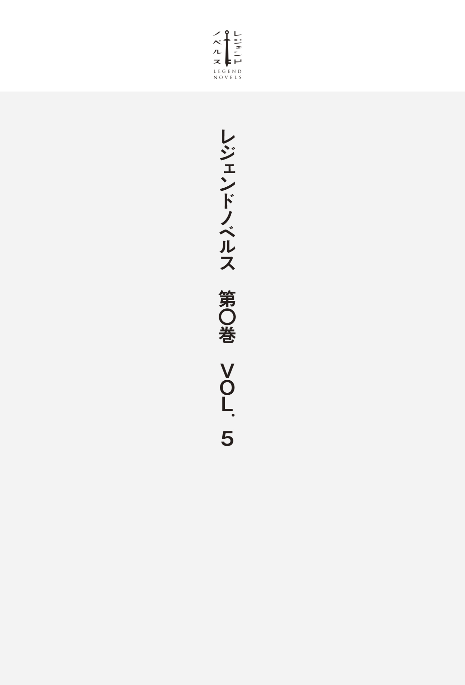

| レジェンドノベルス第０巻 ＶＯＬ．５ ２０１９年２月版 | |
| 焼月豕 & 宮澤花 & 加茂セイ & 第６１６特別情報大隊 | |
| 講談社 (2019) | |
本作品は、縦書き表示での閲覧を推奨いたします。横書き表示にした際には、表示が一部くずれる恐れがあります。
ご利用になるブラウザまたはビューワにより、表示が異なることがあります。

時は西暦二〇三〇年代。人類は仮想電脳空間に新たな世界を作り出す事に成功した。
すなわち、ＶＲ空間へのフルダイブ技術。それは医療や軍事をはじめ、様々な分野に瞬く間に浸透し、発展していった。
そして、それはゲームの分野においても同様であった。
仮想電脳空間に作成した世界に入り込み、五感全てを使って楽しむ事の出来るゲーム。すなわちフルダイブ型ＶＲゲームは、瞬く間に世界中で大流行した。
そして西暦二〇三八年、ゲーマー達 が待ち望んだＶＲＭＭＯＲＰＧ......仮想現実空間を利用した、大規模多人数同時参加型オンラインＲＰＧが遂 に産 声 を上げた。
フルダイブ型ＶＲゲームの第一人者であり、天才ゲームクリエイターと名高い四 葉 煌 夜 が生み出した、世界初のＶＲＭＭＯＲＰＧは、歓喜と共に日本中のゲームマニア達に迎えられた。
そのゲームの名は、【アルカディア】。
このお話は、そんなゲームの世界を駆け抜けた、一人の男の物語である。
西暦二〇三八年、八月某日。時刻は日本時間で十四時〇分。プレイヤー達が待ち望んだ、「アルカディア」のゲームサーバーが開放される時間だ。
千人のβ テスターと、初回ロット分のクライアント・パッケージを入手出来た一万人の幸運なゲーマー達はＶＲゲーム端末を装着し、一斉にログインを開始した。
強 靱 なログインサーバーはその日本各地からの一斉攻撃を受けてもびくともせず、万を超えるゲーマー達を優しく迎え入れた。この時代の通信技術は我々の知るそれよりも飛躍的に進化しており、遅 延 や不毛なログインゲームなどはもはや、過去の思い出の中にしか存在しない。
三日前より行なわれていたプレオープンにて分身 作成と初期設定、チュートリアルを終えていたプレイヤー達は、正式オープンと同時に一斉にログインし、スタート地点の街へと降り立った。
その街の名は、【城塞都市ダナン】。四方を草原に囲まれた、円形の堅 牢 な城壁に囲まれた大都市である。
かつて世界を襲った大崩壊を生き延びた人々が作り上げた、魔物に対抗する為 の人類に残された最後の一大拠点である。
高く、堅い城塞と都市全域に張られた結界は邪悪な魔物を寄せ付けず、そこに住む人々は平和を享受しているが、逆に言えばこの街を除いた全ての地域は魔物の支配下にあり、人々はこの地に押し込められているとも言える。
その事を憂いた当代の領主は勇気ある冒険者達を募り、各地に蔓延 る魔物を排除し、かつて理想郷と呼ばれた平和な世界を取り戻す計画、プロジェクト・アルカディアを発動させた。
プレイヤーはその冒険者の一人となって、冒険の旅に出る事になる。
......というのが、このゲームの設定である。
そのプレイヤー達だが、彼らの多くはファンタジー世界に相応 しい鎧 やローブ等 の衣装に身を包み、剣や槍 、弓に杖 といった武器を装備している。
このゲームでプレイヤー達が操る分身は、精密な身体スキャンを行なう事によって、現実のプレイヤーの顔つきや体型・性別が反映されている。
何 故 かと言うと、あくまで擬似的にとは言え自分の身体 を動かしてプレイするゲームである以上、現実の肉体とあまりに乖 離 した分身を使用すると、強烈な違和感の為にまともに動けなくなったり、最悪の場合は現実世界に帰還した際に自分の肉体に違和感を覚えたりする危険がある為だ。
その為、身長や体型などをある程度調整する事は可能だが、大幅に変える事は出来ず、性別も現実のそれと同じ物にしなければならないのだった。理想の美少女になりきるリアル・ネカマプレイをやろうとしていた男達は絶望した。
そのような事情もあって、男女比はおおよそ八対二といったところだ。女性のオンラインゲームプレイヤーも増加傾向にあるとは言え、まだまだ男性が大多数なのは仕方がないと言えるだろう。
そんなプレイヤー達の多くは物珍しそうに周囲を見回したり、仮想の肉体を動かしてみたり、近くにいるプレイヤーと交流したりと思い思いに行動していた。
だが、そんな平和な光景の中、異彩を放つ一人の男が姿を現した！
その男は身長がおよそ百八十センチメートル台半ばほどの長身だ。がっしりとした肩幅に広い背中をしており、相当鍛え上げているのだろう、無駄のない理想的な筋肉の付き方をしている。
年齢は、恐らく三十代半ばから後半と思われる中年男性だ。十代・二十代の若者が多いこのゲームの中では、その点だけでも十分目立つ存在だろう。
だが、それだけであれば少し珍しい程度で済むだろう。そして当然この男は、それで済むような生易しい存在ではない！
まず、所々逆立ったり跳ねたりしているぼさぼさの黒髪に無 精 髭 。そして口には咥 え煙草 。
それらの特徴によってだらしない印象を受けるが、顔つき自体は決して不細工ではなく、鍛え上げられた身体つきもあって、むしろワイルドで男前な容姿と言っても良いだろう。
だがそれらを台無しにするのが、何よりも特徴的な目つきである。その上に位置する太い眉毛と共に大きく、鋭く吊 り上 がったその目が、元々お世辞にも良 いとは言えない人相を更に際立たせており、野武士や山賊のような印象を受ける。
そして、彼がその身に纏 う衣装は白いツナギだ。腰の後ろには工具類が入った革製のポーチを付けている。一体どこの工場から出てきたのだろうか、この男は。控え目に言ってもファンタジー世界とは全く釣り合わず、むしろ真逆の方向へとフルスロットルで大爆走しているような恐るべき不審人物。明らかに浮きまくっている！
その場にいたプレイヤー達は、ビビりながらも思わずそのヤバそうな男へと視線を向けた。するとゲームシステムがその視線の動きに反応し、視線の先にいる男をターゲッティングした。それにより、プレイヤー達の視界に、男のキャラクター・ネームが彼の頭上辺りで表示される。
【謎のおっさん】
それが、その男の頭上に表示された名前であった。
名は体を表すという諺 があるが、まさにその言葉通りの異様かつ的確な名前である。シンプルながらも破壊力抜群のその六文字がおっさんの頭上にでかでかと浮かび上がるその光景は、傍 から見れば何とも滑稽かつ異様である。
当然のようにその男、謎のおっさんは非常に目立っていた。言うまでもなく悪い意味でだ。たった一人でファンタジーな世界観を崩壊させんとするその勇姿、あるいは暴挙に周囲のプレイヤー達は恐 れ慄 き、ドン引きした。
見るな、関わるな。あれは危険だ。大半のプレイヤーはそう決意し、謎のおっさんを見なかった事にして目を逸 らした。実に賢明かつ妥当な判断である。だがしかし、その場にはうっかり彼に関わってしまった、哀れな一団があった。
「おいコラァ！ 待ちやがれ！」
謎のおっさんに向かって声を荒らげる男達。その数、五名。彼らの姿もまた、謎のおっさんに負けず劣らずの奇 天 烈 なシロモノであった。その服装は革ジャンを素肌の上から羽織り、棘 付きの肩パッドを装着した世紀末ファッション。そして何よりも特徴的なのは、その髪型だ。
まず先頭にいるのは極彩色のド派手なモヒカン頭。次に前方に長く伸びた真っ赤なリーゼント。更には大きく膨らんだ黄色いアフロヘアーの男に、長い髪を頭の上で結わえて巨大な髷 にしている傾 奇 者 のような男、最後にホウキを逆さまにしたような、縦に長い逆毛の男。
「おい、待てっつってんだろうが！」
「そこのオッサン！ テメエだよ！ おう止まりやがれ！」
そんな奇妙な集団に罵声を浴びせられながらも、おっさんはまるで聞こえていないかのように歩き去ろうとする。当然、男達はおっさんを追いかける。肩に手をかけられ、ようやくおっさんは面倒臭そうに足を止め、振り返った。
「おう、そこのオッサン！ 随分とフザけた恰 好 してんじゃねーかコラァ！」
「このゲームのジャンルはァ、ファンタジーＲＰＧだぞエーコラァ!? 」
お前らが言うな！ と周囲のプレイヤー達は心の中で一斉にツッコんだ。無論、それを口に出す無謀な勇者はいない。理由は勿 論 、こんなイカレた世紀末野郎とは関わり合いになりたくないからである。当たり前だよなぁ？
謎のおっさんと世紀末愚連隊の破滅的コラボレーションによってファンタジーな世界観は見るも無残に破壊され、一触即発の空気が辺りに漂う。こんな空気の中に入っていけるのは、余程の馬鹿か命知らず、あるいは彼らに負けず劣らずのイカレポンチだけであろう。
そして遂に彼らは数人でおっさんを取り囲み、「土下座しろ」だの「カネ出せ」だのと因縁を付け始めるのだった。
彼らはＰＫ、すなわちプレイヤーキルを中心とした、悪党プレイに憧れるプレイヤー達だ。現実世界においても友人同士であった彼ら五人は示し合わせてゲームにログインすると、早速徒党を組んだ。そして早速景気付けに、冴 えないおっさんを集団で囲んで恫 喝 し、金をむしり取ろうという魂胆であった。何という外道か！
ちなみに中身のプレイヤーは皆、真面目で成績も良いがクラスではいまいち目立たない、ごく普通の高校生の少年である！ 嗚 呼 、何という事か。受験勉強のストレスが彼らをこのような凶行へと向かわせたというのか！
さて、モヒカン達に囲まれて汚い言葉を浴びせられている謎のおっさんだが、彼は面倒臭そうに彼らの言葉を聞き流すだけであった。そんなおっさんの態度に業を煮やしたモヒカンが、おっさんに迫る。
「おうオッサンよ、さっきからダンマリか。何とか言ってみろよ？ それとも俺達にビビって......」
「おい、クソガキ」
モヒカンの言葉は途中で遮られた。おっさんが目の前のモヒカンを睨 みつけながら遂に口を開いたからだ。低く重い、威圧感のある声が発せられる。
「さっきからゴチャゴチャとうるせえんだよ。それと汚 ぇツラ近付けんな！」
「ごばぁっ!? 」
罵倒と同時に、おっさんはその拳をモヒカンの眉間に叩 き込 んだ。鋭いパンチに顔面を打ち抜かれ、モヒカンが吹き飛ぶ。
おっさんはその様を見ながら満足そうに煙草をゆっくりと吸い、煙を吐き出した。
「てめえ！ クソ中年！」
「やんのかオッサンコラァ！」
「五対一だぞ！ 勝てると思ってんのか？」
一拍の後、我に返った男達は怒りを爆発させておっさんに詰め寄る。殴られたモヒカンもまた、眉間を押さえながら屈辱と怒りに顔を真っ赤にさせて起き上がる。
おっさんは、そんな彼らを馬鹿にするように笑い、こう言った。
「てめえらなんぞ、五人だろうが五億人だろうが俺の敵じゃねえんだよ。死にてえ奴からかかってきな」
「やっちまえ!!! 」
その挑発に、男達の怒りが爆発した。モヒカンの号令と共に、彼らはそれぞれ装備した武器を抜き放ち、一斉に襲いかかる。
それに対するおっさんだが、彼は事ここに至っても余裕の表情で煙草を吹かしていた。そしてあろう事か、こんな言葉まで口にする。
「それとハンデをやろう。俺はこの煙草を吸い終わるまでの間、攻撃をしない。その間に一発でも攻撃を当てられれば、お前らの勝ちって事にしてやるよ」
多勢に無勢のこの状況で、凄 まじい舐 めプ宣言が飛び出した。何たる傲慢か！
モヒカン達は激怒し、必ずやこの傲岸不遜なおっさんを殺さねばならぬと決意した。斧 が、槍が、刀が、大剣が、おっさんを殺 めんと一斉に振るわれる。
「おいおい、やる気ねえのか？」
だがその攻撃は、全て空を切る。おっさんは涼しい顔で、四人分の攻撃を最小限の動きで回避していた。
躍起になって次々と攻撃する男達だったが、その全てが虚 しく空振りに終わる。
「ハハハ、当たらねぇなぁ」
「どけ！ 俺がやってやる！」
その言葉を発したのは、モヒカンチームの中で唯一の遠距離武器使い、アフロヘアーの男だ。彼がその手に持つのは長銃型の武器だった。
魔導銃 。この世界には魔導機械と呼ばれる、魔力を動力として動く機械が存在し、この魔導銃はその技術によって作られた武器である。火薬ではなく魔力を使って銃弾を射出する、遠距離用の武器の一種だ。
「ロックオン完了！ 食らいやがれ！」
彼が使ったのは魔導銃の基本アビリティ、【ロックオン】。標的に銃を向けて一定時間待機する事で対象をロックオンし、命中精度を向上させつつ射撃の威力を向上させる効果がある。
射撃の際に少々時間がかかるのが欠点だが、自動的に対象に照準を合わせる事が出来る為、銃など扱った事のない日本の一般人であっても、問題無く射撃を命中させる事が出来る、便利な技能である。
それにより、銃弾は狙い通りにおっさんの心臓のある位置に向かって飛ぶ。
当たった！ 勝った！ そう確信するアフロであったが、おっさんに命中する寸前に、銃弾が停止する。他ならぬ、おっさんの手によってだ。
そう、おっさんは銃弾を、二本の指の間に挟んで止めていたのだった。
「な、なんだと......!? 」
「馬鹿な、銃弾を素手で止めた......!? 」
その有り得ない光景に、思わず手を止めて見入るモヒカン達。それと同時に、遂におっさんが煙草を吸い終わる時がやってきた。
「今のは惜しかったな。だが、タイムオーバーだ」
おっさんが吸い殻をその場に投げ捨てると、それは地面に落ちると同時に消滅した。ここはゲーム内なので、耐久度がなくなったアイテムはこのように自動的に消滅するが、現実世界での煙草のポイ捨ては厳禁である。読者の皆様もどうかお気を付けいただきたい。
「野郎ッ！ こうなったら俺の必殺アーツを受けてみやがれッ!! 」
モヒカンが両手斧を下段に構え、腰を深く落として力を溜 めると、その手に持った斧が輝きだす。
アーツ。戦技とも呼ばれるそれは、各種武器スキルを鍛える事で習得可能な、使用前や使用後の隙は大きいが高い威力を誇る、いわゆる必殺技のようなものである。モヒカンが発動させようとしているのは、両手斧の基礎的なアーツ【スマッシュ】だ。
「食らいやがれええええええッ！」
モヒカンは力強く踏み込むと同時に、斜め下からおっさんの胴体に向かって勢い良く振り上げた。だがしかし、その攻撃はまたも空振りに終わる。おっさんは既に、その場にはいなかった。
「消えた!? どこ行きやがった!? 」
キョロキョロと周囲を見回すモヒカン。その視界に影がさす。
「上かッ!? 」
「ご名答。褒美に俺のアーツをくれてやる」
勘の良い読者の皆様ならば、もうお分かりだろう。おっさんはモヒカンが放った【スマッシュ】が命中する直前に、空高く跳躍する事でその攻撃を回避しながら頭上の死角を取ったのだ。ちなみにこの大跳躍は【軽業】スキルに属するアビリティ【ハイジャンプ】によるものである。
「【ヘヴィストンプ】ッ!! 」
落下スピードを乗せた、必殺の踏みつけ攻撃がモヒカンを襲う。自慢のモヒカンヘアーを無残に踏み潰しながら、おっさんの両足がモヒカンの頭にめり込んだ。
格闘アーツ【ヘヴィストンプ】。おっさんが使ったその技は発動後に垂直落下し、落下地点にいる敵に強力な衝撃属性のダメージを与える。また、与えるダメージは落下速度と使用者の装備品の重さに比例して上昇する。
おっさんはそのままモヒカンの頭を踏み台にして跳躍すると、空中でひねりを加えた三回転を披露し、華麗に着地を決めた。
モヒカンは仰向けに倒れて動かなくなった。モヒカンをよく観察すれば、彼の頭上にキャラクターネーム──モヒカン皇帝とか言うセンスを疑う名前だ──と共に表示されている、ＨＰ を示すバーが真っ黒になっているのが見えるだろう。それはつまり、彼のＨＰがゼロになり、死亡した事を意味する。
そして死亡した為、デスペナルティとしてモヒカンはいくらかの経験値と所持金、所持品を失う事になる。それらは殺害したおっさんに与えられる。おっさんは少量の経験値とゴールド、そして先程までモヒカンが振り回していた戦斧 を手に入れた。
「さて......次はどいつだ？」
ギロリ。おっさんが残った男達を順番に睨みつける。
「てめえかリーゼント。それともそっちのチョンマゲか？ それともさっき生意気にも俺に銃弾をくれやがったアフロにお返しをするべきか？ いや、まずはそこの鬱陶しい逆毛から処刑してやろうか」
事ここに至ってようやく、男達は手を出してはならない相手を敵に回した事を悟った。
「に、逃げろぉっ！」
「うわあああああああっ！」
「助けてくれえっ！」
「ひいいいいいいいっ！」
恐怖し、一目散に逃走する彼らの背中を見つめながら、おっさんはニヤリと獰 猛 な笑みを浮かべた。その瞳はまるで悪戯 好きな子供のようにギラギラと燃え盛っている。確実に何か良からぬ事を思いついたのであろうと、容易に想像が出来る顔だ。
「待てコラァ！ どこにも逃げられんぞぉ！ 地獄の果てまで追い詰めてやる！」
「うわあああああ！ 追いかけてきたあああああ!? 」
「来るな、来るなああああああ！」
「死にたくねぇ！ 誰か助けてくれぇ！」
「ママーッ！」
大声で宣言しながら猛スピードで追走を始めるおっさんと、悲鳴を上げながら逃げる男達。そしてそんな彼らを眺めながら、困惑する一般プレイヤー達。
それが世界初のＶＲＭＭＯＲＰＧ、【アルカディア】の初日の光景であった。
......そんな中、落ち着いた様子で一部始終を見守っている者達がいた。
よく見れば彼らの装備は他のプレイヤー達よりも上質な物であり、佇 まいにも強者の貫 禄 が見て取れる。
彼らこそは元β テスター。かつて行なわれたβ テストで手に入れたアイテム、ステータス、スキル、そしてこのゲームの知識を引き継いだ、僅か千人の古 強 者 達である。
「馬鹿な奴らだぜ。よりによって、あのおっさんに喧 嘩 を売るなんてな」
彼らの内の一人がそう口にすると、他の者達も頷 き、口々に言う。
「全くだな。ふざけた名前と恰好だが、実力は桁違いだ」
「流石 は【七英傑】の筆頭といったところか......」
「今後もあの人の動きには要注意だな......」
曲 者 揃 いの元β テスターが、これほどまでに恐れ、敬うおっさんは、やはり只 者 ではなかったようだ。
果たして謎のおっさんとは、一体何者なのか。そして彼はこのＶＲＭＭＯＲＰＧ「アルカディア」の世界で、これから何を成すのであろうか。
それは神ならぬ我々には、未 だ知る由もない。だが一つだけ、はっきりと言える事がある。それは謎のおっさんが、これから先も今回のような騒動を、次々と巻き起こすであろうという事だ。
「ハァ、ハァ......流石 に逃げ切ったか......？」
「ここまで来れば、もう大丈夫だろう......」
城塞都市ダナンの一角、入り組んだ路地裏にて息を潜め、小声で話し合うは四人の男達 。彼らは前回、おっさんに喧 嘩 を売って返り討ちに遭った少年達だ。リーダー格のモヒカン頭の少年はおっさんの手にかかり亡き者になったが、彼ら四人は必死に逃走した結果、おっさんを撒 く事に成功し、こうして路地裏に隠れていた。
ようやく一息ついたところで、これからどう動くかを考える余裕が出来た少年達であったが、彼らにとっての地獄はむしろ、ここから始まるのであった。
「見つけたぞガキ共！」
路地裏に響くは低く渋い中年男性の声。あの男、謎のおっさんの声だ！ 少年達は己の記憶に恐怖と共に刻まれたその声を、聴き間違える筈 もなかった。
見つかった！ その事実を認識すると共に、彼らは一斉に走り出した。身を隠す為 に入ったこの路地裏は、一度見つかってしまえば一転し逃げ場のない袋 小路 、死地に転ずる。本能的にそれを察知した少年達は、迷う事なく走り出した。
その判断は正しい。もしもその場で悠長におっさんの姿を探すような真 似 をしていれば、彼らはその場で死んでいただろう。
少年達が走り出した直後、おっさんが路地裏に降り立った。おっさんは建物の上から彼らの様子をうかがっており、逃げ切ったと油断していた彼らをいつでも始末する事が出来た。だがおっさんは、襲撃する前にわざと彼らに声をかけた。わざわざそんな事をした、その理由とは。
「良 い判断だ、まだまだ楽しめそうだな。よーし、次はどの手でいこうか」
おっさんがニヤリと悪戯 っぽい笑みを浮かべる。そう、その理由とは、あの少年達をトコトン追い詰めて遊ぶ為であった。とんだサディストである。
どうやらプランは決まったようだ。おっさんの姿が音もなくその場からかき消える。
一方その頃、路地裏を脱出した四人のプレイヤー達は大通りを走っていた。隠れるのが無理ならば、いっそ人混みに紛れてしまおうという魂胆だ。
「どけどけぇ！ どきやがれぇ！」
「邪魔だてめえら、消毒すっぞ！」
街中で武器を抜き、デタラメに振り回しながら大通りを爆走する珍妙な髪型とファッションの男達に、プレイヤー達は怯 えたりドン引きしながら思わず道をあけてしまう。彼らプレイヤーの多くは平和な日本に暮らす、荒事とは無縁な若者達だ。咄 嗟 にこの暴漢達から逃げ出そうとしてしまう彼らを責めるのは酷というものだろう。
だがこの騒ぎの中、暴れる世紀末野郎共の事も、逃げ惑う一般プレイヤー達の事も意に介さず、まるで目に入っていないかのように振る舞う人物が、一人だけ存在した。
「うおおおおお！ 邪魔だジジイ！ 道をあけろォ！」
その人物は老人であった。周囲の騒ぎに気付いていない様子で、杖 をつきながらゆっくりとした歩みで、悠々と通りを横切ろうとしている。
「クソが！ あのジジイ聞こえてねえぞ！」
「畜生、構うこたぁねぇ、やっちまえ！」
邪魔な老人を力尽くで排除しようと、先頭を走っていたリーゼントが武器を装備する。彼の持つ武器は長い両 手 槍 だ。彼は突撃しながら敵を吹き飛ばす槍用アーツ【ランスチャージ】を発動し、道を遮る老人に向かって突撃する。数秒後には無力な老人が哀れにも暴漢の手にかかり、無残に散るであろう事は想像に難くない。誰もがそう思った事だろう。だが次の瞬間、その場にいた全員が己の目を疑った。
「何だと!? 」
次の瞬間、老人はその手に持った杖で、リーゼントの槍突撃を止めていた。何という奇妙な光景！ 腰が曲がり、満足に歩く事すら困難と見られる老人が、片手に持った杖で軽々と、両手槍を持った男の突撃を止めているではないか！
「ば、馬鹿な......」
啞 然 とするリーゼントとその仲間達。だが驚くのはまだ早い。
「キエエエエエエエエエエィッ！」
猿叫と共に、目にもとまらぬ速さで老人が杖を振るう。否、正確には彼が手にしているのは杖ではない。その正体は刀が内蔵された、仕込み杖だ。
抜刀、一 閃 。振るわれた刃はリーゼントの持つ両手槍を、その持ち主ごと両断していた。
「あ、あわわわわ......」
「ひぃっ......な、何だこのジジイ......」
武器ごと両断されたリーゼントの死体を前に、残った三人は恐怖した。そんな彼らに、刀を納めた老人が話しかける。
「若者達よ、そんなに急いでどこへ行こうというのかね」
温厚そうな老人の声に、僅かに正気を取り戻した彼らは震える声で答える。
「お、俺達、妙なおっさんに追われてて......」
「逃げるのに必死だったんです！ 許してください！」
「見逃してください！ お願いします！」
目の前の老人もまた、あのおっさんのような理不尽な強さだったが、こちらはまだ話が通じそうだと判断した彼らは、必死に赦 しを乞う。この爺 さんなら謝れば許してくれるだろう。場合によってはおっさんから俺達を助けてくれるかもしれない。そんな淡い期待を込めて。
彼らの必死の弁明を受けて、老人は深く二度、頷 いた。
「そうかそうか。そりゃあ大変じゃったのう。ところで、そのおっさんというのは......」
そこまで言ったところで、老人は自身の皺 だらけの顔に手をかけた。そして、腕に力を込めてその顔を強く引っ張ると、何と顔がビリビリと音を立てて剝がれていくではないか。
「この俺の事かああああああああああ！」
何と、剝がれた老人の顔の下から現れたのは、謎のおっさんの凶悪なツラだった。続けて老人が着ていた服がバリバリと破れ、その下から屈強な肉体と、それを包む白いツナギが現れる。驚 愕 の事実！ この老人の正体は、変装したおっさんであった！ わざわざ先回りして一見無害そうな老人に変装するという、無駄に手間をかけたトラップが見事に炸 裂 した。
「ぎゃあああああああ！ 出たあああああああああ！」
「ぴぎゃあああああああああああ！」
「あびゃあああああああああああ！」
助かった。そう思った直後に襲いかかる恐怖と絶望！ まさに上げて落とす！ あまりのショックに言語中枢が機能不全に陥った男達は、我を忘れて遁 走 しようとするが......しかし既に、彼らは完全に包囲されていた。
「どこへ行こうというのかね」
「言った筈だ、どこへも逃げられんとな」
「観念しろ、今なら楽に殺してやる」
そう口にしながら彼らを囲むのは、無数に分裂したおっさんであった。一体如 何 なる手段によるものかは分からぬが、十人を超えるおっさんの姿が見える。
「増えたああああああ!? 」
「ぶ、分身？ 忍者!? 」
それに囲まれる者達の恐怖はどれ程のものか。彼らが絶望的な状況に諦め顔になった、その時。彼らを囲むおっさんの群れを、更に包囲する者達が現れた。
「そこまでだ！」
「大人しく投降しろ！」
その者達は統一された鎧 や兜 を装備した一団だ。装備している剣や盾も全て同じ品であり、手にしたそれを油断なくおっさんに向けている。その正体はＮＰＣ の衛兵 である。衛兵は街の中に数多く配置されているＮＰＣの内の一種で、街を巡回し、犯罪者を取り締まる役目を持つ。
基本的に彼らは【悪名値】のパラメータが【名声値】と比較して極端に高い犯罪者プレイヤーを発見した時か、街の中での殺人や窃盗、器物破損などの現行犯を発見した時に敵対フラグが立ち、犯罪者を逮捕するべく襲いかかってくる。今回、おっさんは後者に引っかかった形になる。
「殺人の現行犯で逮捕する！ 総員、犯罪者を確保せよ！」
衛兵隊長の指示の下、衛兵達がおっさんを逮捕しようと殺到する。
彼らに捕まったプレイヤーは罪状に応じて一定期間、監獄エリアに収監される事になる。その内部でモンスター討伐、アイテム生産などの懲役が科せられ、罪を償う事で悪名値が低下し、解放される事になる。
このまま捕まってしまっては、二話目にして主人公がブタ箱送りになってしまう恐ろしい展開を迎えてしまうが......このおっさんが、大人しく捕まる訳もなく。
「遅 ぇッ！」
衛兵達がおっさんに斬りかかる。まずは三人、正面と左右から剣による同時攻撃だ。それに対しておっさんは両手で手刀を繰り出し、左右から迫る衛兵の剣を叩 き折 りながら正面の衛兵を強烈な前蹴りで吹き飛ばす。おっさんの全力蹴りをガラ空きのボディに叩き込まれた衛兵は、身体 をくの字に折り曲げながら、後続を巻き込んで派手に転倒した。
おっさんは間髪容 れずに両足を大きく広げ、両手の掌 を左右にそれぞれ勢い良く突き出す。掌底を受けた二人の衛兵は地面と水平に数十メートル吹き飛び、民家の壁に突き刺さった。
「隙ありぃ！」
だがそこで、おっさんの背後から一人の衛兵が襲いかかった。上段からおっさんの頭に向かって、両手で持った剣が振り下ろされる。
「そんなものはねぇ」
「!? 」
だが剣を振り下ろしたその瞬間、衛兵の視界からおっさんの姿が消えた。次の瞬間、おっさんは衛兵の背後に出現し、その右手には一振りの短剣が握られていた。
おっさんが短剣を衛兵の背中に深々と突き刺し、その一撃で衛兵が重傷を負い、倒れる。おっさんが発動したのは暗殺スキルを鍛える事で習得可能な汎用アーツ、【バックスタブ】だ。敵の背中に命中した時に限り、与えるダメージとクリティカル率に大幅なプラス補正が加えられる。
「や、槍だ！ 槍を装備しろぉ！」
隊長の指示に、衛兵達は同時にアビリティ【クイックチェンジ】を使用し、武器を槍に換装した。勘の良い一部の読者の方は既に気付いているかもしれないが、このアビリティは手にした武器を一瞬でアイテムストレージ内の別の武器に切り換える効果を持つ。本来は時間がかかる武器交換を戦闘中に一瞬で行なえる、非常に便利なアビリティだ。
「よし！ 槍のリーチを活 かして、奴の間合いの外から攻撃するのだ！」
やや安直ではあるが、効果的な作戦である。彼らは両手で槍を構え、慎重におっさんを包囲しようとする。対するおっさんは、この布陣にどう対抗するつもりか。
「なるほど、確かに悪くない手ではある。が......」
おっさんは言いつつ、一瞬で近くにある背の高い街灯の隣へと移動した。そして両手で街灯を摑 むと、無造作にそれを引っこ抜いた。
「相手がもっと長 ぇ武器を持ってたら無意味だよなぁ！」
おっさんが引き抜いた街灯を軽々と振り回し、衛兵を殴り倒す。
「がはははは！ ホームランだ！」
おっさんは笑いながら長い街灯をバットのように使い、堂に入った神主打法で衛兵を五人纏 めて空高くカッ飛ばし、思わず見 惚 れるほどのバット投げまで披露する。
「あ、あれは伝説の猛牛戦士!? 」
見ていたプレイヤーが思わず叫ぶほどの見事なバッティングであった。
「ええい、こうなったら弓を使うのだ！ 一斉に矢を放て！」
衛兵隊長が泡を食って叫ぶ。その指示に従い、残った衛兵達が弓を装備し、素早く矢を番 える。
「撃てぇッ！」
号令の下、おっさんに向かって一斉に矢が放たれる。おっさんはそれに対し、腰を深く落とし、両手の掌を前に突き出した構えで応じる。
次の瞬間、放たれた矢はおっさんの指の間に挟まれ、止められていた。
「馬鹿な！ あれほどの矢を全て素手で止めたというのか!? 」
あまりの非現実的な状況に動揺する衛兵達。その隙を見逃すおっさんではなかった。
「おい、返すぜ！」
おっさんが両腕を鞭 のように振るい、受け止めた矢を投げ返す。それらは全て、衛兵達の膝に一本ずつ突き刺さった。それも全員に、寸分違わず同じ位置にだ。
「うぎゃあああああ！ 膝に矢がぁっ！」
「膝に！ 膝に矢を受けてしまったああああああ！」
「膝があああああ！ もうおしまいだああああ！」
「古傷がああああああああ！」
膝に矢を受けた衛兵達が地面に転がり、悶 え苦しむ。何 故 かは分からないが、衛兵達は膝に対する射撃攻撃が弱点として設定されていた。おっさんは常時発動型 アビリティ【弱点看破】によってそれを見抜いていた為、一切躊 躇 する事なく、その弱点を狙い撃ったのだった。
「ば、馬鹿な......我々衛兵隊が、ぜ、全滅めつめつめつ......」
残された衛兵隊長は戦意を喪失し、白目を剝 きながらその場に力なく座り込む。そんな彼の前に、おっさんが立つ。おっさんは衛兵隊長を見下ろし、高圧的な態度で言った。
「おい。これは正当防衛だ。そうだな？」
「えっ......？」
「俺はさっきの変な髪型のクソガキ共に襲われたから『やむを得ず』返り討ちにした。そいつを見たお前さん達が『誤解』をして襲いかかってきたから『仕方なく』応戦した。だからこれは正当防衛だ。全ては『不幸なすれ違い』が生んだ悲劇だ。そうだよな？」
全力で威圧しながら俺は悪くないアピールをするおっさんであった。だが皆、騙 されるな！ この男は一見尤 もらしい事を言っているように感じるかもしれないが、もし本当にそう思っているなら衛兵達を傷付けずに無力化する事くらい、おっさんは容易 く出来た筈だ。間違ってもノリノリで笑いながら衛兵を場外ホームランするような真似をする筈がない！ このおっさんは単に、いきなり襲いかかってきた衛兵がムカついたからブン殴った、ただそれだけである！
勿 論 、衛兵隊長もそんな事は分かっている。分かっているが、
（この提案、いや、脅しを断ったら、おれは死ぬ）
この男は刃向かう相手には一切容赦しない！ そして相手の身分や立場など一切考慮しない！ 一度敵と見ればたとえ相手が世界の王だろうと、神であろうとお構いなしに殴り倒す！ 目の前のコイツはそういう人種である！ 衛兵隊長は理性ではなく、本能でそれを察した。
「という訳で俺は悪くない。ＯＫ？」
「お、ＯＫ......」
もはや選択の余地はなかった。権力が暴力に屈した瞬間であった。おっさんは満足そうに笑うと、アイテムストレージから大量の金貨が詰まった袋を取り出した。
「不幸な誤解が解けて何よりだ。それとこいつはアンタらに怪 我 させちまった分の詫 びと見舞金だ。取っておいてくれ」
おっさんが大量の、衛兵隊長の年収を大幅に超える額の金貨を押し付ける。一度屈してしまった以上、それを固辞するという選択肢は隊長にはなかった。賄賂、もとい慰謝料及び見舞金を唯々諾々と受け取ってしまった。示談成立ッ！
多額のゴールドを押し付け、おっさんが去る。衛兵隊長はそれを為 す術 なく見送った。周囲を見回せば、傷付き倒れた満身創 痍 の部下達の姿がある。だが幸いにして、死者は一人もいないようだった。おっさんはどうやら、ギリギリ死なない程度に手加減はしていたようだ。
衛兵隊長は考える。これからどうしようか。まずは部下達の治療をして、それが終わったらこの金を皆で分配しよう。そして、それが終わったら......
（衛兵やめて、実家に帰ろう。帰って両親と一緒に畑を耕そう。うん、それが良い......）
隊長の心は折れた。もはや衛兵としての再起は叶 わないであろう。だがその結果、彼はシステムが定めた己の運命から逃れ、一人の人間として穏やかに暮らす自由を手に入れた。
こうして意図せずに一人のＮＰＣに多大な影響を与えたおっさんは......
「おっかしいな、何か忘れてるような気がしたが......気のせいか？ まあ、忘れたって事はどうせ大した事じゃねぇだろうし、まあ良いか」
ひと暴れしてスッキリしたのか、ドサクサに紛れて逃走した少年達の事などすっかり忘れて、満足そうな様子で歩き去っていくのであった。
街の衛兵達 を相手に大立ち回りを演じた挙句、金を渡して全てをなかった事にしたおっさんはその後、街の外に向かって歩き出した。そして今、おっさんは【始まりの草原】フィールドを歩いていた。最初の街、城塞都市ダナンの城門をくぐれば、すぐにこの草原フィールドに出る。つまりこのエリアは名前通りに、最初の冒険の舞台となる場所である。
草原には小型の猪 型モンスター【スモール・ボア】の姿が多数見える。このゲーム内で最も弱いモンスターの一匹であり、初心者が戦闘に慣れる為 に戦う相手として最適だ。もう少し街から離れれば、強化版の【ラージ・ボア】や狼 型モンスターの【グレイ・ウルフ】、【ホワイト・ウルフ】といった敵が出現する。
草原の各所では、スモール・ボア相手に戦う初心者プレイヤーが多く見受けられる。どうやら苦戦しているようで、猪の突進をまともに食らって吹き飛ばされる者達もいた。そんな初々しいプレイヤー達の姿を見ていたおっさんは、微 笑 ましいような、もどかしいような複雑な気分になった。
「う、うわあああああああ！」
と、その時であった。猪の全力突進を食らって派手に吹き飛んだ中学生くらいの少年プレイヤーが、情けない悲鳴を上げながらおっさんに向かって飛んでくるではないか。このままでは彼はおっさんに衝突してしまう。そんな少年をちらりと見たおっさんは、
「ぶべらっ！」
無慈悲にも飛んできた少年をひらりと回避し、少年はそのまま顔面から着地する。その姿を見ておっさんは愉快そうに笑った。何て野郎だ。そして少年と戦っていたスモール・ボアが、彼に更なる攻撃を加えようと突進してくる。
「やれやれ、仕方ねえな」
おっさんは素早く少年とスモール・ボアの間に割り込むと、右手一本で猪の頭を押さえてその突進を食い止める。
「おい坊主、大丈夫か？」
「は、はい......何とか」
おっさんに声をかけられ、顔を上げた少年が見たのは小型とは言え猪の突進を片手で止めながら、びくともしないおっさんの姿。そのおっさんが、顔だけで振り向いて言う。
「ＨＰ残り少ねぇようだし、少し休んでな」
そう言うと、おっさんは腰の鞘 から短剣を抜き、素早くスモール・ボアに斬りかかった。攻撃を受けた事で標的がおっさんに切り換わり、スモール・ボアが牙を突き上げて反撃しようとする。
「遅ぇッ！」
その攻撃を半歩下がって射程外に出る事で悠々と回避しながら、おっさんが回し蹴りを放った。そのカウンターで牙をへし折り、スモール・ボアを大きくのけぞらせる。そしてすれ違うように素早く、さりげなく敵の背後に回り【バックスタブ】を発動し、背中に短剣を深々と突き刺してトドメを刺した。
「プギィィィ......」
断末魔の声と共にモンスターが倒れ、数秒後にその死体が消滅する。敵を倒した事でおっさんは僅かな経験値とゴールドを獲得し、そして戦利品がドロップされた。魔獣の毛皮、猪の肉、猪の牙の三点だ。おっさんは地面に落ちたそれらを拾い、少年に投げ渡した。
「えっ、あの、これは......」
「元々はお前さんが戦ってた敵が落とした分だ。取っときな」
「えぇ......でも、殆 ど貴方 が倒したようなものですし、悪いですよ......」
「律儀なのは良 い事だが、別に構わねえよ。大体、それくらい簡単に集められるしな」
おっさんは申し訳なさそうにする少年に背を向けると、自らの言葉を証明する為に、近くにいるモンスターを狩る事にした。幸い、付近には多くのスモール・ボアが棲 息 している。おっさんはそれらに襲いかかった。
おっさんとモンスターの戦いは、完全なワンサイドゲームだった。一方的な虐殺と言い換えても良い。
モンスターの動きを完全に見切り、最小限の動きで回避しながら翻弄し、絶妙のタイミングでカウンターを入れて牙の部位破壊を行ない、次の瞬間には死角から弱点を的確に攻撃してあっさりと仕留めて見せる。一切の無駄を排除した洗練された動きに、モンスターは攻撃を当てるどころか、殆ど何もさせて貰 えないまま絶命した。
「ちょっ、おいおい、何だよあの動き......」
「何というスタイリッシュな戦闘だ！ 敵の動きを完全に見切ってやがる！」
「ヤバい、おっさんの癖に華麗すぎる......」
周囲のプレイヤーは戦いの手を止め、常人離れしたおっさんの戦いぶりに注目していたが、当のおっさんはそんな彼らの視線を全く意に介さず、モンスターを乱獲し続けるのだった。
「温 いな......準備運動にもなりゃしねえ。ま、街周辺のフィールドならこんなモンかね」
大量に稼いだ経験値とドロップ品を前に、おっさんは煙草 に火を点 けながらそう呟 いた。そろそろ次の狩場に移動するかと考えた時、おっさんの背中に声をかける者がいた。
「あの、すみません！」
その声の主は、先程おっさんに助けられたプレイヤーだった。短剣と革 鎧 を装備した、小柄な赤毛の少年だ。おっさんは振り返り、彼に向かって言う。
「おう、さっきの少年か。どうした？ 俺に何か用かい」
「は、はい！ あの、貴方の戦い方を見て凄 いと思ったので......その、良かったら指導をお願い出来ないでしょうか！」
真正面からおっさんと向かい合った少年は、長身のおっさんに鋭い眼光で見下ろされてビビるが、勇気を出しておっさんにそう言った。ちなみに、おっさんの目つきが悪いのは生まれつきであり、本人は別に睨 んだり威圧する気は一切ない。
「指導ねぇ......」
ふむ、とおっさんは顎に手を当てて少考するが、別に大した用事もなかったし、まあ良いかと結論付け、少年のその頼みを快諾した。
「ま、新人 に色々教えてやんのも先人の義務ってヤツか。良いぜ、付き合ってやるよ」
おっさんがその言葉を発すると同時に、周囲のプレイヤーがわっと歓声を上げて、おっさんの周りに集まってくる。どうやら彼らも赤毛の少年と同じ事を考えていたらしく、様子をうかがっていたようだ。俺にも！ 私も！ と声を上げる彼らに、調子の良い連中だと少々呆 れはしたが、どうせ教えるなら纏 めてやったほうが手っ取り早いし、一度受け入れた以上は最後まで付き合ってやるのが人情ってモンか、と考えて自らを納得させるのであった。
「あー、コホン。それじゃあ実演しながら解説するぞ」
おっさんは集まったプレイヤー達を一ヵ所に纏めると、モンスターと相対して実際に戦いながらコツを説明する事に決めた。
「まず、このイノシシ型モンスター、スモール・ボアだがな、よく観察すりゃあ気付くと思うんだが、攻撃パターンは三種類しかねぇ」
おっさんはそう説明しながらスモール・ボアに近付くと、その顔面に向かって無造作に一発、蹴りを放った。その結果、当然モンスターにダメージが発生し、蹴られたモンスターはおっさんに対して敵対行動を取り始める。
「一つ目がこの、正面に向かって牙を突き上げる攻撃だ。こいつは敵が近距離・正面にいる時によく使ってくるから、横か後ろに下がって避 けりゃ良い」
その教えのまま、おっさんは太い牙を勢い良く突き上げてきたスモール・ボアの攻撃を、素早いサイドステップで回避しつつ側面に回り込んだ。
「次はこの、前足を大きく上げてから勢い良く振り下ろす攻撃だ。これはこいつが足を下ろした場所を中心に円形の範囲を攻撃する範囲攻撃だが、予備動作が長 ぇし範囲も大して広くねえ。落ち着いて後ろに下がるかガードしな」
おっさんは解説しながらバックステップを何度か繰り返して、スモール・ボアから大きく距離を取った。スモール・ボアの範囲攻撃を避ける為というには下がりすぎだが、それは次の攻撃を誘発させる為でもあった。
「最後の三つ目は、この突進だ。敵が離れた場所にいるとこうやって一直線に突っ込んでくるから、直前でガードするか、横に跳んで避けるかすりゃあ良い。突進後は隙もでかいしな」
おっさんはスモール・ボアの突進が当たる寸前に、最小限の動きでひらりと回避した。まるで闘牛士のような華麗な回避に、ギャラリーから歓声が上がる。
おっさんの解説通り、スモール・ボアは突進を終えた後は暫 く静止し、隙が出来ていた。おっさんはその間にスモール・ボアの背後に回って短剣の一撃で葬ると、プレイヤー達に向き直った。
「さて、このようにモンスターの行動はある程度パターン化されていて、それを覚えちまえば対処するのは簡単だ。これを踏まえた上で、防御に使えるテクニックを幾つか教えてやろう」
おっさんはそう言うと、プレイヤーの一人に近付いて声をかける。
「つー訳でアンタ、ちょっとその盾を貸してくれねえか」
「あ、はい。どうぞ......」
おっさんはプレイヤーの一人から小型の盾【ウッドバックラー】を借りると、それを装備した。
「それじゃあ実践だ。まずモンスターの攻撃を、普通に盾で防御してみよう」
おっさんが再び近くにいたスモール・ボアに攻撃し、それに対してスモール・ボアが反撃の牙を剝 く。その攻撃に対し、おっさんはそれまでとは違って回避をしようとせず、盾を構えて防御姿勢を取った。
「【シールドガード】！」
おっさんは盾スキルの基礎防御アビリティ【シールドガード】を発動させた。その後、スモール・ボアの攻撃がおっさんに命中し、ガキィン！ という音と共に牙と盾がぶつかり合い、おっさんに少量のダメージが与えられた。
「お前らが今まで防御スキルを使ってた時って、こんな感じだったろう？」
おっさんの質問に、盾持ち達がうんうんと頷 く。その中で疑問を抱いた一人が声を上げる。
「って事は、そのやり方は間違いだったって事ですか？」
「別に間違いって訳じゃねえが、もっと良いやり方があるって事さ。まあ見てな！」
おっさんが再びスモール・ボアに相対する。スモール・ボアが一瞬の溜 めの後、再び牙を突き上げる動作を行なった。その瞬間。
「ここだ！ 【シールドガード】！」
パァン！ という乾いた音と共に、攻撃が命中したおっさんの盾が発光するエフェクトが発生し、スモール・ボアが体勢を崩した。対して攻撃を受けた筈 のおっさんはＨＰが全く減っておらず、その頭上には【Just Guard!!】の文字が一瞬現れて消えた。
「「「「「おおおおおおおおおっ!? 」」」」」
プレイヤー達から賞賛と疑問の入り混じった声が上がる。おっさんはすぐさまそれに応える。
「これが【ジャストガード】だ。攻撃が命中する直前、ギリギリのタイミングを狙って防御スキルを使う事で発生するバトルボーナスで、敵の体勢を崩せる上にダメージ軽減率も大きく上がる」
「すいません！ バトルボーナスって何ですか!? 」
「おっと、そこからか。バトルボーナスってのは、今見せたジャストガードの他に、敵の背後から攻撃すると発生するバックアタック、弱点部位への攻撃で発生するウィークポイントアタック、アーツで敵にトドメを刺すアーツフィニッシュ、空中で敵にトドメを刺すエアリアルフィニッシュ、敵の残りＨＰを大きく超えるダメージを与えるオーバーキル。こんな風に、戦闘中に特定の条件を満たす事で発生するボーナスの事を言うのさ。こいつが発生すると戦闘が有利になるのは勿 論 、ボーナス経験値が貰えるから積極的に狙っていきな！」
解説しながら、おっさんはウッドバックラーを持ち主に投げ返し、自前の短剣を装備した。
「さて、次に盾を使わねえ連中！ 特に大剣とか斧 とか両 手 槍 使う連中はよく見とけ、必須技能だぞ！」
おっさんの言葉に、両手武器使いのプレイヤー達が目を見開いて、その動きに注目する。おっさんは彼らの視線を受けながら軽快なステップを踏み、スモール・ボアの攻撃に備える。
「ブモォッ！」
「ふっ！ 【パリィ】！」
スモール・ボアが攻撃する瞬間、おっさんはそれを迎え撃つように右手の短剣を鋭く振るい、武器防御アビリティ【パリィ】で牙を弾 き返 した。先程のジャストガード成功時と似たようなエフェクトが発生すると共に、おっさんの頭上に【Just Parry!!】の文字が表示される。そしてジャストガードと同じように、スモール・ボアが大きく体勢を崩す。そして、
「【シャープストライク】！」
間髪容 れずに、おっさんが鋭く踏み込みながら全力で短剣を突き刺す単発アーツ【シャープストライク】を発動させ、一撃でスモール・ボアを絶命させた。
「ジャストパリィで体勢を崩したところにアーツでカウンター！ もうお前らも分かってると思うが、アーツは強力な代わりに隙がでかい技も多い。鈍重な両手武器なら特にだ！ だがこうすりゃあ、体勢を崩したところにノーリスクで必殺の一撃入れられるって寸法よ！ 分かったか！」
「凄 ェ！ 流石 おっさん！」
「このテクニック超助かる！」
両手武器使い達はおっさんが披露したテクニックを見て、習得していなかった者達は急ぎスキルウィンドウを開き、武器防御スキルを習得した。
「ま、防御に関してはこんなところだな。序盤はしっかり相手の動きを見極めて、それに対応する事を覚えるこった。そうすりゃ安全に戦えるし、そうこうしてる内に戦い方も上達すんだろ。じゃあ次はいよいよ、攻撃のほうを指導してやろうか」
そしておっさんは、プレイヤー達を使う武器ごとのグループに分け、それぞれの武器を実際に使ってみせながら実践的な指導を行なった。
その結果、何という事でしょう！ ついさっきまで最弱モンスターであるスモール・ボア相手に苦戦していた初心者達が、まるで別人のような動きになっているではないか！
最初におっさんに話しかけた赤毛の少年は、短剣を軽く握りながら近くにいるモンスターに狙いを定めた。
「動きが硬 ぇ......。お前は無駄に力が入りすぎだ。短剣使いがブンブン振り回してどうする」
「短剣の基本は蝶 のように舞い、蜂のように刺す事だ。力押しがしてえなら斧でも使うんだな」
おっさんはそう語った。その言葉を頭の中で繰り返し、少年は素早く敵の背後に忍び寄る。
（正面から正々堂々と戦う必要はない。狡 賢 く立ち回れ。弱点攻撃は基本......！）
少年はスモール・ボアの背中の弱点に狙いを定め、短剣を力が入りすぎないように気を付けつつ握り直し、習得したばかりの【暗殺】スキル、その初期習得アビリティである【不意討ち】を発動する。その効果は名前の通り、こちらを見ていない相手への攻撃の威力とクリティカル率を上昇させるものだ。
（必要以上の力はいらない。素早く、正確に！）
スモール・ボアの無防備な背中に短剣が突き立てられる。【バックアタック】と【ウィークポイント・クリティカル】のバトルボーナスを獲得すると共に、確かな手応えが右手に伝わる。
（欲張るな。攻撃だけに集中するな。短剣の基本は一撃離脱！）
スモール・ボアが前足を上げて範囲攻撃で反撃しようとする前に、少年は余裕を持ってバックステップで離脱し、腰のベルトに挟んである物に手を伸ばす。
「軽くて片手がフリーになるのも短剣の長所の一つだ。素直に盾を持つのも悪かねぇが、動きが阻害されるから、あまり重い盾は持てねえからな。こういうのと組み合わせるのも良いぜ」
そのアドバイスと共におっさんから渡された、小さな投げナイフ。それを空いた左手でベルトから抜いた少年は、これまた取得したばかりの【投 擲 】スキルのアーツを発動する。
「【クイックスロー】！」
素早い動きで手に持った投擲武器を投げる、隙の少ない遠距離攻撃。威力はさほど高くはないが、安全な距離から素早く攻撃が出来る為、使い勝手が良い技だ。
攻撃を空振ったスモール・ボアに、放たれた投げナイフがカウンターヒットし、強制的にのけぞらせる。
「威力は低いが軽くて使いやすい短剣は、他の武器に比べて攻撃出来る機会が多い。僅かなチャンスを見逃すな、常に目を光らせろ！ 小せぇ隙を突いて、でっかく広げるのがお前の役目だ！」
そのおっさんの教えを、今こそ少年は理屈ではなく本能で理解した。
「見えたッ！ 今がチャンスだ！」
僅かな隙を見逃さず、少年が無防備なスモール・ボアに飛び掛かる。
「【ソニックダガー】ッ！」
短剣に風を纏わせ、切断と共に疾風属性の追加ダメージを与えるアーツが発動し、風の刃がスモール・ボアをズタズタに引き裂いた。
「やった......！ 僕にも出来た......！」
少し前まであれほど苦戦していた敵に、無傷の勝利が出来た事で思わずガッツポーズを取る。草原を見渡せば、似たような光景を幾つも見つける事が出来るだろう。
例えば少し離れた場所にいるレイピア使いの少女。おっさんの指導を受けた彼女は手にした細剣でモンスターの弱点を次々に狙い打つ。
「細剣は攻撃力が低い、耐久度も低い、刺突しか出来ねぇと欠点が多い武器だが、とびっきりの長所が一つだけある。攻撃範囲が狭い......このほっそい剣の先っぽの点しかない分、狙った場所をピンポイントで攻撃出来るって事だ」
「つまり、弱点部位へのクリティカルだけを徹底的に狙えって事だ！ 適当に攻撃するな、弱点を見抜いて、そこを正確にブチ抜けるように常に意識しろ！」
その教えの通りに、少女は剣先を弱点に向けて最速で、最短距離で突き刺す事だけに集中する。弱点を集中攻撃されたスモール・ボアはたまらず悲鳴を上げながら、破れかぶれの反撃を試みようとするが、その攻撃よりも......
（私のほうが......速いッ！）
一瞬の判断で、少女は回避ではなく迎撃を選択した。突き出される牙、その根元を狙って右手に握った細剣を突き出す。弱点攻撃、クリティカルヒット、カウンターと三拍子揃 ったその一撃は、スモール・ボアの牙を根元から粉砕した。追加で部位破壊のバトルボーナスも獲得し、彼女はその戦果に満足そうな笑みを浮かべるのだった。
また、更に別の場所では右手に槍を、左手に円形の盾を装備し、金属製の重 鎧 を着た騎士風の青年が戦っていた。彼もまた、おっさんの指導を思い出しながら目の前のモンスターと対 峙 する。
「正面から受けるだけが防御じゃねえぞ。敵の攻撃を受ける時は、基本的に斜めに受ける事を意識してみろ」
「斜めに......ですか？」
「おう。そうだな、例えばこうやって地面を殴る時の事を考えてみろ」
おっさんが拳を握り、地面に当てながら説明する。
「地面に向かって垂直に拳を下ろすのと、斜めに殴るのと、どっちが威力が出ると思う？」
「そりゃ当然、まっすぐ突いた時のほうが......ああ、そういう事か！」
「理解出来たようだな。攻撃に対して受ける面が垂直に近いほど衝撃は強くなる。逆に、水平に近ければ近いほど威力を逃す事が出来るって訳だ。そんな風に攻撃を受ける角度を意識してみな。上 手 い壁役 は皆、そうやって工夫してるぜ」
スモール・ボアの牙を、青年が盾を斜めに構えて受ける。
（なるほど、これだけでも受けた時の感触がかなり違う）
初めて戦った時は正面からまともに受けたせいで、盾があっても大して役に立たないと思って後悔したが、しっかりと技術を身に付ければ楽に受け流せる事が実感出来る。
「よし、それじゃあこのまま盾スキルを鍛えつつ防御の練習だ。付き合って貰おうか」
この青年と戦っているスモール・ボアはこの後、まともに通用しない攻撃を延々と繰り返し、彼の盾スキルと防御技術を鍛える為の練習台にさせられるのだった。
ここまで紹介した彼らのように、おっさんの指導を受けた初心者プレイヤー達は、それまで苦戦していたのが噓 だったかのように、草原のモンスター達をスムーズに狩っていった。そのまま数十分が経過し、彼らの成長を見届けたおっさんは、そろそろ指導を終えようと考えていたが......
【Ｅｍｅｒｇｅｎｃｙ Ｍｉｓｓｉｏｎ！】
プレイヤー達の前にシステムメッセージ・ウィンドウが出現し、その文字が大きく表示される。続いて、以下のようなメッセージがその場にいる全プレイヤーに伝えられた。
『短時間の内にエリア内のモンスターが一定以上討伐される条件が満たされた事により、緊急ミッション【怒りの大猪】が発生しました。十分後に、始まりの草原に手配モンスターが出現します。同時に、該当エリアにいるプレイヤー全員にクエストが配布されます』
そのメッセージを読んだプレイヤー達が騒ぎ出す。
「一体何が始まるんだ!? 」
「なんか手配モンスター？ ってのが現れるらしいが、どんな奴 だ？」
「おっさん、俺達はどうすれば良い!? 」
「そうだ、おっさんなら何か知っている筈......！」
混乱したプレイヤー達は、すがるようにおっさんを見た。そのおっさんは、緊急ミッションの告知を受けても、いつもと変わらぬ様子で煙草を吸っている。彼らの視線を受けて、おっさんは煙を深く吸い込み、吐き出した後に口を開く。
「まず落ち着けガキ共。こいつは俺も初めて見るが、どうやら大物がお出ましのようだ。推測になるが、俺らが派手にザコ共を殺しまくったせいで親玉が怒ったんだろうな」
今回発生した緊急ミッション、これはおっさんも初めて体験するものだ。つまりはβ テスト時代にはなかった、正式サービス開始と同時に実装された物だという事だ。どうやらエリア内で特定の条件を満たした時に発生する、隠しクエスト的なものらしい。
「俺にも敵がどれくらい強いのかは分からねえ。だが、戦い方は叩 き込 んでやった筈だ。さっきまで教えた事をちゃんと出来れば大丈夫だろうよ。落ち着いて、自信を持っていけ」
おっさんの態度と言葉によって、初心者達は段々と落ち着きを取り戻していった。おっさんはエリア内に散らばっていた彼らを一ヵ所に集めて、指示を行なう。
「今の内にＨＰとＭＰ を全回復させておけ！ それと今までの狩りで手に入れた経験値を割り振って、強化するのを忘れんな！ それが終わったら近くにいる奴とパーティー組んで、敵襲に備えろ！ 行動開始だ！」
おっさんの号令の下、プレイヤー達が急いで準備を開始する。彼らはステータスウィンドウを開いて各ステータスを上昇させたり、新しくスキルやアビリティ、アーツ、魔法を習得させたりしている。
このゲームでは敵を倒す、クエストを攻略する、生産スキルでアイテムを作る等 の様々な行動によって、経験値を入手出来る。大抵のＲＰＧでは経験値を溜める事でレベルが上昇するシステム、つまりレベル制が主流だが、このゲーム、アルカディアにはレベルというものは存在しない。
では経験値は何の為に存在するのかと、疑問に思うのも尤 もだ。その疑問に答えよう。このゲームにおいて経験値は、基礎ステータスの上昇や新たなスキルの習得などの成長の為に消費する物である。多くの場合、ステータスポイントやスキルポイントといった数字で管理されるそれは、全て「経験値を消費して成長する」方法に一元化されている。
それこそが、このゲームの最大の特徴と言って良いだろう。何 故 ならば経験値は無限に取得する事が出来るので、それによる成長もまた際限がない。理論上は全てのステータスをどこまでも上げる事が出来るし、ゲーム中に存在する全てのスキルを覚える事も可能という事だ。ちなみにステータス値に上限というものは設定されておらず、個人が習得出来るスキルの数にも上限はない。やろうと思えばどこまでも強くなれる、無限大の成長性と凄 まじい自由度こそがこのゲームの最大の売りであった。
その代償として戦闘力が次々とインフレし、初心者と上級者の差がとんでもない事になったり、ゲームバランスが酷 く大味で雑だったり──それまで無双していたプレイヤーが、次のエリアに行ったらあっさりと即死したりする等──と様々な問題はあるが、これはこれで受け入れられているようだ。当然運営・開発チームに対する苦情も少なからずあったが、それに対する彼らの反応は、
「自由度の為ならバランスなんぞ投げ捨ててやる。ついてこれる奴だけついてこい」
「敵が急に強くなりすぎ？ 頑張れば頑張っただけ強くなれるんだから、いつかは先に進めるさ」
といった内容であった。これは酷い。また、それに対するβ テスター達の評価は、
「インフレ上等オンライン」
「ゲームバランスぶん投げを臆面もなく公言するクソ運営」
「他のＭＭＯＲＰＧがド○クエだとしたらこのゲームはディスガ○ア。それくらいかけ離れてる」
「「「だがそれが良い」」」
この様である。どいつもこいつもガンギマリ過ぎだ。
さて、ゲームシステムを軽く紹介するつもりが話が逸 れた。軌道修正するとしよう。
経験値を割り振って成長を終えたプレイヤー達は、近くにいる者同士で即席のパーティーを作り、連携を確認しながら敵襲に備えていた。彼らの視界に映るシステムウィンドウに表示されていた、ミッション開始までの時間を示す数字が徐々に減っていき、遂 にそのカウントが０になった。
『緊急ミッションが開始されます』
その一文と共に、ドドドドドドドド......と、大音量の足音と共に、出現したモンスターの大群がプレイヤーに向かって迫りくる。
「来た！ でかいぞ、気を付けろ！」
敵の姿を視認したプレイヤーが叫ぶ。現れた敵は先程まで彼らが戦っていたモンスタースモール・ボアと同じ、猪型のモンスターだ。だがその身体 は大型の【ラージ・ボア】と比べても更に一回り大きく、牙も鋭く巨大に進化している。そして体毛は、燃え盛る炎のような赤色。
そのモンスターの名は【マッド・ボア】。大きさは勿論の事、戦闘力もこれまで戦ってきたボアとは比較にならない強敵である。また普通のボアはこちらが攻撃するまでは何もしてこない大人しいモンスターだったが、この赤い猪はプレイヤーを見つけ次第襲いかかってくる、アクティブモンスターと呼ばれる凶暴な個体だ。
そして、大量に出現し、こちらに向かって突進してくるマッド・ボアの群れの最後尾に、遠目からでもはっきりと分かるほど、一際巨大な一匹の猪が出現した。
その名は手配モンスター【フューリー・ボア・ロード】。怒れる猪達の王だ。その姿を認めたおっさんが、一人走り出す。
「先に行くぜ！ てめえらは後からついてきな！」
「ちょっ、おっさん！ いくら何でも無茶だ！」
迫りくる群れに向かって単身突撃するおっさんを、他のプレイヤーが慌てて止めようとするが、彼らを置き去りにしておっさんが走る。その正面から迫るは数十匹もの巨大な猪。このまま正面からぶつかり合えば、あっという間に群れの勢いに吞 み込 まれてしまうだろう。
だがおっさんは敵群に激突する寸前に、力強く大地を蹴って空中に舞い上がる。そしてアイテムストレージから、とあるアイテムを取り出して装備した。
「あれは......魔導銃か！」
誰かがそう叫んだ。そう、おっさんが装備したのは魔力によって銃弾を射出する魔導兵器、魔導銃だった。おっさんが使う魔導銃は片手で扱える拳銃型であり、それを左右の手にそれぞれ装備する二挺 拳銃スタイルだ。
「......あれ、気のせいか？ なんかデカくねぇ？」
「うわ本当だ！ 何だあの拳銃!? 」
おっさんが装備した、その拳銃型の魔導銃は一つだけ、普通の拳銃と異なる点があった。大きさである。銃身が二十インチ（約五十一センチ）という極端な長さの、もはや拳銃と呼べるかすらも怪しいそれを、二挺同時に扱うという暴挙！
「【バレットストーム】！」
おっさんが空中で回転しながら、左右の魔導銃を振り回して連続で無数の銃弾をばら撒 く。傍 目 からはろくに狙いもつけずに、連続でデタラメに撃ちまくっているように見える。だが放たれた弾丸は全てマッド・ボアの眉間を正確に撃ち抜いていた。
十匹を超える敵を一度に倒したおっさんが着地する。そこへ生き残ったマッド・ボアが殺到するが、おっさんは突進を跳んで躱 しながら、その内の一匹の背中に飛び乗った。そして、ボアの背中を次々と飛び移りながら、群れの奥深くへと進んでいく。
「おっさんがボスに向かっていったぞ！ 残った敵は僕達が片付けるんだ！」
魔獣の群れを物ともしないおっさんの姿に勇気付けられ、残ったプレイヤー達もまた、一斉に突撃を開始する。プレイヤーとモンスター、それぞれの軍団同士がぶつかり合うのを尻目に、おっさんは進む。遂に手配モンスター、フューリー・ボア・ロードの下に辿 り着 いた。黒い体毛の、全高五メートルほどもある、とんでもなく巨大な猪の王がおっさんを睨みつける。
ボア・ロードがその長大な牙をおっさんに突き立てようとするが、その寸前におっさんの姿が視界から消え去る。おっさんは一瞬で、ボア・ロードの巨体の下に潜り込んだのだ。猪の王は身体を回転させておっさんを捜すが、その姿は当然、どこにも見つからない。
身体が大きければ大きいほど力は強く、攻撃範囲は広くなるがその分、死角も多くなる。おっさんは腹の下の弱点に向かって、二挺の魔導銃の弾を連続で撃ち込んだ。
「フゴッ!? 」
突然の攻撃に驚いたボア・ロードだったが、攻撃された位置からおっさんが自身の身体の下にいると判断したのだろう、その巨体でおっさんを押し潰そうと、その場で跳び上がった。
だが、そのような雑な攻撃がおっさんに通じる訳もなく、おっさんは余裕を持って身体の下から離脱し、フライング・ボディプレスを回避した。ボア・ロードが腹から地面に落ち、大地が揺れる。
その次の瞬間、ボア・ロードの腹の下で複数回、轟 音 と共に爆発が発生した。ボア・ロードは凄まじい衝撃を受けて転がり回る。
この爆発は当然、おっさんの仕業だ。おっさんは離脱する前に、その場に罠 を仕掛けておいたのだ。おっさんが使ったのは罠スキルのアビリティ【マイントラップ】だ。携帯用トラップツールを消費し、その場に踏むと爆発する地雷を設置する効果がある。何度も使用して熟練度を上げて、経験値を使って強化する事で複数の地雷を纏めて設置する事も出来る高威力トラップである。
「かかったなアホが！」
罵声と共におっさんが襲いかかる。おっさんは銃を仕舞うと、次は長い柄の付いた大きな金 槌 を取り出した。
「ハンマーチャーンス！」
おっさんがハンマーを大きく振りかぶって、ボア・ロードの牙に叩 きつける。二度、三度と連続で叩いて手応えを確かめたおっさんは、ハンマーを肩にかついだまま大地を蹴り、ボア・ロードの巨体よりも高く跳躍した。そして落下しながら、勢い良く金槌を叩きつける。
「いただきぃ！」
鈍器アーツ【ハンマーフォール】。跳び上がり、落下しながらハンマーを叩きつける、隙は大きいが高威力のアーツが牙に直撃し、片方の牙がへし折れる。部位破壊を受けてボア・ロードが悲鳴を上げて倒れた。当然その隙を見逃すおっさんではない。
「オラッ！ もう片方もよこしやがれ！」
おっさんが金槌を振り上げ、アビリティ【フルパワーアタック】を使用して力を溜めた後に、アーツ【ブレイクスマッシュ】を放つ。部位破壊に特化したアーツによるおっさんの渾 身 の一撃を受けて、もう片方の牙も呆 気 なく根元からへし折れる。おっさんはレアアイテム【大魔獣の牙】を二個手に入れた。
「ゴアアアアアアアアアアアアッ!! 」
倒れて無抵抗な相手にやりたい放題のおっさんだが、遂にボア・ロードが怒りの咆 哮 を上げながら立ち上がった。その目が赤く充血し、身体がドス黒いオーラを纏う。
ボスモンスターは大ダメージを受ける事で怒り状態になり、このように見た目に変化が表れる。当然変わるのは見た目だけではなく、攻撃力や防御力が上昇し、動きが速くなる、行動パターンが変わって強力な技を使ってくる等の危険な変化が発生するのだ。それまで有利に戦いを進めていたプレイヤーが、怒り状態になったボスモンスターに瞬殺される事もβ テストの時によく見られた光景だ。
猪の王が四本の脚で地面を蹴り、跳んだ。その巨体に似合わぬ大跳躍で百メートルを超える距離を跳び、距離を取ったボア・ロードはおっさんに向き直り、その場で数回、前足で地面を蹴った。どうやら、その位置からおっさんに向かって突進をするつもりのようだ。
突進攻撃は、限度はあるが基本的に助走距離に比例してスピードと威力が上がる。おっさんとボア・ロードの距離は約百二十メートル、十分すぎる距離だ。左右に回避しようにも、ボア・ロードは途中で軌道修正をしながら迫ってくる事は想像に難くない。あの巨体が猛スピードで突撃してくるのを回避するのは、なかなか難易度が高そうである。
「ブモォォォォォォォォォォッ!! 」
ボア・ロードが遂に、突撃を開始した。加速しながら猪の王がおっさんに迫る。おっさんはそれに対して、回避を行なう様子は見せなかった。
代わりにおっさんは装備していたハンマーをアイテムストレージに仕舞い、装備変更を行なった。おっさんが次に取り出したのは、魔導銃であった。
だが魔導銃と言っても、おっさんが新たに装備したのは、少し前まで使っていた拳銃型のものではない。それはスコープが付いた長銃......スナイパーライフルだった。
「悪いな、わざわざ力押しに付き合う気はねぇんだ」
おっさんはそう呟きながら素早く狙撃銃を構え、スコープを覗 き込 む。そして照準を、突撃してくるボア・ロードの眉間に合わせると、アーツを発動させてトリガーを引いた。
「【デッドエンド・シュート】ッ！」
おっさんの身体と彼が構えた狙撃銃が眩 い光を放つ。通常のアーツを発動した時には見られないエフェクトだ。それもその筈、おっさんが今発動したアーツ、【デッドエンド・シュート】は、奥義と呼ばれるアーツの一つである。
奥義は通常のアーツや魔法とは異なり、習得する為に難しい条件が設定されていたり、消費ＭＰが莫 大 であったり、発動までの準備時間やクールタイム（一度使用してから、再度使用出来るようになるまでの時間）が極端に長かったりと、扱いにくい部分は多いものの、その分効果は絶大だ。
おっさんが奥義を使って放った銃弾は赤光を纏いながらボア・ロードの眉間に狙い違 わず突き刺さり、銃弾に込められた魔力がボア・ロードの頭の中で大爆発を起こした。それにより、草原を疾走していたボア・ロードの巨体がぐらりと傾き、そして地響きと共に倒れ伏した。それと同時に、王の敗北を目の当たりにしたマッド・ボア達が一目散に逃げ出していく。
【Ｍｉｓｓｉｏｎ Ｃｏｍｐｌｅｔｅ！】
『緊急ミッション【怒りの大猪】がクリアされました。参加したプレイヤーの皆様には、戦果に応じて報酬が支払われます。現在、結果の確認と報酬の準備を行なっております。参加者の皆様は少しの間、その場でお待ちください』
ボスモンスターが倒れ、ミッションがクリアされた事を示すシステムメッセージが流れると同時に、おっさんの背後から喝采が上がった。
おっさんが振り向くと、マッド・ボアの群れと戦っていた初心者達が拳や武器を振り上げて雄 叫 びを上げていたり、共に戦った仲間とハイタッチをしたりしている。どうやら、彼らも無事に生き残る事が出来たようだ。
その中の一人、短剣使いの赤毛の少年が、真っ先におっさんに駆け寄ってくる。
「おっさん！」
「おう坊主、生き残ったか。ちゃんと稼げたか？」
「はい！ 僕らのパーティーは全部で十五匹倒しました！ 僕はその、一匹だけしかトドメを刺せませんでしたけど......」
恥ずかしそうにそう言う少年だったが、彼と一緒に戦っていたパーティーメンバーの一人、大剣を背負った巨漢がその肩をバシバシと叩く。
「お前はその分遊撃にサポートに大活躍だったじゃねーか！ なあリーダー！」
彼に続き、残りのパーティーメンバーもぞろぞろと集まってきた。そして少年をフォローしつつ、大剣使いを弄 り始める。
「そうだぞリーダー。少なくとも、この脳筋に比べたらずっと良い動きだった」
「そうそう。この突撃バカが生き残ってるのもリーダーのおかげだし」
「つーか、お前は何で壁役の俺より前に突っ込んだんだ？」
「ちょっ、悪かったって。勘弁してくれよ......」
パーティーメンバーからの集中砲火を受けて困った様子の大剣使いだったが、そんな彼を赤毛の少年が庇 う。
「まあまあ、皆さんそのくらいで......。何だかんだで一番ダメージは稼いでくれましたし」
「おおっ！ やっぱり俺の味方はリーダーだけだぜ！」
「こらっ！ 調子に乗るんじゃないの！」
「いってぇーっ！」
槍使いの女性プレイヤーに尻を蹴り飛ばされて、思わず跳び上がる大剣使い。そんな彼を指差して笑う残りのメンバー達。
「へぇ、良い雰囲気じゃねえか。思ったよりも立派にリーダーやってたんだな」
初めてパーティーを組んだとは思えないほど打ち解けた様子のプレイヤー達、その中心にいる赤毛の少年を見て、おっさんは満足そうに笑った。
その次の瞬間、再びシステムによるアナウンスが行なわれた。
『集計が完了しました。これより報酬の分配を行ないます。足元に報酬がドロップしますので、お受け取りください』
そのメッセージが表示され、緊急ミッションに参加した全プレイヤーの足元に金貨が詰まった袋や、アイテムが入った宝箱が出現する。プレイヤー達は喜び勇んで、それらに手を伸ばした。
「おおっ、ゴールドがこんなに！」
「凄ぇ！ なんかレアそうなアクセサリが入ってたぜ！」
「むっ、弓か......折角だしスキル覚えてみるか......？」
「片手剣出ましたー！ 誰か両手槍と交換しませんかー!? 」
「はーい、こちら両手槍出ました！ ぜひ交換お願いします！」
報酬の宝箱を開けて一喜一憂するプレイヤー達だが、やがて彼らはある一点を見つめて、その動きを止めた。
「おい、あれ......」
「すっげ......」
「一体全部でどれくらいの金額なんだ......？」
彼らの視線の先にあるもの、それは煙草を咥 えてリラックスした表情で煙を吸うおっさんと、その足元に大量に散らばった、大量の金貨袋や豪華な宝箱だった。たった一人で敵陣に切り込み、ボスモンスターを単独撃破した報酬。それは他のプレイヤーのそれとは、文字通り桁が違った。
「さて、お前達」
おっさんが、宝石で飾られた豪華な宝箱の上にどっかりと腰を下ろして、プレイヤー達に話しかけた。
「まずはお疲れさん。こうして全員無事に生き残って、ミッションをクリア出来て何よりだ。よく頑張ったな」
おっさんがニヤリと笑った。思わぬ労 いの言葉に、プレイヤー達が目を丸くする。
「とは言え正直な話、お前らはまだまだヒヨッコだ。今回はたまたま俺がいて上手くいったが、今みてえな戦い方じゃあ、次はあっさり死んじまうかもしれねえ。精進しろよ」
一転して、おっさんは厳しい言葉を口にした。それに対するプレイヤー達の反応は、その言葉を真摯に受け止める者、痛いところを突かれたように目を逸らす者、むっとする者と様々だ。
「と、言うワケで......だ。これはそんなてめえらへの激励と、生きて勝ち残った事への褒美だ」
そう言っておっさんは、足元に大量に転がる金貨袋に手を伸ばした。
「ばら撒きの時間だオラァ！ 早い者勝ちだ、気合入れて拾いやがれ！」
おっさんはそう言って金貨袋に勢い良く手を突っ込み、摑 んだ金貨を手当たり次第に放り投げ、周囲にばら撒いた。
「うおーっ!? マジかよオイ！」
「拾え拾え！」
突然の行動に驚きながらも、プレイヤー達はばら撒かれた金貨に向かって手を伸ばす。
「ちょっ、良いんですか!? 折角の報酬を......」
「あぁ？ 良いんだよ別に！ こんなもん、俺にとっちゃあ端 金 だ！ 坊主、おめぇも遠慮せずに拾え！ それとも、何ならお前も撒いてみるか？」
赤毛の少年が慌てておっさんを止めようとするが、おっさんはゲラゲラ笑いながらお構いなしに金貨をばら撒きつつ、少年にそんな提案をする。彼はそれを受けて、少し考えた後に......
「......お手伝いしますっ！」
地面に散らばる金貨袋を手に取り、おっさんの隣に並んで金貨を投げ始めた。おっさんはそれを見て、珍しく驚いたような顔を見せた。
「へぇ、意外だな。まさか乗ってくるとは思わなかったぜ。拾う側に回らなくて良いのかい？」
「まあ、確かにゴールドは欲しいですけどね。こんな体験、滅多に出来そうにないですし。折角だから、より楽しそうなほうを選ばせていただきました！」
「ククク、そうかい。そいつぁ結構だ！」
二人は顔を見合わせてニヤリと笑い、金貨を摑んで投げまくる。そんな彼らを見て、少年のパーティーメンバーも近くに寄ってくる。
「おいおい、こんな面白そうな事に俺らを誘わないとかリーダー失格だぜ？」
「そうそう、あたし達も交ぜなさいよ」
「俺らも手伝うぜ！」
そう言いながら、彼らも笑顔で黄金の雨を降らせ始める。
「坊主、良い仲間が出来たみてぇだな」
「......はい！」
おっさんの言葉に、少年は満面の笑みで答えた。
「よっしゃ、次はこの五万ゴールド袋を丸ごと行くぜ！ さあ拾えーッ！」
「「「「「うおおおおおおおおお!! 」」」」」
こうして誰も彼もが、おっさんのペースに巻き込まれていくのだった。草原にはプレイヤー達の歓声や笑い声が、いつまでも響き渡っていた。
サービス開始から一夜明けた月曜日になっても、ＶＲＭＭＯＲＰＧ「アルカディア」には大勢のプレイヤーが接続し、ゲームを楽しんでいた。現在は八月の上旬であり、夏休みの真っ最中である為 、年若い学生らしきプレイヤーの姿が多い。
フルダイブ型ＶＲゲームでは、擬似的に再現された物とは言え自分の身体 を動かして遊ぶ以上、現実世界の肉体とあまりにかけ離れた分身 を使用する事は出来ない仕様になっている。髪や目の色の変更は可能だが、背丈や体格、顔つき、そして年齢といった項目を大きく変える事は不可能だ。性別も変更出来ないので、残念ながらネカマプレイなどは不可能だ。また、ＶＲヘッドギアを使用するには個人情報を登録し、生体認証を行なう必要がある為、他人のアカウントや分身を使用する事も不可能である。
そういった理由で、ゲーム中で若い見た目のプレイヤーは現実世界でも十代の学生であろうと予想出来る訳だ。同じ理由で、おっさんは現実世界でもおっさんである。
「おい、あれ......」
「うおっ、すっげぇ可 愛 い......」
「タイプは違うけど、二人ともレベル高 ぇなぁ......」
その事実を踏まえれば、現在、城塞都市ダナンの中央広場にいる二人のプレイヤーが周囲の男達の注目を集めている理由にも、納得がいくというものだ。
その二人のプレイヤーは、どちらも十代半ばから後半と思われる女性、それもかなりの美少女であった。オンラインゲームを遊ぶ女性は昔に比べたら増加傾向にあるものの、二〇三八年になってもやはり、プレイヤーの多くは男性だ。女性の、それも美少女のプレイヤーはかなり珍しく、注目の的になるのも仕方ないと言えよう。
「うっひゃー！ 今日も人がいっぱいだねぇ、アーニャ！」
そう声を上げたのは、ショートカットにしたオレンジ色の髪の少女だ。服装は動きやすそうな軽装で活発そうな印象を受ける。彼女の名はナナ。よく注意して見てみれば、彼女の頭上にそのプレイヤーネームが表示されるのが見えるだろう。
「う、うん。そうだねナナちゃん」
ナナに対してそう答える少女の名はアーニャ。亜麻色の髪をストレートロングにした、ナナとは正反対に大人しそうな女の子だ。
「待ち合わせは一時に時計塔前だよね？」
「うん。それで合ってるよ」
「じゃ、もうすぐだ」
正反対の印象を受ける二人の少女は、中央広場にそびえ立つ時計塔の前で人を待っていた。
ちなみに彼女達は、性格と同様に体型も正反対だ。女性らしい豊満な身体つきのアーニャに対して、ナナは小柄で胸は見事なほどにぺったんこである。そんな凸凹コンビの二人は幼い頃からの親友である。家も隣同士で、姉妹同然に育った間柄だ。
時刻が午後の一時になろうかという時、そんな彼女達に向かって歩み寄る人物があった。その人物もまた、ナナやアーニャと同じ若い女性プレイヤーである。
「うおっ、また美少女が出てきたぞ！ 今日はどうなってんだ!? 」
「すっげ、見ろよあの胸。背は低いのに超でっけえ......」
「うむ......俺の見立てではＥ、いやＦはあるな」
「しかし、何で犬耳......？ いや可愛いけどさ」
その少女をチラチラと見ながら、小声で囁 き合 う男達。彼らが言うように、その少女はナナよりも更に一回り背が小さく、その身長は百五十センチを下回る。だがその小さな身体と幼い顔立ちに不釣合いなほど胸が大きい、金髪碧 眼 の美少女だ。
そのアンバランスだが魅力的な容姿と共に目を引くのは、その少女の服装である。彼女は鎖 帷子 と忍 装束を身に纏 い、腰には小振りの日本刀を差していた。そして頭には犬耳が付いたカチューシャを付けており、彼女が歩くたびに犬耳がピョコピョコと揺れ動く。
その少女の姿を見つけたナナが、彼女に向かって大きく手を振りながら声を上げる。
「あっ、来た！ おーい、マリア......むぐっ！」
「Ｎｏｏｏｏｏｏｏｏｏｏ！」
ナナがその少女の名を呼ぼうとしたその時だった。犬耳忍者少女の姿が突然消えたと思ったら、彼女は一瞬でナナの前に現れて、その口を塞いだ。
「マイネーム、イズ、アナスタシア！ リアルネームで呼ぶのはＮＧヨ！ アンダスタン？」
片言の日本語による忠告にナナが頷 くと、犬耳の忍者......アナスタシアはナナの口から手を離した。先程ナナが呼ぼうとした名前、マリアというのはアナスタシアの現実世界の名前である。フルネームはマリア・フォークナー。アメリカ人の父とロシア人の母を両親に持つ留学生だ。ナナやアーニャとは、留学している高校で同じクラスになり、仲を深めた。
たった今アナスタシアが注意したように、オンラインゲームの中で現実世界の名前を呼んだり、リアルの情報を口にするのはご法度である。読者の皆様もどうか気を付けてほしい。
「もう、ナナちゃん。気を付けないとダメだよ」
「ごめんごめん、ついうっかり。ごめんね、えっと、アナスタシア」
アーニャが窘 め、ナナが手を合わせて謝る。アナスタシアは頷いて謝罪を受け取った。それから三人の少女は、連れ立って歩き始める。先頭を歩くのはアナスタシアで、ナナとアーニャがそれに続く形だ。
「それで二人共、まずはどこから案内するデス？」
「どうしようかな。アーニャは、どっか行きたいところある？」
「うーん......。あ、武器屋に行きたいかな。そろそろ新しい武器が欲しいかも」
「あ、それ良 いね！ という訳でアナスタシア、案内よろしく！」
アーニャの提案により、最初の行き先は武器屋に決定したようだ。それを聞いて、アナスタシアは少し困ったような顔で何かを言いたそうな様子を見せるが、
「フーム......まあ、実際に見たほうが分かりやすいデスね。ＯＫ」
結局はそう言って、二人を案内する事にした。
そうして彼女達が中央広場から立ち去ってから、それを見ていた男の一人が呟 く。
「思い出した。そうか、あの子が七英傑の一人か......」
そう呟いた男に、彼の友人が尋ねる。
「何だいそりゃ？ 有名人なのか？」
「ああ......β テストの時に凄 い活躍をした七人のプレイヤーを七英傑と呼ぶらしいんだが、その内の一人が、犬耳を付けた忍装束の女の子だったそうだ。きっと、あの子がそうなんだろう」
「へぇ......ちなみに、他の六人はどんな奴 なんだ？」
「えーと確か、巫 女 服を着た黒髪の大和 撫子 、金髪の王子様っぽい騎士、赤いローブを着て大鎌を持った死神みてーな女、銀髪で黒い眼帯つけた中二病丸出しの魔法少女、ドラゴンの子供を連れた二刀流を使うイケメン、それから......」
「それから？」
「ツナギを着た、目つきの悪いおっさん......だそうだ」
「......なんつーか、濃いメンツだな」
「......そうだな」
＊
中央広場から南東方向に暫 く歩くと、ＮＰＣが経営する商店が立ち並ぶ通りへと辿 り着 く。その商店街の一角にある武器屋に到着したナナとアーニャは、早速店先に並べられた武器を見て回る事にしたが......
「何これ。なんか微妙じゃない？」
「うん......初期装備よりは強いけど、値段の割にはそんなに変わらない......かな？」
二人が言うように、武器屋の品 揃 えは、彼女達が満足出来る物には程遠いようだった。初期装備に毛が生えた程度の性能にもかかわらず、値段のほうは初心者プレイヤーにとっては少々きつい値段であった。ナナが困惑した様子でアナスタシアに尋ねる。
「ねえアナスタシア、売ってるのってこれで全部なの？」
「残念ながら答えはＹＥＳ。それで全部デース」
「マジで？ どうなってんの？」
折角お金を貯 めて装備を新調しようとしたのに、肝心の店に売っているのがこんな低品質な装備ばかりでは、一体どうすれば良いのか。思わず頭を抱えそうになるナナに、アナスタシアがネタばらしをする。
「実はこの武器屋はトラップなのデス。まあこのウェポンショップに限った話じゃなくて、基本的にＮＰＣが作る物は全部、fatally useless trash......まじつかえねーごみ、なのデス。買ってもゴールドを無駄に使うだけデスよ」
アナスタシアの解説にナナとアーニャが驚き、ついでにそれを聞いていたＮＰＣの店主が深いショックを受けた。
「じゃあ、装備は店で買わずに他の方法で手に入れれば良いのかな？」
アーニャがそう言うと、アナスタシアはご名答と言わんばかりに笑って頷いた。
「ＹＥＳ！ 良い装備を手に入れる方法は二つありマス。一つは、モンスターを倒した時のドロップや宝箱からレアアイテムを手に入れる事。そしてもう一つは、プレイヤーが生産スキルを使って作る事デース！」
「生産スキル......そういえば、スキルリストに鍛冶とか料理とかあったね」
アナスタシアの説明に納得するアーニャだったが、その隣でナナが疑問の声を上げる。
「プレイヤーが作った物って、そんなに違う物なの？」
「見れば分かりマスよ」
ナナの質問に、アナスタシアは実物を見せる事で答える。腰に差していた刀を鞘 から抜き、二人に見えるように差し出しながら、アイテムの詳細ウィンドウを開いて見せる。
「うわっ、何この攻撃力！ あたしの剣の何倍だろ......」
「付与効果 もいっぱい付いてます......」
アナスタシアの愛刀とそのデータを確認して、二人が目を見開いた。初心者が扱う初期装備とは比較するのも烏 滸 がましいほどの性能差である。
ちなみにアーニャが口にした付与効果というのは、文字通り装備品に追加された特殊効果の事であり、特定のスキルを強化したり、武器であれば攻撃時に追加で属性ダメージを与えたり、防具ならば特定の属性ダメージを軽減したりと、様々な効果が存在する。この付与効果は付与される装備品の品質が高いほど数が多く、良質な効果が付きやすくなる。余談だが、先程のＮＰＣ武器屋に並んでいた装備には、せいぜい一つか二つ付いていれば良いほうだ。
「というワケで、良い装備が欲しければ生産職人に作って貰 うのが一番デス。早速工房に案内しマスよ」
そうしてアナスタシアの案内で、一同は街の南西にある工房へと向かうのだった。
＊
城塞都市ダナンの南西にある職人通り。その一角にはプレイヤーが自由に使用する事が出来る共用工房が存在する。生産スキルを習得したプレイヤーは皆、ここに集まってアイテムの生産を行なう事になる。
工房内には、数多くの職人プレイヤーの姿があった。鍛冶台に向かって金 槌 を振るう鍛冶師、ドライバーを片手に機械の部品を組み立てる魔導技師、針と糸を巧みに操り衣服を作る裁縫師、かまどの前で鍋を振る料理人と、その種類は様々である。
そんな職人達の中に、謎のおっさんの姿もあった。相変わらずの白いツナギ姿が、この場所に妙にマッチしている。そう、おっさんはボスモンスターを単独で倒すほどの戦士でありながら、アイテム生産を行なう職人でもあったのだ。
そのおっさんは今、加熱した金属を金槌で一心不乱に叩 いていた。どうやらおっさんは、鍛冶スキルで武器を作っているようだ。
おっさんが作っているのは短剣だ。だが普通のナイフに比べると、だいぶ異質な形状をしている。まず刀身が短剣にしてはかなり長めであり、鉈 のように厚い。そしてその刀身の形状は半ばから大きく湾曲しており、反りの内側に刃が付いていた。おっさんが作っているこの武器は、ククリあるいはグルカナイフと呼ばれる刀剣だ。
「ようおっさん！ また何か変わった物作ってんな！」
「おっ、良いじゃんそれ、ちょっと見せてくれよ」
順調に作業を進めていたおっさんだったが、そんな彼に背後から声をかける二人組がいた。褐色の肌をした筋肉質な鍛冶師の男と、白衣を着て眼鏡をかけた魔導技師の男だ。
「うるせえぞカス共、作業中に話しかけんな殺すぞ」
「うわ、ひっでえ。まあ良いや、完成したら見せてくれよな！」
「おっさん、それ終わったら一緒に魔導銃の改造しようぜ！」
おっさんの塩対応にもめげずに明るく話しかける彼らは、おっさんとはβ テスト初期からの付き合いがあった。鍛冶師の男の名はテツヲ。魔導技師の男がジーク。彼らは共にβ テスト当時から多くの良品・名品を製造してきた職人プレイヤーである。
「終わったら遊んでやるから、大人しくしてろ」
そうテツヲとジークに言い捨てて、おっさんは仕上げ工程に入る。数分ほど作業に没頭し、遂 に武器が完成しようという、その時だった。
バーン！ その大きな音と共に工房の扉が開け放たれ、弾丸のような速さでおっさんに駆け寄る一つの影。それは犬耳を付けた忍者少女、アナスタシアであった。
「シショー！」
おっさんを師匠と呼びながら、彼女はおっさんに飛びつき、その広い背中に抱き付いた。小さな身体に不釣合いな大きな乳房がおっさんの背中に押し付けられる。男であれば大多数が羨む状況ではあるが、当のおっさんは怒りと呆 れが混ざったような顔で、大きく溜 め息 を吐 いた。そしてアナスタシアを背中に乗せたまま立ち上がったおっさんは、
「作業中に飛びつくのは、危ねぇからやめろって言っただろうが！」
自らの肩に乗っていたアナスタシアの右手を摑 むと、強烈な一本背負いでアナスタシアを工房の床に投げ飛ばした。
アナスタシアに遅れて工房に入ってきたナナとアーニャは、友人が厳 ついおっさんの一本背負いで頭から床に落ちるのを目撃してしまい、そのショッキングな光景に混乱し、硬直した。
＊
「やっと落ち着いたか......。それで、武器を作って貰いたいんだって？」
顔に疲労を滲 ませたおっさんが言う。突然友人に暴力を振るった人相の悪い中年男性に怯 え、元々気が弱いアーニャに至っては腰が抜けそうになったりもしたが、時間をかけてようやく誤解を解き、落ち着く事が出来たようだ。
「う、うん。お願い出来る？」
「お、お願いします」
頷く二人だが、まだ少し恐怖が残っている様子だ。ただでさえおっさんの顔は怖いので、無理もないだろう。
「まあ、こいつの紹介だしな。引き受けよう。......ところで、予算はどれくらいだ？」
隣に立つアナスタシアを指差しながら、おっさんが予算を尋ねる。この二人はどんな関係なのかと気になりながら、二人はアイテムストレージから金貨袋を取り出し、おっさんに見せる。
「......ふむ。これくらいだと、大して良い材料は使えねえが......ま、予算の範囲内で何とかやってみらぁな」
二人が提示した予算は、控え目に言ってもあまり多くはなかった。初心者が昨日の一日で稼いだ額としては妥当な金額と言えるだろう。
物足りなくはあるが、初心者向けの装備を作るには十分だと判断したおっさんは、武器の製作依頼を受諾した。
「さて......武器を作る前に、実際にお前さん達が武器を使ってるところを見せて貰おうか。実際に戦ってるところを見て、合った武器を作りたいからな。......おい、誰かアレを持ってきてくれ！」
おっさんが声をかけると、近くにいた職人プレイヤーが、奥の部屋から木で出来た成人男性くらいの大きさの人形を抱えてきた。
「何これ？」
「こいつは【木人君１号】だ。倒れても自動で起き上がり、壊れても一定時間で自動修復する高性能サンドバッグよ。こいつに向かって好きなように攻撃してみな」
この高性能サンドバッグ【木人君１号】は、実際に作った武器をその場でテストしたいと考えた職人達が、β テスト時代に運営チームに要望を送って設置して貰った物だ。おっさんが背中のスイッチボタンを押すと、木人君１号がその場で立ち上がる。
「それじゃ、あたしから先にやるね」
そう言って、ナナが木人君１号の前に立ち、武器を装備する。彼女が装備したのは、二振りで一対の小振りの剣、双剣だった。左右の手にそれぞれ剣を握ったナナが、木人君に斬りかかる。
「せいっ！ やっ！ はっ！」
右、左、右、左と一定のリズムで交互に剣を振るい、時々蹴りも交ぜて連続攻撃を行なうナナ。
「スピード重視でメインは双剣、格闘も使うのか。なるほど、そういうタイプか」
おっさんは頷いて、アーニャと交代するように言った。ナナが双剣を納刀して下がり、アーニャが木人君の前に出た。
「い、いきますっ」
アーニャが取り出したのは、片手で扱える金属製の棍 棒 、メイスだった。
「えいっ、えいっ」
「あー......嬢ちゃん、ちょっとストップだ」
アーニャがメイスを振り回し、木人君を繰り返し殴る。おっさんはそれを見て、すぐに彼女を静止した。
「は、はい!? 何か変でしたか!? 」
攻撃を始めてすぐに止められた事で、アーニャがびっくりした様子でおっさんを見る。おっさんは苦笑いを浮かべ、アーニャに近付いてアドバイスをする。
「腕の力だけで振り回してるせいで、力が上 手 く入ってねぇ。下半身を使うんだ」
「え、えーっと、どうすれば......？」
「貸してみな。良いかい？ 足を踏ん張って、腰の回転と一緒に腕を振るんだ。こうやって......」
おっさんがアーニャからメイスを受け取り、床板を踏み抜くほどの力強い踏み込みと共に身体を回し、豪快なフルスイングで木人君を殴りつける。
「オラァッ！」
殴られた木人君は真 っ直 ぐに吹き飛び、壁に叩きつけられた。
「とまあ、こんな感じだ。やってみな」
「は、はい......」
おっさんのパワーに少々ビビりながらメイスを受け取り、アーニャはおっさんのアドバイスを基に打撃の練習を行なう。
「こ、こうですか？」
「おう、良いぞ！ その動きだ！ 折角良い尻してんだから、ちゃんと使わねぇとな！」
「ふぇぇっ!? 」
「こらーっ！ セクハラすんなーっ！」
「待て誤解だ、下半身がしっかりしてて、鈍器を振り回すのに向いてるって事だ！」
「......その言い方だと、なんか太ってるって言われてるような気がします......。そういえば最近ちょっと体重が......」
「いやいや、全然太ってねぇから安心しな。むしろ良いスタイルしてるぜ、自信持ちなよ」
「......やっぱりセクハラじゃないか！」
「だから違うって言ってんだろうが!? 」
失言からナナを巻き込んで大騒ぎしながらアーニャに鈍器の使い方を指導したおっさんは、ようやく武器の製作に取り掛かった。
「一時間ほど時間をくれ。その間、他にやる事がなければ工房の見学でもしてな。アナ公、この子達を案内してやれ」
おっさんの勧めに従い、二人はアナスタシアの案内で工房を見て回る事にした。工房内は広く、中では何十人もの職人プレイヤー達がそれぞれ物作りを行なっている。
「あっちが鍛冶で、向こうは料理。それから、あれは......機械を組み立ててるのかな？」
「それは魔法工学 デス。魔導銃とかの、魔力で動く機械を作る技術デスよ」
「あ、向こうには女の人が集まってるね。何してるんだろう？」
アナスタシアの案内と解説を聞きながら工房内を歩いていた彼女達は、珍しい女性プレイヤーが集まっているのを見つけた。
「オー、彼女達は裁縫師、服を作る職人デスね」
「へぇ、服かぁ。ちょっと見てみたいかも！」
そう、その女性達は【裁縫】スキルを使って服を作る裁縫師だ。鍛冶や魔法工学の職人達はその大半が男性だが、裁縫師には女性プレイヤーが多い傾向にあった。
ナナとアーニャも年頃の少女だけあって、おしゃれな服には興味があるようで、裁縫師の集団に近付いていった。
アナスタシアが二人を連れて、その集団のリーダーらしき女性に話しかける。
「ヘイ、アンゼリカ！ 見学良いデスか？」
「あら？ アナスタシアさんですか。ええ、構いませんわよ」
アンゼリカと呼ばれたその女性はアナスタシアとは知り合いのようで、その頼みを快諾する。
彼女は見たところ、年齢は二十歳を少し過ぎたくらいの若い女性だ。髪型は特徴的で、プラチナブロンドの長い髪を縦ロールにしている。服装は素人目にも非常に高級な素材を使った豪 奢 なドレスと、煌 びやかなアクセサリを身に着けていた。
「うわっ、凄い美人......しかも何あれ、反則じゃない？」
「うん、凄く大人っぽい人だね......」
ナナがある一点、大きく開いたドレスの胸元にある谷間を見て絶望的な表情を浮かべる。アーニャも年齢の割には大きいほうだが、目の前の女性のそれは更に圧倒的な戦闘力を誇っていた。おまけに背は高く、すらりと伸びたストッキングに包まれた脚も長いと、アンゼリカは非の打ち所のない素晴らしいスタイルの持ち主だった。
その彼女が、ナナとアーニャに気付いて視線を向けた。そして二人の姿を見た瞬間、アンゼリカの瞳がギラリと妖しく輝いた。
「あら......？ あらあらあら......！」
ガタッ！ と音を立てて椅子から立ち上がり、アンゼリカが二人に近付く。そして......
「美少女キマシタワー！」
彼女は両腕を広げ、がばっ！ と勢い良く二人に抱き付いた。
「来ましたわぁ！ わたくしの理想の美少女が二人も！ ムッハー！ インスピレーションがぎゅんぎゅん湧き出てきましたわ！ もう辛抱たまりませんわ！」
初対面の大人びた美女に、いきなり凄いハイテンションで抱きしめられた二人は何が起こったか分からず困惑する。
「あらら、まーた始まったよ......」
「これさえなければ完璧美人なんだけどねー」
それを見た周囲の裁縫職人やアナスタシアは、すっかり慣れきった様子で呆れつつ放置する。
この女性、アンゼリカは元β テスターであり、当時から裁縫スキルを使って見た目・性能共に優れた服を製作・販売してきたカリスマ裁縫師である。美人でスタイル抜群、裁縫の腕もピカイチの彼女だったが、一つだけ大きな欠点、あるいは業を抱えていた。
それは、可愛いものが尋常でなく大好きだという事だ。
老若男女問わず、可愛い人物や物に目がなく、すぐに我を忘れて暴走する彼女を、人はこう呼んだ。【暴走裁縫師 】あるいは【変態淑女 】と。
＊
「ふぅ......。コホン。見苦しいところをお見せしましたわ」
暫く暴走した後にようやく賢者モード、もとい落ち着いたアンゼリカが二人に綺 麗 なお辞儀をして謝罪する。
「わたくしったら、可愛い子を見つけるとつい、ちょっとだけ我を忘れてしまいますの」
「は、はぁ......」
「えっ......？ あれでちょっとだけ......？」
冷や汗を流しながら引いた様子の二人に、アンゼリカはアイテムストレージから取り出した衣装箱を差し出した。
「お詫 びに、この中から好きな物を持っていってくださいな」
その衣装箱を開けると、可愛らしい女性用の衣装が大量に飛び出してきた。そのどれもが、アンゼリカが自ら作った一級品だ。初心者には過ぎた代物だが、彼女はそれを無料で提供すると言う。
「うわっ、防御力高っ！ 本当に貰っちゃって良いの？」
「ええ。折角作ったんですもの、可愛い子に着て貰ったほうが服も喜びますわ」
その言葉に甘えて、二人はアンゼリカが作った服を一着ずつ貰う事にした。
「じゃーん！ 似合うかな？」
ナナが選んだ服は、へそや肩を出した、露出度の高い軽装だ。装甲は胸部を保護する金属製のブレストプレートのみで、軽さと動きやすさに特化した軽戦士用の服だった。
「ど、どうかな......？」
恥ずかしそうにそう呟くアーニャの服は、胸に十字架が描かれた青い修道服だった。何 故 か下半身には大きくスリットが入っており、露出した太ももが眩 しい。こちらは見た目通りというべきか、回復魔法を強化する付与効果が追加された優秀な衣装だ。
「イヤッホオオオオオウ！ 最高だぜぇええええ！」
二人が着替えた姿を見て、テンションが最高潮に達したアンゼリカが、立ち上がって叫びながらガッツポーズを取った。大人しく座ってろ。
＊
そして、おっさんが作業を開始してから約一時間後。無事に武器が完成したところで、タイミング良く二人が戻ってきた。
「おっ、着替えたのかい。二人ともよく似合ってるじゃねえか」
アンゼリカから貰った衣装に着替えたナナとアーニャを見つけたおっさんが、二人を褒めつつ出来上がった品を手渡す。
「まずはナナ、お前さんにはこれだ」
おっさんがナナに手渡したのは、左右一対の金属製の手 甲 だった。
「えっ......？ 何これ、格闘武器？ 双剣じゃないの？」
受け取ったナナは困惑顔だ。双剣だと思って出てきた物がガントレットでは、そうなるのも無理はないだろう。
「まあ慌てなさんな。まずは着けてみな」
おっさんに促され、ナナが手甲を装着する。手首の先まで保護する、しっかりした作りだ。手の甲の部分に、よく分からない金属製の部品が付いているのも気になった。
「中に取っ手が付いてるだろ？」
「うん」
「そいつを強く握って、引っ張ってみな」
おっさんの言う通りに、ナナは手甲の内部にある取っ手を握り、引いた。するとジャキン！ という音と共に、手甲の先端から刃が飛び出した。
「うわぁっ!? 」
「ハハハ、どうだ。そいつは格闘武器であり、双剣でもあるのさ。もう一回引けば刃が引っ込むから、上手く使い分けてみな」
「お、おぉ......」
ナナは何度か刃を出したり引っ込めたりを繰り返し、感触を確かめる。
「おぉー......ヤバい、これ格好良くない？」
「気に入って貰えたようで何よりだ」
「ちょっと試し斬りしてくる！」
ナナは新しい玩 具 を買って貰った子供のように、木人君に向かって走っていった。
「さてアーニャ、お前さんにはこいつだ」
次におっさんは、アーニャに武器を差し出した。その武器の正体は......
「これは......バットですね......？」
そう、おっさんが差し出したアーニャ用の武器は、金属バットであった。一見したところ、ごく普通の野球に使う金属バットのように見える。
「おうよ。爆殺バットだ」
「......ばくさつばっと」
何それ意味分かんねぇって顔でアーニャがおっさんが言った武器の名称を繰り返す。
「百聞は一見に如 かず、だ。まあ見てな」
おっさんはバットを手に、木人君の下へと向かう。先に試し斬りしていたナナを下がらせて、おっさんは木人君をバットで殴り飛ばす。すると木人君は吹き飛びながら炎に包まれ、壁にぶつかると同時に爆発した。
「ちょっ！ 何が起こった!? 」
「殴ったら燃えて爆発したぞ!? 」
「おっさんがまた妙なモン作りやがったぞ！」
爆発と轟 音 で建物が震え、工房内にいた職人達が、すわ何事かと集まってくる。そんな彼らを無視して、おっさんはアーニャに爆殺バットを手渡した。
「という訳で、こいつで殴ると爆発する。さあ受け取りな！」
「は、はい......ところでその、何でこれ爆発するんですか......？」
「......細けぇこたぁ良いんだよ！」
「ええええええ......」
実際のところは内部に魔導機械を内蔵しており、そのコアに使用した火炎属性の魔石から魔力を抽出し、それを利用して発火や爆発といった現象を引き起こしているのだが、おっさんは面倒なのでそこらへんの説明を全て放棄した。
こうして色々と釈然としない部分はあるものの、少女達はおっさん謹製の新たな武器を手に入れたのであった。
この世界は広い。高山もあれば広い海もある。砂漠もあれば草原も森林もある。
人はあちこちに町や村を作り暮らしている。たまにいざこざもあるが、大きな戦いが起こるにはあまりにも数が少なかった。世界はおよそ平穏であった。
しかし十年前のある日、あちこちに前触れなく魔物が出現した。その数は瞬く間に増え、今や魔物がいない場所などほとんどない。人間たちは魔物に怯 えながら孤立して暮らすしかなくなった。
とある村に住まうアレフという少年は、幼いころに亡くなった父が高名な戦士だったと聞かされた。遠い国で戦って死んだという、その経緯を母親でさえ知らなかった。
真相を知りたい。そう思ったアレフは旅立ちを決意する。魔物に満ちた荒野を渡る冒険が始まった。
......そんなこととはまったく無関係なところで、別の物語が始まる。
ソエル王国。
海から少し離れた平原に位置するこの場所は、かつて大国として名を馳 せた。十年前までは世界中からやってくる商人で城下もにぎわったが、今はそれも少ない。人々は畑仕事に出るだけでも魔物に怯える。彼らを守る兵士の数は多いが、城下に昔の活気はなかった。
夜の酒場では『昔はよかった』という嘆きばかりが響く。
ある夜、魔術師のオウルは路傍でやれやれと伸びをしていた。裏通りに小さな占いの店を出してはいるが、客は大して来ない。こんなご時世に自分の運を見たいなどという者はそうそういないのだ。恋する若い娘や自分の運を試したい若者、そんな奴 が引っかかればよいのだがこの日は不発だった。
いつまでも夜風に当たっているのもバカらしい。宿に帰ってもう寝ようかと思った時である。
「君、私の運勢を見てくれないか」
声をかけてきた男がいた。
背が高く手足の長い男だった。背中にしょっているのはシタールだろうか。ゆったりしているが動きやすそうな服装はこのあたりでは見かけないものだ。年のころはオウルより十ばかり上、三十を越えたあたりだろうか。日に焼けた顔は女にもてそうだ。音楽師にしてはゴツいが、武器を持っていないから戦士でもない。ちょっと得体がしれないが、どちらにせよ金はあまり持っていなそうなので無愛想に応対する。
「悪いがもう店じまいだよ。ほら、道具も片付けちまった」
「何を言う。手 相 観 とそこに書いてあるじゃないか」
男は怒りだした。
「手相を観るのに道具がいるのか。私の手はここにある。君の眼 はそこについてる。他に何がいるんだ」
酔っ払いか。そう思ってオウルはうんざりした。仕方ない、適当にあしらって帰らせよう。
「わかったわかった。特別に観てやるよ。さっさと手を出しな」
相手は『ほらできるじゃないか』と言いながら、ふんぞりかえって手を差しだす。
大きな手にはいくつか傷痕があった。面倒くさいのでそれ以上考えなかった。形だけ観るふりをして口から出まかせを言う。
「おお、こりゃあすごい。俺もこの商売を何年もやってるが、こんなのは初めて見た。あんたならもしかして、この世のどこかにいるという魔王を倒すこともできるかもしれないな」
魔王など、魔物がこの世に出現してから誰からともなく囁 かれるようになった与太話に過ぎない。だが酔っ払いを脅すには十分だろうと、オウルの口 許 に意地悪い笑みが浮かぶ。
「この城下を出て世界をめぐるのがあんたの運命だ、それに違いない。大したものを見せてもらったから見料はタダでいいよ」
手を離して顔を上げ、そこでオウルは信じがたいものを見た。
怯えるはずの相手が口許に不敵な笑みを浮かべ、考え込むように首をかしげていた。
「世界をめぐって魔王を倒す。それが私の運命か」
なぜだかオウルは気 圧 された。目の前の男はただの酔っ払い。そのはずなのに威圧される。その笑みには王者の風格すらあるように思える。
オウルはかぶりを振った。そんなわけはない。そもそも王様になんか会ったことはない。祭りの時に遠くから見たことがあるだけだ。
「バカ、冗談に決まってるだろ。出まかせだよ。失 せな」
そう言って身を翻す。これ以上は関わらない方がいいと直感的に思った。
「出まかせか」
男はさほどガッカリした様子でもなくうなずいた。
「だが気に入った。なるほどそういう生き方もあるな」
「は？」
思わずオウルは相手の顔をまじまじ見てしまった。それが運の尽きだった。
「よし、私は魔王を倒す旅に出るぞ。君もついてこい。君が言いだしたことだ、見届ける義務があるだろう」
「はあ？」
異議を唱えるヒマもなく首根っこをつかまえられる。
「ちょっと待ってくれ。からかっただけなんだよ。悪気はなかったんだ、冗談はやめてくれ」
「私は冗談は嫌いだ」
返ってくるのは無情な一言。
「私の名はティンラッド。職業は船長だ」
「はい？」
オウルは目を丸くする。この内陸で船長？ 何を言っているのだこの男。
懐に手を入れて商売道具のひとつである『観相鏡』を取りだす。眼鏡の形のこの道具は人や魔物の『ステイタス』を自在に見ることができるものだ。もちろん、見る人間に使えるだけの『魔力』があればの話だが。
この世に蔓 延 した魔物たちにはそれぞれ『ステイタス』がある。それを見抜き弱点を突くことができれば倒すことが容易 くなる。だから観相ができるものは重宝された。
更に、人間同士でもこの方法で強さをある程度測ることができる。ただしその場合は相手の『名前』が必要だ。
名は得た。オウルは素早く相手のステイタスを見てとる。
ティンラッド
しょくぎょう：せんちょう
レベル三十五
つよさ：二百五十
すばやさ：三百
まりょく：八十
たいりょく：二百八十二
うんのよさ：三百十
そうび：わたりどりのシタール
「何だこれ」
思わず呟 く。
このあたりの魔物の平均的な強さは百以下だ。図抜けて厄介な敵だとしても、二百を超えるものはそういない。それなのに人間の身でこの数値。どんな人生を送ったらこうなるのだ。
「あんた、何者だ」
オウルはうめいた。
「言っただろう」
ティンラッドは高らかに笑った。
「私は船長だ」
船長だったらなんなのか。さっぱりわからなかったが、
「まあ待て。ちょっと待て、ティンラッドさんよ」
オウルはあわてて言った。
「あんたが強いのはよくわかった。冗談抜きで魔物に勝てるんだろうさ。けど俺はダメだ。ステイタスを見てみろ、そうすればわかる。俺の名はオウルだ」
観相鏡を渡す。そこにはこんな数字が映っているはずだ。
オウル
しょくぎょう：まじゅつし
レベル十八
つよさ：十八
すばやさ：二十四
まりょく：二百一
たいりょく：二十一
うんのよさ：五十五
そうび：まじゅつしのころも かんそうきょう げっけいじゅのつえ
いや違う。幸運のステイタスは確実に下がっている。この男と関わりあった瞬間に下がった。そんな気がする。
「わかるだろ。俺は魔物と戦えるような魔術師じゃない。あんたが魔王を倒そうと世界を征服しようと自由だが、そんなことはひとりでやってくれ」
逃れようともがく。だが彼の襟首をつかんだティンラッドの力は強かった。
「さっきも言っただろう。これは君が言いだしたことだ、男なら責任を取れ。君が弱かろうが強かろうがそんなのは関係ない」
観相鏡を放ってよこす。見もしなかった。信じられない。
「よしてくれ。出まかせだって言ったろう。ほんの冗談のつもりだったんだよ」
「冗談でも自分の言葉には責任を持つことだな。それに、そんなことを言っている場合ではなくなった」
ティンラッドが急に手を放したので、オウルはその場でたたらを踏んだ。自称『船長』の双 眸 は、町の灯 りの下で鋭くあたりを見ていた。
オウルも勘付いた。空気がいつもと違う。ひりつくような緊張感が立ち込めている。
危険を察知する嗅覚には自信があった。だからこそ魔物が跋 扈 するこんな時代にも生き延びてこられたのだと思っている。
「魔物か？」
声を低めて言った。ティンラッドが首を横に振る。
「違うな。人の気配だ」
オウルは眉をひそめた。
「盗賊団か」
不 逞 の輩 はどんな時代にもいるが、近年いっそう数を増したと聞く。地道な暮らしになじめない者が徒党を組んで平穏に暮らしている人々を襲い、殺し、奪う。魔物に怯えながら生きている者たちを、更に人間が追い詰める。
「だけどここは都だぜ。兵士だって大勢いる。そんなところに襲撃をかけてくるなんて」
「その分、集まる富も多い。警備の兵が来る前に獲物を奪って引き揚げる算段だろう」
ティンラッドは静かに答える。
「たまったもんじゃねえな。俺はズラからせてもらうぜ」
オウルは後じさりした。この下町なら大抵の路地は知っている。忍び寄る盗賊たちに出くわさずに逃げおおせることもできるはずだ。
「兵士の詰め所までたどり着けたらこの事態を報 せてやるよ。それが俺にできるせいぜいだ」
「何を言っている」
ティンラッドは笑った。
「君は私の活躍を見届ける役だ。決まっているだろう」
そう言うと、彼は通りの真ん中へと飛びだした。
暗がりから現れた覆面の男たちが、灯りの下へと踏みだしたところだった。真正面に躍り出たティンラッドに相手の方がギョッとした様子になる。
「なんだ、お前......」
最後まで言わせず、二人の頭をつかんでガンと打ちあわせた。あっという間に二人が倒れる。続けて長い脚が一 閃 。あごの下に蹴りをくらってもうひとりが倒れる。
残った男たちがようやく身構えたところへ、ひとりの顔に正拳突き。もうひとりの顔に横蹴り。それですべてが終わった。瞬きする間の早業である。
「すげえ」
物陰から眺めていたオウルは思わず呟いた。ティンラッドの放つ攻撃はすべてが『会心の一撃』だ。瞬間の攻撃力はステイタスから想定しうるものの何倍にもなっている。
こんな芸当が毎回できるなら魔物だって倒せるし、人間である盗賊など敵にもならないだろう。
ティンラッドは倒した男を締め上げて何か尋ねていた。少ししてから、
「君。縄か何か持っていないか」
と物陰の魔術師に声をかける。
「オウルだよ」
言い返しながら彼は渋々前に出た。
「縛るものは持っていないが、おとなしくさせておくことはできる」
しばらく使っていなかった月 桂 樹 の杖 を取りだし、倒れた男たちの周りに円を描いて呪文を唱えた。
「ソリード」
描いた円の内側が光り、すぐに元どおりになる。
「これでこいつらは二、三時間は動けない」
オウルは肩をすくめた。意識を取り戻しても、体が石になったように感じられ身動きが取れないはずだ。
「よし。君は兵士の詰め所に行って人を呼んで来い」
ティンラッドは言った。
「あんたはどうする」
「今、こいつらから聞きだした。南の城門から仲間が入って街に火をかける手はずだそうだ。火事の混乱にまぎれて略奪を働き、逃げだすつもりのようだな。私はそれを止めに行く」
言うだけ言ってすたすたと歩み去ろうとする。
「ちょっと待てよ」
オウルはあわてて呼びとめた。
「ひとりでどうにかするつもりか。盗賊団って言うからには五人や十人じゃないだろう。火も消し止めなきゃいけない。どうするつもりだ」
「そうだな。手当たり次第にぶっ飛ばすか」
「それじゃダメだろ」
苦りきった顔のオウルを、ティンラッドは面白そうに見る。
「なんだ。君はこんなことに関わりあいになりたくないのじゃなかったのか」
「ないよ。ないけど」
オウルは言葉を止める。悔しいが認めなくてはいけない。
「ここまで来て知らないふりはできないだろう。占いに金を払ってくれる奴らが素寒貧になったんじゃあ俺も困るんだよ」
「ではどうする？」
なおも面白がっている顔でティンラッドは尋ねた。
「君の魔法で盗賊をなぎ倒すか」
「悪いが攻撃呪文は習得していねえ。俺は平和主義者なんだ」
オウルは背中を向けた。
「だが俺なりに考えはある。盗賊団を一度に追い払うには、都の兵士みんなに集まってもらわなきゃダメだろう」
「呼び寄せる方策があるのか」
「ある」
「わかった。私は暴れたい。先にやっているぞ」
そう言ってティンラッドは暗闇の中に去った。
「ファーデ」
呟いて、オウルは自身に姿消しの魔術をかけた。
ティンラッドに言ったとおり、彼は攻撃型の魔術師ではない。敵を倒す呪文などひとつも身に付けていない。だがこういう『日常のちょっとした場面で役立つ呪文』なら数多く知っている。
あたりの気配を注意深く探りながら進んだ。この術は人間や魔物の目から姿を見えなくすることはできるが、実体をなくすわけではない。
視覚以外の方法で相手を認識している生物には効果がないし、姿を消すことはできても影は消せないのだ。観察力の鋭い者なら月明かりの下、影だけがそろそろと通りを横切っていくのに気づくことだろう。
だからオウルは一足ごとに細心の注意を払う。そのうちティンラッドが去った方向が騒がしくなてきた。
（あのオッサン、自分で言ったとおり暴れているらしい）
呆 れたが放っておくしかない。自分のできることをするだけだ。
彼は街の中央に向かった。そこには『沈黙の鐘』と呼ばれる古い大きな鐘がある。
その鐘を鳴らすことは誰にもできない。音を出すための金属の舌がずっと昔に失われているのだ。修理すればいいだろうと思うが、街に古くから住む者は『伝説』がどうのこうのと言って直したがらない。
だがそんなことはオウルにはどうでもいい。肝心なのは、鐘を鳴らせばその音は街中に響き渡るだろうということだ。そして彼の魔術ならそれを可能にできる。
首尾よく鐘楼にたどり着いたオウルは、周囲に気を配りながら長い梯 子 を登り始めた。
街路を行くティンラッドはまるで暴風だった。
怪しい一団を目にすると猛獣のごとく襲いかかる。釈明の機会など与えない。一撃必殺、瞬く間に十人を戦闘不能にする。
船での戦闘は常に揺れる足場の悪い中で行われる。天候の変化や潮の動きにも注意を払わなくてはならない。それに比べたら、大地の上での戦闘などは彼にとって児戯にも等しい。
また怪しい一団に行き会う。先頭の男が持っていた松明 をいきなり蹴り飛ばした。『無関係な旅人だったらどうするつもりなんだよ』とオウルならツッコんだかもしれないが、そんな配慮を彼はしない。関係なかったらその時はその時だ。
男たちが剣を抜き払うと、ティンラッドは不敵に笑った。そうでなくては面白くない。
相手の攻撃など待たない。自分から飛び込んで殴る。蹴る。武器など必要としない。徒手のままでカタをつけていく。数を頼んで挟撃してくる相手は俊敏な動きで翻弄し、同士討ちさせる。全員を倒すまでいくらもかからない。
その調子で戦いを楽しんでいると、夜空に鐘の音が高く響いた。そして、
『盗賊が来たぞ。街に盗賊団が入り込んでいるぞ』
という声がかぶさる。オウルのものだ。離れているはずなのに聞き取れるのは、何かの魔術なのだろう。
「ふうん。考えがあると言ったのはこれか」
ティンラッドは呟いた。
寝静まっていた人々もこの騒ぎで目を覚ますだろう。戦う力のない人は警戒して戸締りを確認するし、腕に覚えがある者は武器を持って通りに出てくる。兵士たちも動きだす。盗賊たちが街に火を放っても、燃え広がる前に対処ができるだろう。
「悪くはないな。だが早すぎる」
危険のにおいを探すように天を仰いで鼻をひくつかせる。まだまだ暴れたりない。
城門近くの広場に、二十人余りの男たちが集まっていた。全員が覆面をしている。体格のいい男が他の者に指図する。
「さっさと火を放て、燃え上がってしまえばこっちのもんだ。兵士も市民も火を消す方に気を取られるからな。ここまで来て手ぶらでは帰れねえぞ。少しでも多くの金を持って帰れよ。女でも構わん」
その言葉に部下たちは下品に笑う。四方に散ろうとした彼らの前に、
「君が首領のようだな」
ティンラッドが立ちはだかった。
「なんだ、貴様」
男たちが殺気立つ。
「私か。私は船長だ」
答えた時には三人が倒れている。
「強いぞ、囲め」
「よし来い。だがそう簡単にはいかないぞ」
笑いながらひとりずつ相手取り、撃破していく。彼の素早さと的確な攻撃は、多数を敵に回しても強力な武器だった。盗賊たちが次々に敷 石 に倒れ伏していく。
「てめえ、生かしちゃおかねえぞ」
頭目の男は急いで剣を抜いた。誰から奪ったものなのか、由緒のありそうな長剣だ。一撃されれば頭が砕け散るだろう。
だがそれゆえに重い。男の動きは鈍かった。ティンラッドにしてみれば絶好のカモだ。
「甘いっ」
怒声とともに蹴撃一発。それで文字どおり『ケリ』がついた。長剣は石畳に突き刺さり、盗賊の首領は反撃もできずに石畳に倒れた。
「弱いな。弱すぎるぞ。これじゃ面白くない」
ティンラッドは舌打ちした。手ごたえがなさすぎる。
「やべぇ。逃げろ」
残っていた盗賊たちが逃げようとするのを、後ろからつかんでなぎ倒した。それから彼は更なる獲物を求め、ざわめき始めた街をまた走り始めた。
この夜、ティンラッドが倒した敵の数は約五十人。侵入した盗賊団のおよそ半分近かった。
翌日。襲撃の後始末が終わった後で、盗賊団退治に関わった民間人全員に国王から銀貨一袋ずつの報奨が渡されることになった。
ティンラッドが袋を受け取るのを、オウルは複雑な表情で見た。
「あれだけの人数をやっつけたのに、褒美がそれっぽっちとはねえ」
「別にいい」
どこ吹く風で言うティンラッドだが、昨夜は暴れすぎて最後には警備兵に取り押さえられたのだった。その際、吹っ飛ばされて負傷した兵士も少なくない。盗賊を倒すところを大勢に目撃されていたためなんとか放免されたが、十分彼も狼藉者である。警備隊としては、『こんな奴に報奨金を受け取る資格はない』と言いたいだろう。
オウルも自分が鐘を鳴らしたことは申し出ていない。非常時だったとはいえ、由緒ある鐘に魔術をかけたなどと知られたら面倒に巻き込まれかねないと思ったのだ。
しかしその結果、オウルに対する報奨金はなし。二人で銀貨一袋という、損得勘定で言えば惨 憺 たる結果に終わった。
「金のために暴れたわけじゃないからな。構わない」
「へー。船長さんは懐が大きくていらっしゃるんですな」
そう言ったオウルの言葉は皮肉だが、ティンラッドは気にしない。
「どうだ。この金で酒でも飲まないか。きれいな女の子でも集めて」
「そんなことに使っちまう気かい」
オウルは呆れた。
「旅立つつもりなら、そんな装備じゃダメだろう。武器や防具をそろえなきゃいけないし、水や食糧もいる。それを運ぶ馬だっているだろう。それくらいの金、あっという間になくなるぜ」
言っている途中で、オウルはティンラッドが笑っているのに気づいた。
「なんだいオッサン。何がおかしい」
「そりゃおかしいさ。君は旅立ちに消極的だと思っていたが、なんだ、私より積極的じゃないか」
その言葉に、オウルは瘦せた頰をさっと赤らめる。
「俺はただ、あんたがあんまり何も考えてなさそうだから。俺も行くなんて言ってねえし」
「必要なものがあったらこの金で買いたまえ。私は特に必要ない」
「いや、いるだろ。剣の一本も持たずに魔物だらけの荒野に出ていく旅人なんていねえよ。じゃなくて、だから俺は行かないって。言ったろ、俺は戦闘向きの魔術師じゃないんだよ。連れていっても足手まといになるんだ」
「別にいい。だったら敵はすべて私が倒せるということだしな」
そしてティンラッドはいつものとおり不敵に笑った。
「それと、私のことは船長と呼びなさい」
こうして『陸に上がった船長』と『攻撃呪文の使えない魔術師』のパーティが結成され、どこにいるのかもわからぬ魔王を倒すためのあてのない旅に出ることになった。
ティンラッド
しょくぎょう：せんちょう
レベル三十五
つよさ：二百五十
すばやさ：三百
まりょく：八十
たいりょく：二百八十二
うんのよさ：三百十
そうび：わたりどりのシタール
オウル
しょくぎょう：まじゅつし
レベル十八
つよさ：十八
すばやさ：二十四
まりょく：二百一
たいりょく：二十一
うんのよさ：五十五
そうび：まじゅつしのころも かんそうきょう げっけいじゅのつえ
彼らの未来に幸あれ。
鐘の音が響き渡った時、アレフは王都にいた。ケンカ友達のロナルドとちょっと高飛車なハンナ、幼なじみ二人に付き添われ、ソエルの城下町の長老であるオルドから亡父の思い出を聞いていた。
「おお、『沈黙の鐘』が鳴る」
昔話を中断し、オルド老は震えた。
「古い伝説に言う。『あの鐘が鳴り響く時、世界の運命が動き、地に勇者が誕生する』。アレフよ、お前がこの街を訪れていたのも運命かもしれぬ。この鍵を使いなさい。お前の父が遺 したものがそこにある」
そして秘密の地下通路での冒険を経て、アレフは特殊武器『焦熱の剣』と、『魔物が世界に現れた謎を追って旅立つ。手がかりはトーレグの町にあるはず』と書かれた父の手記を発見することになるのだが。
それはまた、別の話。
「やれやれ」
どこまでも続く平原を眺めて、オウルはため息をついた。
季節は秋も終わりに近づいている。真夏には大人の胸あたりまで伸びてそよぐ草丈も、今は膝より低い。空を見れば南へ渡る鳥の群れが見えた。
オウルとティンラッドは王都を離れ、北へ向かっていた。目指すはトーレグの町。ソエル王国の一角だが、魔物がはびこる現状では人の行き来も稀 になっている。町が今も存在しているのかすら、行ってみなければわからないのだ。
安易に城下町を出ることにオウルは最後まで反対したが、ティンラッドの決意は揺るがなかった。
こんなアレな人を相手に、『魔王を倒せ』などとけしかけることをどうして言ってしまったのだろうか。あの夜の自分をオウルは心底から呪った。
そしてこの自称船乗りを説得することは不可能だと理解した時、彼は両手を上げて言った。
「わかった。諦めたよ、もうこれ以上言わない。それでこの街を出てあんたはどこへ行くつもりだ。王国なんて名ばかりの今のソエルだが、少なくとも国内に魔王はいないと思うぜ。だとしたら北へ行って国境を目指すか、南へ行って海に出るかだ。あんたが得意そうなのは南の方だな」
問いかけられて、ティンラッドはすぐに返答した。
「北だ」
「陸路か」
オウルは少し意外だった。ティンラッドが即答したことも、その選んだ方位も。
「で、その心は？」
「簡単だ。私はこの十年、ずっと海で暮らしてきた。海では魔王には遭わなかった。だから魔王という奴 がいるのなら、そいつは陸にいるんだろう」
「なるほど」
呟 いてからオウルは、『魔王を倒す』というたわごとが現実味を帯びた気がして背筋が寒くなった。少なくともティンラッドは本気で魔王を倒そうと考えている。そんなことに付きあわされることになった自分の運命は......。
（考えただけでお先真っ暗だ）
確かにティンラッドは強い。だが、それが魔王に通じるかどうかはわからない。そして自分は弱い。そこらにいる魔物にも太刀打ちできない。
仲間を増やそう。オウルは思った。
ティンラッドと同程度はムリだとしても、そこそこに剣の使える戦士があと二人くらい必要だ。攻撃呪文の使える魔術師も欲しい。そして回復呪文を操る神官だ。最低限これくらいとして、それ以外にも仲間は多ければ多いほどいい。もちろん全員が自分より強くなくてはならない。それは必須条件だ。
そしてパーティが飽和状態になったあたりで自分は姿をくらまそう。そのころになれば役立たずの自分がいないことなど、ティンラッドは気にも留めないだろう。
瞬時にそう計算して、オウルは酒場に行くことを主張した。旅人が集まると言えば酒場だ。魔物だらけの荒野を旅して城下町にたどり着いた者なら、当然腕に覚えがあるだろう。そこで使えそうな奴を見つけて仲間にする。
オウルはそう目 論 んだのだが、そうは問屋がおろさなかった。
「ダメだな。気にくわない」
どんな戦士をティンラッドに紹介しても、『船長』は一言で却下してしまう。しかも理由はと問えば、
「顔が気にくわない」
「そのひげが嫌だ」
「つまらん」
などなど、くだらないものばかり。本人は酒を飲みながら、店の女の子と顔をニヤつかせてしゃべっている。
「おい船長。ちょっとは真剣になれよ。自分の命がかかってるんだぞ」
オウルの声もつい高くなる。
「仲間なら君がいる。そんな人たちは必要じゃないぞ」
「だから俺は役に立たないって言ってるだろうが。攻撃呪文が使えねえんだよ」
オウルは癇 癪 を起こしてわめくが、ティンラッドは知らんぷりだ。
「君が悪い。みんな面白くなさそうな人ばかりじゃないか。そんな人たちと顔を突きあわせて旅をしても楽しくない」
「楽しい楽しくないの問題じゃねえんだよ。なんでそれがわかりませんかね、この船長さんは」
オウルの堪忍袋の緒が切れかけた時、
「兄さんよ。黙って聞いてりゃ好き放題言ってくれるじゃねえか」
声をかけた戦士のひとりが前に進み出た。不採用通知を突き付けられた者たちが後ろにずらりと並ぶ。
「そっちから声をかけておいて、人をぼろくそに言うとはどういう了見だ。ケンカ売ってるのか」
「悪かったよ」
オウルはなんとか場を収めようと下手に出た。
「うちの船長は気難しいんだ。俺はあんたたちに不満はないんだが」
「お前にゃ聞いてないんだよ、三下」
戦士に押されると、瘦せて小柄なオウルは簡単に引っくり返る。
「そっちの船長さんとやらに話があるんだ。えらく威張りくさっているが、船乗りが陸に上がって何ができる」
剣を抜いた男を、ティンラッドはつまらなそうに見た。
「私は仲間を募集した覚えはないからな。オウルが勝手にやったことだ、そっちと話をつけてくれ」
「そのクズ魔術師はお前の手下だろうが。なのに頭 が『知りません』じゃ話にならねえ。そう思わねえか」
ティンラッドはちょっと考えた。
「なるほど、確かにそうだ。オウルは私の仲間だ。仲間のやったことにはケジメをつけなくちゃいけないな」
「話がわかるじゃねえか」
戦士はニヤリと笑った。
「ということで死ねや、この野郎」
剣が振り上げられる。手にした酒を飲み干したティンラッドは、襲いかかる刃をひょいと避けた。相手が剣を構え直す前に、横面に拳が炸 裂 する。一撃で男は崩れ落ちた。
他の連中が殺気立った。互いに息を合わせて襲いかかってくる。ヤバいとオウルは思った。
ティンラッドは強い。だが相手の数が多い。加えて船長は相変わらず徒手空拳だった。いや、背中にシタールを背負っている分だけ不利だ。
こんなケンカが起きた時のため、酒場には攻撃呪文を無効にするまじないがかけてある。だが魔術師たちも殴ったり蹴ったりすることはできる。取り囲まれたらいかにティンラッドでも手も足も出ないのではないか。もちろん自分にも勝ち目はない。とっさに彼は月 桂 樹 の杖 を床に向けた。
「船長、足場！」
とだけ叫んで、すぐに呪文を唱える。
「レスバロン」
酒場や神殿では『攻撃呪文』は使えない。だが、攻撃呪文でなければ話は別だ。
ティンラッドに襲いかかろうと足を踏みだした戦士がよろけ、後ろの拳闘家も不様に転んだ。
オウルが使ったのは摩擦係数を下げる呪文だ。重いものを運ぶ時に使うのが本来の用途だが、今は立っている者たちの足元を危うくし移動を妨げるために使用した。この隙に逃走と行きたいところだが、
「ふうむ。これは面白いな」
逃げる気などまったくない者がいた。
オウルの声に反応して、ティンラッドは素早く机に上がっていた。そこから他の机や椅子にひらりひらりと跳び移っては、殴りかかろうとする相手に蹴りをくらわし倒していく。長身なのに身が軽いのは、船で鍛えたためだろうか。
「船長、逃げようぜ」
オウルは気が気でない。
「逃げる？ なんで逃げるんだ。面白いぞ、君もやってみろ」
ひょいひょいと移動しながら、ティンラッドは楽しげに客たちを倒していく。
「面白くねえよ。ずらかるためにやったんだよ、いい加減にしろよオッサン」
癇癪を起こすが、もちろんティンラッドは聞いていない。
「この魔術師め。床をもとに戻せ」
神官くずれの男が殴りかかってきた。僧服を着ているくせにやけに筋肉が隆々としている。逃げようとしたオウルは自分の術で足を滑らせ引っくり返った。それが幸いして、相手の拳は酒場の壁にぶち当たる。
「痛ぇ。ちょろちょろするな、この野郎」
怒りを増した男のあごにティンラッドのつま先がくい込んだ。
「この程度の奴に恐れをなしていたらやっていけないぞ、オウル」
何が楽しいのか高笑いする。
「だから俺は、戦闘には役に立たないって言ってるだろ」
オウルは何度目かのむなしい自己主張をした。
その後もティンラッドは暴れ続け、最終的に酒場に集まっていた客全員を倒してしまった。どこまでがケンカを吹っかけてきた奴らで、どこからがとばっちりをくらっただけの客なのか確かめようがなかった。
「運動にはなったな」
ティンラッドは服のホコリを払い、
「騒がせてすまなかった。取っておいてくれ」
もらったばかりの銀貨の袋をぽんと店主に渡し、すたすたと店を出る。オウルはあわてて後を追った。そして酒場においてきたのが、正真正銘ティンラッドの有り金全部という厳粛な事実を知った。
だがすべては後の祭り。金を取り戻すなどみっともないとティンラッドは承知しなかったし、交渉してもムダだろうとオウルも思った。自分が店主なら、もらった金を返したりなど絶対にしない。
オウルは自分の貯金をはたいて船長の宿代を精算し、旅立ちのための水や食糧、薬草や毒消しなど必要なものも買い集める破目になった。
費用の点では完全にマイナスからの出発である。縁起が悪いことこの上ないとオウルは思った。それから縁起なんか最初から悪いに決まっていたと思い直して、ますます暗い気持ちになった。
最後にぼろぼろの荷車と老いぼれのロバを買い足した。唯一、救いだったのは徒手空拳と思われたティンラッドが宿に装備をおいていたことである。
彼の武器は二振りの刀で、それぞれ『新月』と『皓 月 』という銘があった。防具は革の胴着である。オウルには軽装に見えるし、片刃の見慣れない武器には疑いの目を向けたが、
「私にはこれが一番戦いやすい」
というティンラッドの簡潔な表明に言うべきことはなかった。所詮、オウルは戦闘については素人だ。戦う者の意見を信じるしかない。その『戦う本人』の技量と装備にオウルの命まで委ねられているところが問題だが。それもほぼ強制的に。
もはや運命に抗 うすべはない。新しい武器や防具を買い与えなくて済んだだけマシだった、と考えることにした。
そして北へ向かって歩きだし、早くも数日。
道中では様々な魔物が襲いかかってきたが、ティンラッドが難なく倒してしまった。確かに彼は強い。おかげでオウルのレベルも上がった。
『レベル』というのは魔物の登場と一緒にこの世に出現した概念だ。その仕組みはまだよくわかっていないが、とにかく魔物と戦えば戦うほど上がっていく。そして上がれば上がるほど魔物への攻撃が通りやすくなる。物理攻撃でも魔法攻撃でも変わりはない。
レベルが高い者ほど魔物に対しては強い。これは絶対の真理である。
だが単純にレベルが高い者が歴戦の勇者かというと、そうでもない。オウルのように直接魔物に攻撃をしなくても、戦闘に参加していればどういうわけだかレベルが上がるのだ。攻撃呪文を使えない魔術師であるオウルがそこそこのレベル持ちだったのも、この事情による。
生まれ故郷からソエル王国まで、彼はあちらこちらを放浪してきた。人数の多いパーティなら補助呪文要員として参加させてもらえる。旅した距離だけならそこらの剣士より豊富な経験を持っているとオウルは自負していた。
その彼も、たった二人であてのない旅に出るような心細い破目に陥ることになるとは予想だにしていなかったが。
城下町を出てから何組目かの草原オオカミの群れをティンラッドが全滅させたのを片目で確認してから、オウルは曇り空に目を移した。
「うう、寒い。なんだか風がえらく身にしみやがる」
北風に身を震わせる。彼が羽織っているのは魔術師なら誰でも持っている一般的な衣だ。夏冬問わず着られると言えば聞こえはいいが、『夏でも大丈夫』というだけあって生地が薄い。
いっぽうティンラッドは、オウルの貯金で秋物の外 套 を買っていた。新しい服は長身の船長に似合っているが、それが自分の金で買われたと思うとオウルは面白くない。
「雲行きがおかしいな。夜には降ってくるぞ、オウル」
ティンラッドは北に低く垂れこめる雲を見て眉をひそめた。
「勘弁してくれよ。この上、雨に打たれたら凍えちまう」
震えながらオウルは言った。
「雨ならいいがな」
ティンラッドの表情は険しい。
「海での荒天は命に関わるからな、雲の具合を読むことには多少自信がある」
黒い瞳がまっすぐに空を見上げる。
「荒れるぞ」
オウルはとっさに老いさらばえたロバを振り返った。地図で見たトーレグの町までの旅程を思い浮かべる。
「どうする、船長。ここで夜を過ごして雨をやり過ごすか。それとも」
疑いはしなかった。だいたい、命なら既に彼に預けている。成り行き上仕方なくだとしても。
「町までどのくらいだ」
「半日ってとこだな、このロバじゃ。地図が正しければの話だが」
ティンラッドは少しの間考えて、すぐに決断した。
「突っきろう。私のカンじゃ待っていてやり過ごせる天気じゃない。ロバが十分草を食べたら出かけるぞ」
「わかった」
ロバが草を食 んでいる間に、オウルはまじないの準備をする。雨 除 けの呪文、寒さ除けの呪文。
出発するまでにやっておくことは山ほどある。ティンラッドは厳しい表情のまま北の空を睨 み続けていた。
その数時間後。
「なんだよ、この天気はいったい！」
正面から吹き付ける雪と風に、オウルは悪態をつき続けていた。
休憩を取った場所からしばらく進むと雪がちらつきだした。秋も終わりとはいえ雪にはまだ早いが、その時はまだ『こんなこともあるか、運が悪い』と思うくらいだった。
だがある地点を越えると、まるで違う世界に入り込んだように景色が変わった。振り返れば、秋の草原が風に揺れている。なのに眼前に広がるのは一面の銀世界だ。
驚く間もなく、またしても魔物たちが前に立ち塞がる。雪ウサギ、雪オオカミの群れ、雪グマ。どれも草原に出るものより凶暴で攻撃力も高い。それでもティンラッドは涼しい顔で倒していく。だから魔物よりも、雪と激しい風の方が難敵だった。
「方角はこれで合っているのか」
ティンラッドが尋ねる。オウルは風上に背を向けて、地図に魔磁針を当てた。通常の磁針は強い魔物が近くにいると影響を受け、正しい方角を指さなくなる。魔力を帯びたこの道具だけが旅人の味方だ。
「大丈夫だ。それにしても」
風に飛ばされる前に魔磁針と地図を懐にしまい、オウルは凍えた自分の指をさすった。
「この季節にこの雪嵐、どう考えたっておかしいぜ。おい船長。この天気じゃ十分歩くごとに方位を確かめなくちゃ進めねえ。そしてそんなことをやってる間に、俺たちもそのロバもくたばっちまう」
「そうだな。やはりこの上着ではちょっと寒いな」
ティンラッドは外套に積もった雪をばさばさと下に落とした。
「あんたはまだいいよ、曲がりなりにも秋物だろう。俺なんか夏でも大丈夫な素材だぞ。そんな装備で雪嵐の中って、絶対間違ってるだろ」
オウルの文句は聞き流して、ティンラッドは尋ねた。
「それでどうする」
聞き返されてオウルも怒りを収めた。文句を言っているヒマがあるなら行動すべきだ。そうでなければ凍えるばかりである。
「倒した雪オオカミの死骸を持ってきてくれ。少し時間をくれれば対処してみる。で、その間に雪 洞 ......はムリでも、風除けの壁か何かを作ってくれないか。それだけで俺もロバもずいぶん楽だ」
「わかった」
ティンラッドは委細を聞かず、魔物の死骸を引きずってきた。その間、オウルは新しい呪文の準備をする。
「子供のころに雪だるま作り大会で優勝したこともあるが」
やけに嬉 しそうにティンラッドは言った。
「これほどの量の雪で何かを作ったことはないな。なんだか楽しくなってきたぞ」
「うちの船長は、お気楽でうらやましいことだね」
ブツブツぼやきながら、オウルはかがみ込んで雪オオカミの毛皮に短刀を刺した。手がかじかんで動かないので、寒さ除けの呪文を自分にかける。それでやっと作業ができるようになった。
「さてと。この呪文が切れる前に、最初の仕事をやっちまわないと」
オウルは呟いた。目的地はまだまだ先だ。雪道に入ってから明らかに移動速度が落ちている。
「船長とロバにも寒さ除けの呪文をかけて、荷車の車輪に雪道を行くための呪文をかけて」
作業を進めながら必要な呪文を数え上げる。
「俺の魔力が尽きる前に町にたどり着かないとヤバいことになるな」
焦っても状況が変わるわけではない。だが後ろから聞こえるティンラッドの気楽な笑い声が、ひどく遠いもののように思えた。
旅は体力勝負になった。
オウルが雪オオカミの毛皮を魔法でなめし、身に纏 えるようにしたので装備はいくらか改善した。ロバの体にも三枚の雪オオカミの毛皮がくくりつけてある。
それでも何十分かごとに寒さ除けの呪文をかけ直さないと体が動かなくなってくる。ティンラッドとオウルは荷車に積んだ酒を飲み、呪文以外の方法でも体を温めるように努めた。
その間にも魔物は襲ってくるし、道もすべて雪に埋もれている。ティンラッドが魔物を倒し雪をかき分け、オウルは方角を確認し呪文をかける。二人の体力と、オウルの魔力がどこまで持つか。これはそういう戦いだった。
「まだ何も見えないか、船長」
そう聞くオウルの声には疲れと焦りがにじむ。
「ムリだな。この雪では十歩先も見えない」
「それはわかってるけどよ」
オウルは懐から地図を出す。これで何十回、いや何百回目か。
「そろそろ着くはずなんだ。進むのがのろいのを差し引いても、かなりの時間歩いたからな」
「たどり着けなかったら、雪穴を掘って春まで待つのもいいな」
ティンラッドはのん気に言った。
「飲み水なら山ほどあるし、雪ウサギを捕まえれば食べ物にも困らない。死ぬことはないだろう」
「俺たちはな」
オウルは暗い声で言う。
「その老いぼれロバはくたばるぜ。草なんかないからな」
「そうか、餓死させるのはかわいそうだなあ」
ティンラッドの言葉には危機感が不足していて、オウルはイライラする。
「第一、ここに春なんか来るのかね」
暗い声で呟いた。一日や二日雪が降ったくらいでこうなるものではないだろう。目に映るものは何もかも雪に埋もれてしまっている。
（だとしたら、ずっと前から雪が降り続いてるってことになる）
その考えをオウルは口に出す前に振り払った。今はとにかく町にたどり着くことだ。他の心配はそれからでいい。
「悪かった。行こう」
オウルが言うまでもなく、ティンラッドは雪をかき分けてずかずか進み始めていた。ロバがとぼとぼとその後に続く。凍りつきそうな荷車の車輪に追加で雪道用のまじないをかけながら、オウルが一番後から歩いていった。
歩き続けて時間もわからなくなったころ、
「あいたっ」
とティンラッドが声を上げた。
「痛い。何かにぶつかった。ここに何かあるぞ、オウル」
雪をかき分けて確認すると、左右に長く続く枯れた灌 木 の列だった。
「魔物除けの生垣だ。町に着いたようだぜ、船長」
ホッとして思わず笑みがこぼれる。
「入り口を探そう。そう大きな町でもないだろう、すぐに見つかる」
そうして二人と一頭は、ようやくたどり着いた町の外壁沿いに歩きだした。足は棒のようで、体は芯まで冷えきっていた。
やがて生垣が途切れ、閉ざされた木戸とその脇の番小屋が見えてきた。どこの町や村もこうやって魔物や盗賊の襲来に備えているのが普通だ。
「おーい。開けてくれ」
オウルは木戸を叩 いて大声を上げた。
「旅人だ。困ってるんだ。入れてくれ」
返事はない。
「まいったな。今、何時だ」
「わからないな。夜中かもしれないぞ、町が静かだ」
ティンラッドが言う。ずっと歩きづめで時間などとっくにわからなくなっている。おまけに降る雪であたりがうす暗く、昼か夜かも判然としない。
どうしたものかと考えていると、
「今は夜で、番人は夕飯を食べに出てるよ」
番小屋の中から声がした。
助かったと思い、オウルは顔を上げる。窓の鎧 戸 が開き、オウルと同じ年頃の若い男がこちらを見ていた。色白でなよっとしているが、遊びなれた感じの顔つきだ。ティンラッドとは違う意味で女受けが良さそうだ。
気が合いそうもないなとオウルは思ったが、まあいい。木戸を開けてもらう分には相手がどんな奴でも関係ない。
「とにかく開けてくれ、ただの旅人だ。二人っきりだし、武器はこの人の持ってるものだけだ。あやしい者じゃない」
下手に出て、盗賊の類ではないことを訴える。小屋の中の男は首をかしげた。
「そう言われてもオレはただ火の番をしてるだけで、そこを開ける権限はないんだよね」
「番人じゃないのかよ」
「違うよ。言っただろ、番人は夕飯を食べに行ってるの。その間、オレが火の番をしてあげてるんだよ。火事でも出したら大変だからねえ。かといって一度火を落としてしまうと部屋が冷えて暖房効率が悪くなるでしょう。だからさあ、オレがここにいる意味はあるわけ」
「ねえよ。木戸を開けねえ番人の代理なんか、いる意味まったくねえよ」
腹を立ててオウルはどなりたてたが、相手は平気な顔で笑っている。
「ここで相談だ。話によっては番人を呼びに行って、そこを開けるよう口を利いてやってもいい」
「賄賂か」
オウルはうんざりした。
「見てのとおりの貧乏人だよ。大して持ってない」
「そんなのは見ればわかるよ。百ニクルやそこらもらってもなんの足しにもならない。そんなケチな話じゃなくてさ」
男はじろじろと、ロバが引いている荷車の上を見る。
「その荷物、何が乗ってる？ 見たとこ、毛皮と水の樽 のようだけど」
「ああ。雪オオカミの毛皮があるぜ」
もしやそれが賄賂の代わりになるかと、オウルは熱心に言った。
「雪ウサギの肉もある。必要ならもっと取ってこられるぜ」
だが黒髪の男は非情に首を横に振った。
「てんでダメ。わかってないなあ。この雪は十日降り続いたら一日、必ず晴れ間があるのよ。この村にも狩人 はいるからね、その時を狙って狩りに行けば毛皮や肉は獲れる。欲しいのは穀物、果物、青物、そういうものよ。もうこの村は四ヵ月近く雪に降り込められてる。もちろん秋の収穫なんかない。村の人たちは肉には飽き飽きなんだよ。商売するなら、そこんとこ考えないと」
「俺たちは商人じゃないんだよ」
相手の言い草にそろそろキレかけて、オウルは怒鳴り散らした。
「何が売れようが構うもんか。いいからその木戸を開けやがれ」
「あ。やだねえ、そういう見下した言い方。戦士さんだの魔術師さんだのの悪いクセだよ」
男は憤慨した様子で続けた。
「考えてもみなさい。商人というのはね、物がなくて困っている人のところに必要としている物を届けてあげる、とても大切で素晴らしい仕事です。いわば人助けみたいなものじゃないですか。しかもお金まで手に入る。こんな良 い仕事、他にはありませんよ」
「うるせえ。どうでもいい」
オウルはイライラしながら言う。
「もう一度だけ言うぞ。ここを開けろ」
「だからオレは開けられないって。鍵も持ってないしね」
男は肩をすくめる。逆にオウルはがっくりと肩を落とした。時間を無駄に使った。そう思うと疲れが一気に襲いかかってきた。
すると、今まで退屈そうに二人のやり取りを眺めていたティンラッドがずいっと前に出た。
「開けてもらえないなら、この木戸を壊して入ろう」
ギョッとしたのはオウルの方である。
「何言ってんだ。そんなことしたら盗賊と同じじゃねえかよ」
「私は疲れた。火の前で休みたい」
「俺だって疲れたけどよ、それ理由になってないって」
あわてて止めるが、ティンラッドはもう木戸に手をかけている。
「やめろ、乱暴だな。ああもう、あんた、船長ってどんな船の船長だったんだよ。まさか海賊船の船長じゃねえだろうな」
ティンラッドは振り返ってニヤリと笑う。
「そうだったらどうする？」
「やめてくれよ」
オウルは天を仰いだ。とんだ船長についてきてしまった。そう思うのはこれが初めてではないが、最後でもないだろう。そう思うといっそう暗い気持ちになる。
「まあまあ、ちょっと待った」
その様子を面白そうに眺めていた男がティンラッドに声をかける。
「そこ、壊されちゃこの町の人たちが困るんですよ。でもあんたたち、ちょっと面白そうだなあ。商売人でもないのに、この雪をかき分けて何しにここまで来たんです？」
「私の目的か」
ティンラッドは男の顔を見て、
「魔王を探して倒す」
と、あっさり言った。
もうダメだ。オウルは絶望した。そんな目的、まるっきりのたわごとだ。追い払われても仕方がない。この吹雪の中で死ぬのが自分の運命か。短い人生だった。
うなだれた時、
「あっはっは」
男が笑った。
「魔王って。どこにいるのか、そもそもいるのかすらわからないのに？ 本気かよ、おい」
腹を抱えている。
「おかしいか」
ティンラッドが尋ねる。
「おかしいよ。当たり前じゃん」
男は目じりを指でぬぐった。
「あー笑った。あー涙出てきた。こんなに笑ったのは久しぶりだわ。それじゃ」
男の顔が窓辺から消える。
「おい。どこへ行くんだ」
オウルが呼ぶと、男が再び窓からのぞく。
「どこって、木戸の番人を呼んでくるんだよ。あんたたちには笑わせてもらったから、その分のお返しはしなきゃダメだろ。ちょっと待っててね」
そう言って、また姿を消す。オウルは狐 につままれたような顔で誰もいなくなった窓を見つめた。
ティンラッドが、
「開けてもらえそうだな」
と何ごともなかったように言う。
「まあな」
良かったのか悪かったのか。なんだか微妙な気分になりながら、オウルはそう答えた。
しばらく待たされた後、毛皮の外套に身を包んだひげ面の男が現れた。型どおりの質問と武装確認をし、木戸を開けて二人を中に入れる。
「どうする？ 宿屋は開店休業中だよ。町長の館に行って頼めば泊めてくれると思うけど」
先ほどの男も外に出ていた。外套も長靴もやはりモコモコの毛皮だ。
「町長の家は広いし、もう下宿人をおいているからね。きっと気軽に引き受けてくれるよ」
「下宿人？」
オウルが尋ねると、相手はうなずいた。
「そうそう。魔術師のタラバランって先生の娘さん。三十五歳で、瘦せててメガネかけてて怒りっぽい。あんまりオレ好みとは言えないなあ。男より石板が好きって変わり者」
「その情報はどうでもいいがね」
オウルはつぶやいた。
「タラバラン師って言えば召喚魔術の大家だ。十五年前に魔術師の都から隠退したが、こんなところに住んでたのか」
「そうそう。その先生自体は三年前に亡くなったんだけどね。このあたりがこんなことになったでしょ。町から少し離れたところに住んでいた娘さんを、大変だろうって町長さんが呼び寄せたんだよ」
「ふうん」
「どうしたオウル。気が進まない様子だな」
ティンラッドが声をかけた。
「別に。いいんだけどね、ただ」
オウルは肩をすくめた。
「ちっとわけありでね。魔術師の都のお偉い先生とはあまり関わりあいになりたくないんだ。その娘さんっていうのとも、親しく話をしたいとは思わねえな」
「そうか」
ティンラッドはうなずいただけで、深く聞こうとはしなかった。
代わりに『それなら』とやけに大きな声を上げる。
「宿屋へ行こう。私も他人の厄介になるのはできれば遠慮したいな。宿屋があるんだ、いくら休業中でも客が来ればなんとかしてくれるだろう」
「そうか。わかった」
オウルもホッとした様子で言った。
「そうかそうか、宿屋に来るのか」
黒髪の男はニコニコする。
「それじゃあ、酒を一杯おごらせてもらおうかな」
「あんた、宿屋の人なのかい」
疑わしげな眼 でオウルが相手を見る。
「うーん、そのような、そうでないような。とにかく宿屋に行くならこっちだよ」
曖昧に言って、男は先に立って歩き始める。
「せっかく外から来たんだ、いろいろ聞かせてもらいたいね。ああ、もちろんタダとは言わないよ。オレの方からもとっておきの情報を提供させてもらおう。世の中、等価交換で行かないとね。これ大事なことでしょ」
くるりと振り返る。
「オレはロハス。商人だ。あんたたちは？」
「オウル。魔術師だ」
「ティンラッド。私のことは船長と呼びなさい」
ロハスはそれを聞いてまた笑った。
「船長？ この内陸で？ 船もないのに？ 本当に面白い人たちだなあ」
ひとくくりにしないでほしい。そうオウルは思ったが、共に旅をしている以上それもムリな相談だろう。観念するしかないらしいと思うと深いため息が出た。
町はどこもかしこも雪に埋もれている。建物の一階はほとんど雪に埋まり、屋根だけが見えている状態だった。道だった場所に雪を掘って隧 道 が作られており、住人はその中を行き来しているそうだ。
「こうなっちゃえば逆に暖かいんだけどね。雪が詰まってるから風も通らないし。積もる前より寒さはマシになったんだよ」
とロハスは言うが、
「これでか」
オウルにはとてもそうは思えなかった。町が雪に埋もれている状態を見せて、マシになったと言われても同意しようがない。
「ほら、ここだ」
ロハスは隧道の突き当たりにある頑丈そうな樫 の扉を指さした。その上には古びた酒瓶の形の銅板が吊 るされている。酒場兼宿屋の看板だ。
中に入って、宿の主人と宿賃の交渉に入る。
「一泊五シル？」
オウルは相手の言い値に呆 然 とした。
「冗談じゃねえ。どんなぼったくりだよ。ソエルの城下なら一泊八十ニクルで泊めてくれるぜ」
「そりゃ、王都は景気がいいだろうからねえ」
宿の主人は雪焼けした赤ら顔をしかめて言った。
「この町の様子を見りゃあわかるだろう。旅人は来ない、こっちは毎日の食べ物にも困ってる。余分はないんだよ」
「食べ物ならある。雪ウサギの肉があるよ」
オウルは必死で言った。
「肉はねえ、獲れるんだよ」
主人は首を横に振った。どうやらロハスの言ったことは当たっているらしい。町の人間は雪ウサギの肉には食指が動かない様子だ。
オウルは、頭の中で財布の中身を勘定した。
持ち物を売って旅の準備をした残りは十五シルきっかり。主人の言い値を払ったら、今夜の分だけで宿代はなくなる。
「ダメだ船長。話にならねえ」
オウルは回れ右して、ティンラッドのところへ戻った。
「さっき言ってたとおり、外で雪でも掘ってその中で過ごそう。壁を作っちまえばなんとか夜を越せるだろう」
「そうだなあ」
ティンラッドはぼんやりと答えた。彼は隅に腰かけて、さっそくロハスと一杯やっているのだ。
「船長！」
「うん。まあ君も飲め、オウル。彼のおごりだぞ」
「そうそう」
ロハスはニコニコ笑いながらティンラッドに酒を注ぐ。
「あんた、いったい何者だ」
憤 懣 やるかたないオウルは、ロハスにくってかかった。
「てっきり宿の人間かと思えば、そうでもない。その酒だって注文してたなあ。かといって近所に住んでる口ぶりでもなし」
「うん、違うよ。オレ、ここの逗 留 客だから」
ロハスはあっさり言った。オウルは眉根を寄せる。
「あのバカ高い宿代を払ってるのか。どこのお大尽だよ」
「うっふっふ。知りたい？ こっから先は有料だなあ」
ロハスはニヤリと笑った。オウルは全力で首を横に振った。
「どうでもいい。心の底からどうでもいい」
「親切で教えてあげようって言うのに。まあいいや、ひとつだけ教えてあげるとね。オレも旅人だったのよ。一緒に来た仲間が魔物にやられて全滅しちゃってね。オレだけなんとかこの町に逃げ込んだんだけど、その直後からこの雪が降り始めてさ。出られなくなっちゃったわけ」
「出られなくって」
オウルは首をかしげる。
「何日かに一回、雪がやむ日があるんだろ。その日を狙って外に出りゃあいい」
「そこが問題なんだよねえ」
ロハスはため息をついた。
「ここからが相談だ。あんたたち、たった二人で荒野を旅してくるなんて腕に覚えがあると見た。どうだ、強いのか」
「強いぞ」
ぼーっと酒を飲んでいたティンラッドが、急に真顔になって断言した。
「私は強い」
「まあ、船長は強いな」
オウルも同意する。
それを聞いてロハスはニヤリと笑った。その笑い方が気に入らないなとオウルは思うが、おごられているので無下にもできない。
「実はね、この町には呪いがかけられてるんだよ。入っては来られるんだけど、出るのは雪の領域より外へは行けないの。ムリして進むと雪嵐がひどく吹き荒れて押し返されちゃう。おとなしく町に戻れば嵐はやむけれど、そうしなければ凍えてお陀 仏 。それで命を落とした者も結構いるわけなんだ」
「そりゃあ」
オウルの眉間のしわがますます深くなった。
「魔物の仕業か」
「他に考えようがないでしょ」
ロハスはうなずく。
「で。それが俺たちとどうつながる」
オウルが睨 み付 けるのを、ロハスはへらっとした笑顔で受け流した。
「ここから先は聞き逃げは許さないよ。必ず話に乗ってもらう。その覚悟があるかな」
オウルは黙り込んで横のティンラッドを見る。船長は酒を飲むことに没頭していて、話を聞いているのかもあやしい様子だった。
「聞き逃げは許さないって言うけどな。あんた、ただの商人だろう。どうやってそれを強制する。俺たちがくだらないと一笑すればそれで終わる話に思えるがな」
ロハスはふふんと鼻で笑った。
「商人には商人なりの武器があるよ。この話を受けてくれれば、町にいる間の滞在費用を全部オレが持つ」
うっとオウルは言葉に詰まった。それはかなり魅力的な提案だ。
さっきは野宿すると言ったが、吹雪の中の雪洞で何日も過ごすというのは正直厳しい。というより命がけな気がする。
「聞く度胸がないならこの話はここまでだね。もちろん約束だから酒はおごるよ。後は町長の家に行くなり、他の人に頼み込んで泊めてもらうなりご自由に。雪を掘ってそこで暮らすのはあんまりお勧めできないなあ。危険だと思うよ」
オウルは返事ができない。彼の一存で承知できる範囲を超えている。ティンラッドの考えはと再び船長を見るが、彼は眠そうな顔でひたすら酒を飲んでいる。明らかに話を聞いていない。オウルはまたため息をついた。
「あ、情報なら有料で流してあげるよ。そうだな。今、売れるのは」
杯を片手にロハスは考え込み、指を一本ずつ立てて数え上げた。
「まずはこの町の売れ線商品情報。これは三シルってとこだな。次に魔術師タラバランの研究内容に関する噂。これは二シル。そして、これが極秘の目玉情報なんだが」
声を潜める。つられてオウルも身を乗りだした。
「この町一番の色っぽ美人、マリアンナちゃん十五歳の嬉 し恥ずかし秘密情報。これを十シルでどうだ」
得意顔で言われたが、
「どうでもいい。心の底からどうでもいい」
がっくりしてオウルは首を横に振った。
「売れ線商品情報もどこぞの小娘の秘密とやらも興味ない。タラバラン師の研究内容だって、どうせ根も葉もない一般人の憶測だろうが。魔術師の都で師とまで呼ばれた人が、そう簡単に研究内容を漏らすかよ」
「なんだよ、その態度。どれもオレが寝る間も惜しんで集めた情報なんだよ」
「うるさい黙れ。だいたい、その値段設定がどれもぼったくり感満載なんだよ」
このやりとりで、オウルは相手を信用できないと判断した。あやしげな商品を扱い、愛想の良い笑顔でぼったくりの値段を設定し、隙のある相手からは最後の一ニクルまでかっぱぎにかかる悪徳商人。それがこの手の人間だ。
「話はここまでだ。いい酒をごちそうさん。ほら、船長いくぜ。身の振り方を考えなきゃ」
眠りかけているティンラッドを突っつく。
「あらま。話は聞かないで行っちゃうの」
「あんたの話なんか聞く価値はないよ」
立ち上がる。ロハスはバカにしたような薄笑いを浮かべた。
「やれやれ。せっかく使えそうな旅人が飛び込んできたと思ったのに、ただの臆病者か。おごり損だったね。オレの人を見る目もこの雪で錆 びついたみたいだ」
ぬかせとオウルは言い返そうとしたがその前に、ウトウトしていたはずのティンラッドの目がぱっちりと開いた。
「聞き捨てならないな。誰が臆病だって」
ハッキリした口調で言う。ロハスは肩をすくめた。
「あんたたち。でもいいよ。オレの話を聞く度胸もない人たちには、どうせ洞窟に巣食う魔物を退治するなんてムリだろうし」
「魔物？」
そのティンラッドの声を聞いた時、オウルはとても嫌な予感がした。なぜならすごく嬉しそうだったのだ。
「それは強いのか」
「強いだろうね。誰も挑んだ者がいないからわからないけど」
「わかった。乗ろう」
一瞬の躊躇 いもなく、そしてオウルが止めるヒマもなく、ティンラッドは力強く言いきった。
「え？」
唐突過ぎて、ロハスも目を白黒させている。
「ちょ、ちょっと待った船長」
あわててオウルが間に入った。
「あんたは聞いてなかったから知らないだろうけど、この野郎は話を聞いたら問答無用で乗れなんて無茶を言ってるんだ。危なすぎるぜ」
「だから乗ると言っている」
ティンラッドは無造作に言った。
「話を聞いたから乗るんじゃない。乗るから話を聞かせろと、私が言ってるんだ」
「え？ あれ」
オウルも目を丸くした。そういえばそうだ。いつの間にか主客が転倒している。
「けどよ。こいつの話はあやしいって」
なおも言いつのるオウルに、ティンラッドは言った。
「私も話は聞いていたぞ。魔物が出るんだろう？ だったらそれを倒しに行くのは当たり前じゃないか」
ニヤリと笑う。
「私たちの目的は魔王を倒すことなのだからな。それらしいものがいるなら行くに決まっている」
言いきられてしまっては、もう返す言葉はなかった。そのとおり、彼らの目的は魔王を倒すことだ。魔王が本当に存在するのかしないのかは別問題として。
であれば強い魔物がいると聞けばそれに向かっていかざるを得ない。残念ながら。
オウルは今さらながら、こんな厄介ごとに巻き込まれた自分の運命を呪った。
「で。その魔物とやらはどこにいる」
ティンラッドはせっかちに言った。
「あ、ああ」
話の急展開に驚いているのか、ロハスもハッとしたように話を始めた。
「もう一度確認するけど。本当にやってくれるんだね？」
「くどい。話に乗ると言っているじゃないか」
ティンラッドは怒り始めた。ああ、どこかで見た展開だとオウルはため息をつく。
「早く話しなさい。どこに魔物がいるんだ」
「えーと。この町から北に少し歩いたところにある山の中腹の洞窟だ。そこが魔物の巣になっているらしいんだよ」
「それは魔王か？」
ティンラッドの質問は性急だ。ロハスは天井を仰いだ。
「知らないよ。言ったでしょ、誰も挑んだことないからわからないんだって」
「あのな船長」
たまりかねてオウルも口をはさむ。
「この間、話したばっかりじゃないか。この国には魔王はいないだろうって。いくらなんでもこんな都の近くに魔王が住んでたらわかるって」
「そんなこと誰が決めた」
ティンラッドは不機嫌に言う。
「灯台下 暗しというじゃないか。案外、近くに隠れているのかもしれんぞ」
ムリを通せば道理が引っ込むともいう。今はそんな状況なんじゃないかとオウルは思った。
「それで洞窟の魔物なんだけど」
構っていては話が進まないと思ったのか、ロハスはオウルの方を向いて話を始めた。
「どんな魔物がいるかはわからないんだけどね。その洞窟は、この雪が降り始める前は町の人たちが日常的に出かける場所だったんだ。だけど今は近づけなくなっている」
「というのは？」
仕方ないのでオウルが先を促す。ロハスは酒をちびりと飲んでから言った。
「町を出ようとする時と同じさ。ひどい雪嵐が吹くんだ。で、誰も洞窟には近づけない。そういう話」
オウルはちょっと黙って、明かされた情報を吟味した。
「そこへ俺たちを行かせようっていうのはどういう魂胆なんだ。その洞窟に雪の原因があるとでも言うのか」
「さあ。そんなの知らないって。何度も言うけど、雪が降り始めてからそこに入れた人はいないんだから」
後ろを向いて宿の主人につまみを注文する。オウルはイライラした。
「じゃ、なんなんだよ。お前は俺たちに何をさせたいんだ」
「うん。オレね、適当な装備と魔術師がいれば、あの雪嵐は抜けられるんじゃないかと思うのよ」
ロハスは言った。
「装備はオレが提供する。あんたは魔術師だって言う。そこの船長さんも強いって言う。そうしたら、この町を出ることも可能だと思うのね」
オウルは眉根を寄せた。話の行く先が見えない。
「どういう意味だ。それを試すんなら洞窟なんか目指さずに、王都を目指した方がいいだろう。城下には戦士も魔術師もいっぱいいるし食糧もある。この町の状態を考えたら、先に行くべきなのはそっちじゃないのか」
「それは素人の浅はかさだね」
浅はかと言いきられてオウルはムッとした。
「何がだよ。魔物退治なんかよりそっちが先だろうが」
「あのね。この状態で他の町に助けを求めて食糧を売ってくれと言ったとするよ。するとどうなると思う」
「どうなるんだよ」
イライラしながらオウルは尋ねた。
「決まってるだろ。秋に収穫した食糧には限りがある。それなのに、この町の分まるまるをよそから供出しなきゃならないんだ。食糧は高騰する。特にこの町の人間は足元を見られて、高値を吹っ掛けられるだろうね」
「なるほど」
オウルは不承不承うなずいた。確かに彼の言うことには一理ある。秋の収穫は終わったばかりだ。これから一年間の食糧を、この町の人はよそから買って過ごさなくてはならない。値も上がるだろうし、足元を見て商売する者も出るだろう。
（正に、目の前のこいつのような奴が）
とロハスの顔を見てオウルは思った。
「そこでオレは考えたわけですよ。この町の人たちにはお世話になった。それなのにその恩を返さなくていいのか。義を見てせざるは勇無きなり。なんとかするのが男じゃないか。とね」
「はいはいはい」
話半分に聞き流しながら、オウルは先を促した。
「結局のところなんなんだ。結論を言え」
「今の、感動するところなのにい」
ロハスは不服そうだったが、すぐに声を落としてほくそ笑んだ。
「その洞窟にね。オレの見込みが確かなら、大した商売のネタになる商品がある。それを元手にすれば、食糧の売り買いでも優位に立てるだろうよ」
「やれやれ、結局商売かよ」
オウルはため息をついた。
「当たり前でしょう。オレは商人だよ。商人が商売しなくなったら、世界が引っくり返るよ」
なぜか威張るロハス。
「つまりお前の言うことはこういうことか。その洞窟に行って、俺たちにその商売のネタとやらを取ってこいと」
「あ、ちょっと違う」
ロハスはニッコリと笑った。
「昔どおり洞窟に町の人たちやオレが行けるようにしてほしいのよ。後の商売はオレがやるから。魔物退治だけしてくれれば、あんたたちはお役御免。大事な商品だ、他人の手には預けられないからね」
「おい」
オウルはいきり立った。
「なんだそれ。俺たちはただの魔物掃除屋か。命賭けるだけ賭けさせといて、終わったらハイさようならとはひどすぎねえか」
「じゃあ、今すぐ命賭ければ。外で雪掘って野宿するなら命を賭けられるよ」
こいつは悪魔か。オウルは思わず拳を握りしめたが、何か言う前にまたしてもティンラッドが口をはさんだ。
「話はわかった。洞窟に行って魔物をやっつければいいんだな。なら話が簡単でいい」
「待てよ船長」
オウルが反対するのを遮って、
「さすが船長さん、話がわかる」
ロハスが満面の笑みを浮かべてうなずいた。
「ささ、もう一 献 」
ティンラッドの杯に酒を注ぐ。
「船長」
不満げに言うオウルの杯にも、ティンラッドが酒を注ぐ。
「言ったろう、どっちにしろ魔物がいるなら倒しに行く。それに決まってるんだから、この人が手を貸してくれるならそれに越したことはない」
「ああ、そうでしたね。そうでしたよ」
すっかりふさいだ気分になって、オウルはブツブツ言った。どう考えても自分の命運はこの男と出会った瞬間に尽きている。そうとしか思えない。
「それでだ」
酒を飲み干したティンラッドは、ロハスの顔を見た。
「ということは、君も来るな？」
「へ」
突然矛先を変えられ、ロハスの笑顔が凍りつく。
「だって君も洞窟に用事があるのだろう。だったら一緒に来た方が話が早い」
「あ、いやオレは」
急にロハスの口調が怪しくなって目が泳ぐ。
「オレはただの商人で、戦闘とか役に立ちませんから」
「構わない。魔物を倒すのは私だ」
ティンラッドは無造作に言いきった。
「それに私の経験によると、一度巣になった場所から完全に魔物を追いだすのは難しいぞ。追い払ってもまたすぐに戻ってくるものだ。用があるなら私たちと一緒に来て、済ませてしまった方が安全だろう」
「え。いや。でも」
ロハスはみっともないほどうろたえている。
「いいな、オウル」
「いいも何も」
オウルはため息をついた。ロハスが狼 狽 している姿を見るのは小気味良かったが、残念ながら自分も道連れなのだ。
「どうせ決めちまったら俺の言うことなんか聞きやしないんだろう。けどな、これだけは言わせてもらう。頼むから船長、あと三人......いや二人でいいから、この町の腕の立つ奴を一緒に連れていってくれ」
「うーん。そうだなあ」
ティンラッドは酒をあおった。
「君がそんなに言うなら、考えるだけは考えてみるが」
噓 だ。直感的にオウルはそう思った。多分、船長は考える気すらない。
ただでさえティンラッドひとりに戦闘をまかせるしかない偏ったパーティなのに、更にお荷物が加わるのか。そう思うと、オウルの頭は激しく痛むのだった。
──ロハスがなかまにくわわった！（暫定）──
迷宮泉 を中心とした小さな空間に、重々しい空気が蟠 っていた。
地面に腰を下ろして休んでいるのは、二十代後半から三十代前半にかけての四人の男たち。金属鎧 や革鎧 、そして厚手の羽織 など、ものものしい装備に身を包んだ冒険者組隊 ──その名も、〝荒くれ一味〟である。
緊張で張りつめた彼らの表情には、苛 立 ちと疲労の影が色濃く出ていた。
迷宮探索が、思うように捗 っていないのだ。
「──くそがっ」
舌打ちとともに、重戦士が悪態をついた。
「こんなところでぐずぐずしてる暇はねぇのに。あんな小物に、魔法なんか撃ち込みやがって」
先ほどの魔物との戦闘で、彼らのパーティで最大の戦力を誇る魔術師が、攻撃魔法を行使したのである。
魔法は強力だが、魔力を大きく消耗する。回復するには魔 雫 瓶秘薬 を飲むか、休息をとるしかない。
そして魔 雫 瓶秘薬 は、他のポーション類と比べて桁違いに値段が高く、また取り扱っている店も少ないため、中級冒険者である彼らでも手に入れることは難しいのだ。
「冗談ではないぞ」
暗色の羽織 に身を包んだ魔術師が、片方の眉をつり上げて反論した。
「前衛が魔物を足止めできなかったから、仕方なく使うはめになったのだ。責任転嫁はやめてほしいものだな。この──」
鼻を鳴らしつつ、侮蔑の言葉を吐き捨てる。
「〝チーズ野郎〟が」
それは「穴だらけの壁」を意味する隠語であり、後衛を守る盾となるべき重戦士が、その役割を果たせていないことを示す。
「んだと、てめぇ。やんのかこら！」
色めき立つ重戦士と、冷笑を浮かべる魔術師。
残りの仲間は軽戦士と遊撃手だったが、喧嘩の仲裁をするどころか、我関せずといった様子で寝転がっていた。
彼らが休んでいるのは、タイロス迷宮の地下二十階層。広大な階層内のとある一角──ほうほうのていで逃げ込んだ安全地帯だった。
魔物たちは水を嫌うため、冒険者たちにとって迷宮泉 がある広間 は、絶好の野営 地となる。光 苔 も豊富で、地中深くだというのにまるで昼間のように明るい。
「大声を出すと、危険ですよ」
一触即発の空気を破ったのは、静かに近づいてくる足音と、どこかのんびりとした声だった。
「水辺とはいえ、魔物がまったくいないわけではありません」
反射的に身構えた四人の冒険者たちだったが、巨大な背負鞄 を担ぎ、革製の長外套 に身を包んだ青年の姿を確認して、すぐに警戒心を解いた。
歳 は二十歳を少し過ぎたくらいか。小麦色の髪を首の後ろで束ねて、おさげにしている。ひょろりとした長身で、案内人 の大切な資質である筋力と持久力を兼ね備えているようには見えない。
間 がわるかったのだろう。重戦士の怒りの矛先は、青年──ロウへと向かった。
「さっきから見ねえと思ったら、どこをほっつき歩いてやがった、このくそシェルパが！」
両手に抱えていた籠 に視線を落として、ロウはけろりと白状した。
「この近くには、薬草が生えている場所があるんです。強力な気付け薬になります」
「気付け薬？ そんなものが売れるのか？」
寝転んでいた遊撃手が聞いてくる。
にこにこと微 笑 みながら、ロウは籠の中から朱色の葉を摘 み上 げた。
「ええ。これだけあれば、銀貨一枚にはなりますよ」
食事つきの宿にひと晩泊まれるくらいの金額である。
自分たちの雇ったシェルパが仕事中に小遣い稼ぎをしていることに、〝荒くれ一味〟の組隊長 である重戦士はよい顔をしなかった。
しかし、魔力が尽き、疲 労 困 憊 し、魔物たちに半包囲されて危うく全滅しかけたところを、この若者の指示と道案内で救われたばかりである。文句を言うのはさすがに躊躇 われたのか、悔しそうに呻 くのみ。
代わりに発言したのは、攻撃力と速度 重視の軽戦士だった。
「薬草の生えている場所を教えるのも、シェルパの仕事じゃねぇのか？」
「そういった案 内 形 態 もありますが、〝荒くれ一味〟さんは、地下三十階層までの最短順路 と、迷宮泉 のみの案内で契約されています。いったん迷宮を出るまでは変更できませんよ？」
〝荒くれ一味〟の組隊員 たちは、一様に押し黙った。もっとも安い案 内 形 態 を選んだのは、パーティの総意だったのである。
ロウは背負鞄 のポケットに薬草をしまうと、いくつかの陶器製の小瓶を取り出して、地面の上に並べ出した。
赤、黄、緑、青と、多彩 な色分けである。
それは、様々な能力を回復させることができる薬──瓶秘薬 だった。
ロウは順番に効能を説明した。
傷を癒やす体雫 瓶秘薬 、疲労を取り除く持雫 瓶秘薬 、精神を高揚させる精雫 瓶秘薬 、そして魔力を回復させる魔 雫 瓶秘薬 。
「先ほどの戦いで、〝荒くれ一味〟さんは、かなり消耗されたはずです。手持ちが心もとないのではないかと思いまして」
回復系の魔法を持たないパーティでは、瓶秘薬 類が文字どおりの生命線となる。〝荒くれ一味〟の面々は真剣な表情になり、ロウのそばへと集まった。
「もちろん、ただというわけではないのだろう？」
魔 雫 瓶秘薬 に目をやりながら、魔術師が確認する。
ロウは肯定し、懐から一枚の紙を取り出した。
「こちらが価格表になります。単位は銀貨ですね」
それは枡 目 のついた表になっていた。価格は一定ではなく、階層が深くなればなるほどポーションの値段が上がる仕組みになっている。
重戦士が叫んだ。
「ざけんな。ぼったくりじゃねぇか！」
地下二十階層では、地上での価格の約二倍。魔 雫 瓶秘薬 にいたっては銀貨十枚──金貨一枚という値段だった。
「どんな店でも、原材料となる薬草の収穫量によって瓶秘薬 の値段は変わります。一昨年前は持雫 瓶秘薬 の材料となる薬草が不足し、店頭価格は三倍以上に跳ね上がりました。つまり、需要が一定だとしても、そのときその場所における供給量で市場価格が変わるわけです」
瓶秘薬 がなくては迷宮の奥には進めない。かといって、一度地上に戻り準備を整えるのは、さらなる時間と金がかかる。
「決して高くはないと思いますよ？」
邪気のない笑顔に毒気を抜かれたのか、重戦士は「けっ」と顔を逸 らした。
結局、不満や文句を口にしながらも、〝荒くれ一味〟はロウからぼったくり瓶秘薬 をいくつか購入し、迷宮探索を続けた。
最終的な到達記録は、地下二十五階層。
目標としていた地下三十階層には届かなかったものの、シェルパを含めた全員が五体満足で帰還することができた。
そして、魔物の成果品 を換金し、経費を差し引いた結果、パーティ全体で金貨一枚程度の利益が出たという。
金遣いの荒い冒険者たちにとっては、鼻白む金額。一週間と経 たず使い切ってしまうことだろう。その後はタイロス迷宮に再挑戦するか、他の迷宮を目指して旅立つかの選択を迫られることになる。
ちなみに、シェルパの報酬とぼったくり瓶秘薬 などの売り上げによるロウの利益は、金貨一枚と銀貨二枚。
こちらはよい稼ぎとなった。
「てめぇなんざ、二度と雇わねぇからな！」
別れ際の重戦士の捨 て台詞 を、ロウは涼しい顔で受け流した。
「迷宮道先案内人 のまたのご利用を、心からお待ちしております」
そう言って、丁寧に頭を下げたのである。
タイロス迷宮から戻ってきたロウが案内人 組合 に顔を出すと、受付壁台 で煙草 をふかしていた白髪の老婆が出迎えてくれた。
「おかえり、ロウ坊」
「ただいま、ギマさん」
三日ぶりの再会である。
白髪の老婆──ギマは、煙菅 を叩 いて煙草を落とすと、まず無事に帰還したことを褒めた。
「大 事 はなかったかい？」
「はい。一度、魔群祭 に遭遇 しましたが、運よく迷宮泉 に逃げ込めました」
「〝荒くれ一味〟はどうだった？」
「戦力的な意味では、均衡 はとれていると思います。さすがは熟練 冒険者ですね。引き際も鮮やかでした。ただ、二度とお前は指名しないと言われましたが」
「これで三人目さね。ロウ坊でだめなら、他のどんなシェルパを雇っても納得しないだろうよ。ご苦労だったね」
「報告書 は、明日提出します」
「ああ、それでいい。早く帰って、妹を安心させておやり」
ロウは倉庫に荷物を片づけてから、談話室へと向かった。同僚がいれば挨拶をしようと思ったのだが、そこにはガボがいて、今まさに大きな背負鞄 を担ごうとしているところだった。
「これから潜行 かい、ガボ？」
「お、ロウ。上がったのか」
ガボはロウと同年代であるが、シェルパになってまだ日が浅く、案内できるのは地下十四階層までという制限がかけられていた。得られる報酬も少なく、ことあるごとにロウに愚痴をこぼす。
「〝荒くれ一味〟、ひどかっただろう？ 冒険者組合 でも評判わるいみたいだぜ」
彼らがタイロスの町に来たのは、ひと月ほど前のことである。肩慣らしと称してタイロス迷宮の浅 階 層 に入ったとき、最初についたシェルパがガボだったのだ。
「野営 中もぎすぎすしててさ。案内が下手だの、役立たずだの、好き勝手言いやがって！ 典型的なシェルパいじめだぜ。みんなで結託して締め出してやろうか」
案内人 組合 が依頼拒否名簿 に載せた冒険者パーティは、この町でシェルパを雇うことができなくなる。そうなれば、迷宮探索はほぼ不可能となるので、気の荒い冒険者たちも滅多なことではシェルパたちと敵対はしない。
しかし本来、冒険者とシェルパは持ちつ持たれつの関係だとロウは考えていた。
「まあ、慌てなくても、そのうちよその迷宮へ流れていくさ」
「その前に、〝冒険性の違い〟が原因で、解散すると思うね！」
ガボの予想どおりになるとは、ロウは思えなかった。
確かに仲がよいとはいえないパーティだが、先ほどギマに報告したとおり、戦力的には均衡 がとれていた。たとえ解散したとしても、今よりよいパーティに巡り合える保証はない。階位 の高い冒険者たちが集まったとしても、均衡 の取れていない即席のパーティでは、迷宮からの生還率は向上しないのだ。
〝荒くれ一味〟の組隊員 たちが、あと数年で冒険者としての平均引退年齢に達するであろうことからも、なんやかんや文句を言い合いながら、このまま続けていくのではないだろうか。
などとロウが考えていると、ガボの話は別の方向へ飛んでいた。
「それより聞いたか、ロウ。勇者さまご一行の話」
「......勇者さま？」
ロウが迷宮に潜 っていた三日間のうちに広まった噂 のようで、ガボは得意げに最新情報を披露した。
「王都で大活躍している上級冒険者パーティ、〝宵 闇 の剣 〟が、うちの迷宮を攻略しに来るんだと。冒険者組合 を通じて、連絡が入ったらしいんだ！」
「へぇ」
著名な冒険者やそのパーティについては、誰もが関心のあるところである。住民たちの間では、毎月発行される冒険者パーティ番付表も大人気だ。
その最 上 位 ──東の勇者の位 に君臨しているのが、〝宵闇の剣〟というパーティだった。
地方に限定されるが、すでに二ヵ所の迷宮を踏破 。その迷 宮 核 を手中におさめた。
王都にある無限迷宮の到達記録は、地下七十八階層に達する。
華々しい活躍をみせる〝宵闇の剣〟だったが、その組隊長 は、二 十 歳 にも満たない美しい黒髪の女性だという。
実力だけでなく、人気も断トツの冒険者パーティだった。
「そんな有名 なパーティが、うちにねぇ」
「短期間攻略を目指すだろうから、シェルパを雇うのは確定だな」
ガボの鼻息は荒い。
現在、この町にあるタイロス迷宮の最深到達記録は、地下四十七階層である。魔 素 の濃度から、最深部は地下五十二、三階層と予想されていた。
「あと五、六階層なら、突破する自信があるというわけか」
ロウはひとりごちた。
その目的は、さらなる名誉か。
いや、番付で勇者まで一気に上りつめたパーティだ。落ち目の冒険者たちとは違い、辺境であるタイロス迷宮にまできて名誉を求めることはしないだろう。
となると、狙いは迷宮核そのものか。
冒険者たちには、階位 と呼ばれる概念が存在する。
魔物たちの体内に宿る魔 核 を吸収することで、経験値という要素が増え、それがある一定量に達したときに階位昇華 し、様々な能力が向上するのだ。
ちなみに、冒険者としての区分は、階位一から四が初級、五から九が中級、十以上が上級とされている。
冒険者歴十年の平均階位 は、七。
上級冒険者になるためには、自分たちの限界層へ赴き、尋常ではない魔物の狩りを、絶え間なく続ける必要があるわけだが、実はもうひとつ方法があった。
それは、迷宮核を手に入れることだ。
迷宮核は迷宮の最深部に存在し、魔物を生み出す素となる。魔物の持つ魔核とは比べものにならない経験値を有しており、パーティ全員の階位 を一気に上げることができると言われている。
地方に存在する比較的攻略が容易な迷宮を踏破 し、迷宮核で階位を上げ、王都の無限迷宮を踏破 する。
それこそが〝宵闇の剣〟の真の目的なのだろう。
「ちくしょう、俺はまだ制限つきの初級シェルパだからな。遠征についてはいけない。でもきっと、ロウなら選ばれるぜ」
「未踏破階層のお供に？ 死ぬよ」
うらやましそうな顔をしていたガボは、はっとした表情になる。
「そ、そうだよな」
「親 父 が死んでから、まだ半年だ。可 愛 い妹を泣かせるわけにはいかない」
穏やかな表情と口調で、ロウはさらりとつけ加えた。
「命を賭けられるだけの報酬が出るなら、別だけどね」
まっすぐ家には帰らず、ロウは大通りの一角にある親戚の家に立ち寄った。
夕暮れ時である。
茜 色 の光に照らされながら玄関先にしゃがんでいた少女が、ロウの姿に気づくや否や、全力で駆け寄ってくる。
たったったった──どすん。
「ただいま、マリン」
「──っ」
おなかのあたりに突撃した少女は、無言のままぐいぐい額を押しつけてくる。
やや癖のある薄茶色の髪を撫 でながら幼い激情をなだめていると、玄関の扉が開いて、中年の女が出てきた。
「帰ったのかい、ロウ」
「あ、ムラウさん。どうもありがとうございました」
中年の女──ムラウは無言のまま手を出した。
ロウは財布から銀貨を取り出して、その手にのせた。
「仕事のときには、またよろしくお願いします」
「ふん、愛想のない子だよ」
少女の背中をじろりと睨 んでから、ムラウはやや乱暴に玄関の扉を閉めた。
対話は、それで終わりだった。
ロウとその妹──四歳のマリエーテはふたり暮らしである。
ロウがシェルパとして迷宮に潜っている間、親戚であるムラウに妹を預けているわけだが、この中年女はがめついうえに、性格も厳しい。マリエーテも極度に人見知りする性 質 なので、どうにも相性がわるいようだ。
「ごめんな、マリン」
様々な思いを込めて謝ると、額を押しつけながらマリエーテが首を振った。
「さ、買い物をして、夕食にしよう」
「......お手伝い、する」
「今回は稼げたから、お肉と山 羊 乳 を買おうか」
マリエーテが顔を上げて、大きな目を輝かせた。
「シチュー？」
「そうだよ」
ムラウの家はいわゆる中流の家庭だが、とにかくケチなので、限りなく出費を抑えようとする。自分が留守の間、幼い妹にろくな食事が与えられていないことをロウは知っていたが、だからといって別の託児所を探すことは難しかった。
シェルパは常に死と隣り合わせの職業だ。万が一戻れなかった場合のこと考えると、おいそれと他人の子供を預かってくれるお人 好 しはいないのである。
対策としては、家政婦を雇うか、あるいは子供好きの女性を見つけて結婚するか。
家政婦はともかく、結婚は難しいかもしれない。
「悪評が、広まっているからなぁ」
ため息まじりにぼやいていると、ついと服の裾を引っ張られた。
「......おんぶ？」
「うん！」
家に帰ると、ふたりで食事の準備にとりかかる。
マリエーテは家事手伝いが好きなようだ。特に兄といっしょに料理をすることはお気に入りで、鍋の中をかき混ぜながら小声で童謡を歌ったりもする。
普段あまりしゃべらないので知っている人は少ないが、リズム感がよく、澄み切った空のように心が洗われる歌声だった。
「お兄ちゃん。だんじょん、もうないの？」
「そうだなぁ。〝餓 狼 夢 〟さんも〝鉄仮面〟さんも潜行 中らしいし、〝土竜 の手〟さんは組隊長 が入院中だから、しばらくはお休みかな」
「ふん、ふ～ん♪」
冒険者から依頼が来れば、基本的にシェルパの仕事を断ることはない。しかし、依頼を受けて明日にも迷宮入り──ということにはならない。
準備期間として、最低でも三日間。
そのことは冒険者たちも心得ているので、迷宮を探索する際には、冒険者組合 に常駐しているシェルパの受付担当に、事前の予約を入れる仕組みになっていた。
現在のところ、ロウ個人には指名予約は入っていないので、しばらくは家族水入らずで過ごせる計算になる。
お弁当を作って、町外れの森へ軽行楽 に出かけようか。それとも、マリエーテも身体 が大きくなったので、服の仕立てにいこうか。物置小屋の雨漏りの修理をしなくてはならないし、燻 製 などの保存食も作りたい。
そんなことを話し合いながら、ふたりきりの家族の夕食は穏やかに過ぎていった。
翌日。
ロウが案内人 組合 に出勤し、潜行報告書 を提出すると、組合 長の部屋へ顔を出すよう命じられた。
現在の組合 長はグンジといい、筋骨たくましく、むさくるしい髭 面 の中年男である。まさにシェルパらしい人物といえるだろう。
二年ほど前に腰を痛めて現役を引退したが、それまではタイロス迷宮のシェルパの第一人者 として、長らく活躍していた。
「......家でマリンを待たせているのですが」
「来て早々、不機嫌そうだな、おい」
ロウにとってグンジは、一応、師匠にあたる人物だった。
だが、現役時代のグンジは迷宮に潜行 することしか興味がなく、聞き分けのよかったロウに準備作業のすべてを任せた──いや、押しつけたのだ。
食料や瓶秘薬 の買い出しから、仕事道具の整備、修理。挙げ句の果てには潜行報告書 まで代筆させられるようになり、そこでようやくロウは、自分が育てられているのではなく、利用されていることに気づいたのである。
ロウに自分の仕事をさせている間、酒を飲んだり賭け事をしていたことがバレたグンジは、前組合 長にこっぴどく𠮟られて、ロウの前で土下座させられ、以来、ロウに頭が上がらない状態になっている。
師匠と呼んできらきらとこの男を見上げていた過去の自分に、時おりほろ苦いものを感じてしまうロウであった。
「グンジさんに呼ばれると、ろくなことがないですからね」
「こ、今回は違うぞ。とても──いい話だ」
最近、依頼拒否名簿 入り寸前の、問題のある札つき冒険者パーティばかり押しつけられていたこともあり、ロウのグンジに対する信頼度は、現在もなお低迷中である。
グンジはひとつ大きな咳 払 いをすると、たくましい腕を組んだ。
「お前も聞いているかもしれんが、うちの迷宮に大物がやってきた」
「〝宵 闇 の剣 〟ですか？」
「そうだ。最近巷を賑 わせている東の勇者──今もっとも勢いのある冒険者パーティだな」
「近々、遠征がありそうですね」
冒険者たちの実力を示す指標のひとつに、組隊 階位 がある。
そのパーティに属している冒険者の人数と平均階位 によって決定されるもので、標準パーティ──つまり四人の場合、メンバーの平均階位 が、そのまま組隊 階位 になる。
そして迷宮には、それぞれの階層ごとに適正階位 が設定されている。
あくまでも目安ではあるが、組隊 階位 と適正階位 が一致していれば、その階層は探索に適している、ということになる。
たとえば、タイロス迷宮の地下四十階層の適正階位 は、十三。
しかし、それほどの高階位冒険者が四人そろうことはまれであり、実際には組隊 階位 十くらいのパーティが複数集まって、集団で迷宮を攻略していく形になる。
冒険者の人数が増えると、当然のことながら荷物も増えることになり、必要となるシェルパの数も増えていく。
これが、未踏破階層や迷宮核を目指すときの一般的な布陣──遠征だ。
命知らずの英雄たちの行軍は、ちょっとした見世物になる。
出発時、冒険者組合 から迷宮の入り口までの花道には、物見高い住民たちが押しかけて、お祭り騒ぎになるのが常であった。
冒険者にとってもシェルパにとっても、遠征に参加することはとても名誉なことであり、また一流の証 ともいえる。
だが、ロウにとってはどうでもよいことだった。
通常の迷宮探索ならば、潜行 期間は三日から一週間程度。しかし遠征ともなれば、ひと月を越えることもある。
その間、ひとり残される幼い妹はどうなるだろうか。
ろくな食事を与えられず、不安と寂しさのあまり寝台 で泣いたりはしないだろうか。
昨日、夕焼けの中で自分のおなかのあたりに突進してきた妹の姿を思い浮かべ、ロウはごく自然に決断を下した。
──遠征の参加は、断ろう。
優秀なシェルパは何人もいる。自分ひとりが抜けたところで、問題はないはずだ。
「いや、遠征は行わない」
「......は？」
予想外の言葉に目を丸くしたロウを見て、グンジが得意そうに笑った。
「〝宵闇の剣〟は、他のパーティと組むことをよしとしないそうだ」
「つまり、タイロス迷宮の単独攻略を目指すと？」
「ああ、実にぶっとんだやつらだな！」
グンジの声には、無茶を褒 め称 えるような響きがあった。
「ちなみに、彼らの組隊 階位 は？」
「十二」
「人数は？」
「標準パーティだ」
現在、タイロス迷宮の最深到達記録は、地下四十七階層。
その適正階位 は、十五。
最下層と予想される五十二、三階層では、十六、七に達するだろう。
「低階位 、攻略......」
おぞましい魔物でも目撃したかのように、ロウは呻 いた。
まるきり不可能な行為というわけではない。組隊 階位 と実際の強さというものは、正確には一致しないからだ。
冒険者たちが持つ特殊能力──恩恵 によってパーティの戦力は大きく変わる。特に攻撃系の魔法ギフトは絶大な威力があり、低階位 でも強力な魔物を倒すことができる。
そして、適正階位 以上の階層へ潜行 する利点は、確かに存在する。
大きな経験値を内包する魔核や価値の高い成果品 を入手できる可能性があるからだ。
「実は、冒険者組合 から直接依頼が入ってな。〝宵闇の剣〟は、シェルパをひとりだけ要望しているそうだ」
「............」
「この条件が、なかなかに厳しい。ひとつ、経験豊富かつ優秀なシェルパであること。ふたつ、自身に冒険者の経験があり、その階位 が五以上であること」
この時点で、対象となるシェルパは、ロウを含めて三人。
「三つ、愛想がよく丁寧な応対ができる者」
ロウひとりになった。
先輩であるビバは無口でぶっきらぼう。そしてカジャは気が荒く、喧 嘩 っ早 い。
「最後のひとつは、冒険者組合 の要望でしょう」
冒険者たちがシェルパを選ぶ基準は、純粋に経験と能力のみ。高階位 の冒険者になればなるほど、その傾向は強くなる。
だからこそ、ビバやカジャにも多くの指名が入るのだ。
おそらく最後の条件は、〝宵闇の剣〟が出したものではない。王都の花形冒険者である〝宵闇の剣〟に対して失礼があってはならないと、タイロスの冒険者組合 の幹部あたりが気を回した結果ではないか。
ロウの指摘を、グンジは聞いていなかった。
「というわけで、お前を推薦しようと思う。喜べ」
「────」
遠征の場合は拘束期間が問題だった。
しかし低階位 攻略となると、命を失う危険性が高くなる。
組隊 階位 十二で、適正階位 十六、七の階層を突破し、迷宮核を入手する？
冗談ではない。
これでは命がいくつあっても足りはしない。
にこりと笑って、ロウは回答した。
「お断りします」
「──母ちゃん！」
まるでロウの返答を予想していたかのようにグンジが叫び、奥の客室から、前組合 長の老婆──ギマと、黒髪の美しい冒険者がやってきた。
それは、やけに目力のある意志の強そうな女性だった。
腰にまで届く長い黒髪はまっすぐで、切れ長の目には黒曜石のような硬い光が宿っている。
女性にしては身長が高く、ロウより少し低いくらい。
黒い長上衣 に同色の脚衣 という男装。腰に差しているのは、細身の刺突剣 である。
鞘 の色は黒。長靴 の色も黒。見事に全身真っ黒だなとロウは思ったが、その肌だけは病的なまでに白い。
そして、唇の色は赤い。
なんとも視線を引きつけられる女性だった。
「すまないね、ロウ坊」
隣にいたギマが、すまし顔で言った。
「推薦状は、もう冒険者組合 に送っちまったんだよ」
「え？ そうなの？」
驚いたのは気の回らないグンジである。
虚 だと、ロウは判断した。
「ギマさん、うちの事情はご存知でしょう？ ああ、はじめまして、ここでシェルパをしている、ロウです」
そう言って、ロウは黒髪の女性に手を差し出す。
握手をしつつ、女性も名乗った。
「ユイカだ。〝宵 闇 の剣 〟の組隊長をしている」
「ご高名は、かねがね」
社交辞令を述べてから、ロウはギマにくってかかる。
「うちのマリンは、まだ四歳です。怖がりで、寂しがり屋で、とても可 愛 いんです。俺が戻ってこなかったら、どうなると思っているんですか」
「あたしが育ててやるよ。立派なシェルパとしてね」
「冗談じゃありません」
ロウはユイカと名乗った女性を説得した。
「あなたも、肩肘を張ってないで遠征を組むべきです。この町には上級冒険者もたくさんいますから、ね？」
「............」
黒髪の女性は目を見張り、それから、くつくつと笑い出した。
噂 では二十歳に満たない年齢のはずだ。無表情で人形みたいだと思っていたが、笑うと年相応の表情になることをロウは発見した。
「笑いごとじゃありません。俺の命と家族の生活がかかっているのですから」
「ああ、すまない。まさかこちらが説教されるとは思わなかった」
居住まいを正すと、ユイカは落ち着きのある、そして自信に満ちた口調で説明した。
「確かに、私たちは単 独 パーティで迷宮攻略を目指している。これまでも、そしてこれからもだ」
しかしそれは、危険性を度外視しているからではない。生還率を高めるために、あえてそうしているのだという。
「複数のパーティがいたところで、統率が取れなければ烏 合 の衆になるだけだ。それに、シェルパを含めた人数が多くなればなるほど、進行速度が落ち、迷宮での滞在期間が長くなる」
それは、魔物に襲われる危険性が増すことに他ならない。
「だから私は、少数精鋭による短期間での迷宮攻略を目指す。これは、王都では常識となりつつあるやり方だよ。何十人という人間がぞろぞろと列をなして迷宮に潜る様式 ──遠征は、もはや古いんだ」
遠征という言葉を聞いただけで気分が高揚する気質 のグンジなどは、ばっさりと切られた罪人のような呻 き声を上げた。
一方のロウは、冷静に反論する。
「しかしその布陣では、強力な魔物と相対したときに、全滅する可能性が高いのではないですか？ ひとりが倒れただけで、戦線は崩壊するでしょう」
何しろ戦力になる冒険者は四人だけ。取り替えはきかないのである。
ロウの主張を一部ユイカは認めたが、考えを変えるつもりはないようだ。
「そこは個人の技量とパーティの連携で乗り切るさ。私たちはこの方法で、すでに二ヵ所の迷宮を踏破 した。〝宵闇の剣〟の実績が、答えを示しているのではないかな？」
「............」
どのような推論も、実績の前では無意味である。
ロウは恨みがましい目をギマに向けると、今後の展開を予測した。
ここで依頼を断ったら、どうなるだろうか。
普段は優しいが、経営者としては厳しい決断を躊躇 わない老婆である。
『おやロウ坊、クビになりたいのかい？ 他の町の案内人 組合 にも、おふれが飛ぶよ？ 再就職は難しいだろうねぇ』
言いかねない。この老婆であれば。
もしくは──
『他に代わってくれる物好きがいるならね。探しておいでな』
そう言って、他の同僚たちに密 かに手を回す。いや、すでに回しているかもしれない。
心の葛藤を整理している間も、ユイカの話は続いていた。
「だから、私たちの──〝宵闇の剣〟の進行速度についてくることができる、強 靱 なシェルパが必要だ。正確にいうならば、〝シェルパの地図〟がな」
ユイカはロウの額のあたりを指差した。
「組合 長のグンジ殿は、かつてタイロス迷宮一のシェルパだったと聞く。そのグンジ殿が真っ先に推薦してくれたのが、弟子であるあなただ。ぜひとも、私のパーティの支援 をお願いしたい」
隣で困り果てているグンジの目は、意外と可愛らしく、小動物のように丸っこい。
「......なあ、ロウよ。無理にとはいわんが、なんとかならんか？」
基本的にはひとのよい組合 長である。組合 内部の事情や自分の立場などは無視して、ロウの意向を優先させてくれるだろう。
どうせギマに叩 き潰 されるだろうが......。
ロウは頭 を振った。
「三点ほど、確認したいことがあります」
ひとつ目は、〝宵闇の剣〟の潜行計画書 だ。
パーティ組隊員の基本情報、迷宮探索の目的、探索予定期間、探索予定階層などが記載されたもので、冒険者がシェルパを雇う際には、必ず提出しなくてはならない。
あらかじめユイカは潜行計画書 を用意していた。
気の早いことに、三回分である。
内容を確認すると、まず一回目の潜行 で現在のタイロス迷宮の最深到達記録である地下四十七階層を目指し、二回目に五十階層を突破、そして三回目に迷宮核を奪取するというものだった。
探索予定期間は、一回の潜行 で、十日から二週間。
思わず正気を疑うような計画だが、長期間家を空けることができないロウにとっては、ありがたくもある。
問題は迷宮からの生還率であるが、なんといっても東の勇者だ。迷宮核をふたつも入手した実績もあることだし、勝算はあるのだろう。
ふたつ目は、報酬額の確認だった。
シェルパを雇う場合の報酬は、探索予定の期間と階層とで決まる基本額に、組隊 階位 と適正階位 の差異分──危険係数をかけ合わせた額となる。
さらに、案 内 形 態 を充実させたり、特定のシェルパを指名する場合には、別途追加料金が発生する。
今回の潜行計画書 を基準に適用させると、ひとりのシェルパに対する報酬としては、過去最高額となるはずだが、ユイカが提示した報酬額は、その基準を遥 かに上回るものだった。
しがない地方シェルパの身としては、命を賭けられるだけの金額。
これでは文句のつけようがない。
そして三つ目。
最後の確認事項は──
ロウはグンジに向かって頭を下げた。
「もしものときは、よろしくお願いします」
危険の多いシェルパたちは、事前に遺言をしたため、案内人 組合 の金庫に保管している。
ロウはグンジと相談して、遺言の内容を定めていた。
これまでロウが貯 めた金の半分を、親戚であるムラウに譲渡すること。残りの半分については、しばらくグンジが管理すること。このことはムラウには知らせず、マリエーテが十二歳になったときに彼女に管理を任せること。
ムラウは金に対する執着心が強い。すべてを渡してしまえば、マリエーテには何も残らないだろうとロウは予想したのだ。
「ああ、分かってる。任せておけ」
グンジの返答を聞いて、ロウは決心した。
「今回の依頼を、お引き受けします」
「そうか、よろしくお願いする」
「俺のことはロウと呼んでください」
「では、私のことも──ユイカと」
心なしか嬉 しそうに、黒髪の冒険者は微 笑 んだ。
いつ迷宮に潜る予定なのかと聞くと、可能な限り早くとの答え。心の中で妹に謝りながら、ロウは打ち合わせの日程を尋ねた。
タイロス迷宮の特徴、魔物たちの種類、迷宮泉 のある階層など、事前に情報を共有しておく必要があるからだ。
雇い主の答えは、打ち合わせは迷宮内で野営 中に行えばよいとのことだった。
「しかし魔物の種類によっては、必要な準備があるでしょう」
「ロウに任せる。食料や瓶秘薬 の補充もすべてだ。そういった案 内 形 態 もあるのだろう？」
「あるにはありますが、通常は特定のシェルパと何度も迷宮に潜行 し、信頼関係を築かれた方が契約される案 内 形 態 です。迷宮の踏破 を目指すならば、道具類はご自身で選ばれたほうがよいのでは？」
迷宮内に持ち運べる荷物の量には限りがある。パーティの戦い方によって、必要となる瓶秘薬 の比率も変わってくるだろう。
「そうだな。君の言い分ももっともだ。しかし私はこの町に来たばかりでね。右も左も分からない。どこかよい店を案内してもらえないだろうか」
そういった相談は、普通、冒険者組合 が担当するものだ。
しかし、冒険者組合 は何かと気を遣ってくるので、できれば避けたいとユイカは言った。
「あそこはどうにも息がつまる。町案内を頼むと、組合 長や幹部たちがぞろぞろとついてきそうだ。今日は仲間たちも自由行動でね。できれば、君にお願いしたい」
ロウは営業用の笑顔を浮かべた。
「別料金になりますよ？」
「かまわない」
ユイカは即答した。
「マ、マリエーテです。四歳です」
そう言ってぺこりとお辞儀すると、少女はロウの背中に隠れた。
さすがに意表を突かれたのか、ユイカはわずかに目を見張ったが、すぐに口元をほころばせた。
「ユイカだ。君のお父さんに仕事を頼むことになった」
「......おとうさん？」
年齢差からして、親子だと思われたらしい。
ロウはマリエーテが妹であることと、普段はマリンと呼んでいることを伝えた。
「これは失礼した。よろしく、マリン」
「う、うん」
マリエーテは人見知りする子供である。
見た感じ、美人だが怖そうなお姉さんであるユイカに対して、最初は警戒心を抱いていたが、すぐに危険な人物ではないと判断したようだ。
兄の雇い主であることも理解したのだろう。珍しいことに手まで繫 いで、頑張って町のことを案内した。
「あの店の野菜はしなびてることが多いって、お兄ちゃんがいってるの」
「ふむ。気をつけよう」
「ここのお肉屋さんは、いいのとわるいのを混ぜてるから、買っちゃだめ」
「............」
もの言いたげな目を、ユイカはロウに向けた。
ロウとしては自分がもし迷宮から帰れなくても、ひとりでたくましく生きられるように教育してきたつもりなのだが、他人に説明するようなことでもないので、何も言わなかった。
「さ、路地裏に入りますよ。迷わないようについてきてください」
石畳の道がむき出しの土に変わる。
いくつかの角を曲がりたどり着いたのは、継 ぎ接 ぎだらけの天幕 が立ち並ぶ、雑然とした蚤 の市 だった。
その中の赤茶けた天幕 に、ロウは無造作に入っていく。
「ごぶさたしてます、ドクさん」
「よう、〝階 層 喰 い〟じゃねぇか」
店主は頭に布を巻いた中年男だった。
目つきが鋭く、うさんくさい髭 を生やしており、両手の指にきらきらとした宝石の指輪をいくつもはめている。
「ご、ごぶさたしてます」
続いて顔を出すマリエーテ。
「お、マリンちゃん。大きくなったなぁ」
途端に目尻を下げて、店主はだらしなく口元を緩めた。
マリエーテは全身を緊張させたが、兄の商売仲間であることを知っているので、ぺこりと頭を下げた。
最後にユイカが入ってくる。
「なんだ？ 新人 の冒険者か？」
ユイカはまだ二十歳前だ。新人 と間違われても仕方のないところだが、隙のない物腰とその佇 まいから、ただ者ではないことを店主は見抜いたようだ。
「おい、ロウ。このねーちゃん、何者だ？」
「若いですけど、上級冒険者ですよ。お得意さまになるかもしれませんから、調子に乗って口説かないでください」
「やんねーよ。ばっさり切られそうだわ」
怪しげな店主──ドクに対し、ユイカは礼儀正しく自己紹介をした。
「はー、東の勇者ね。こいつはとんだ大物だ」
「詮索はなしです。商品を──」
「へいへい」
ドクが運んできたのは、マス目に仕切られた木製の箱で、その中には色とりどりの陶器製の小瓶が入っていた。
ロウが迷宮内で冒険者たちに売りつけていた、ぼったくり瓶秘薬 である。
その実は、水で薄めたりしない高品質のもので、市場にはなかなか出回らない代物だった。
興味を持ったのか、ユイカが体雫 瓶秘薬 の中身を手の甲につけて、なめた。
「......濃いな。買おう」
「値段も聞かずに、気前のいいことだな」
「そこは、自分のシェルパを信じることにするさ」
魔 雫 瓶秘薬 を軸に、大量の瓶秘薬を注文する。値引きは一切なく、その合計金額は金貨五枚を超えた。
「お届け先は冒険者組合 かい？」
ドクの問いに、ユイカは少し考えるそぶりを見せる。
「いや、手持ちはまだあるから、ロウのところに届けてほしい。よいかな？」
「ええ。問題ありません」
この黒髪の美しい冒険者がずいぶんせっかちな性格であることを、ロウは見抜いていた。
何件もの店を回って品物を選別するようなことはしない。
そして、金に糸目はつけない。
となれば、話は簡単だ。
〝宵闇の剣〟が保有している消耗品や道具類などを聞き、不足のあるものについて、最高級品をそろえていく。
ロウの提案を、ユイカはすべて採用した。
「これで、ひとまず買い物は終了です。少し時間は早いですが、よろしければ、いっしょに夕食でもいかがですか？」
「実は今朝、町長から晩 餐 会の招待があってね。詳しい話を聞く前に出かけてしまったのだが......」
「そうですか」
「断る口実が欲しい」
買い物の途中で食事をとったことにしたいらしい。
「というわけで、気取らない感じの店を頼めるかな」
もとより気取った店など案内すらできない。
ロウが選んだのは、時おりマリエーテと利用する店で、焼き鳥が絶品だった。
小汚い調理場の中で、禿 げ頭 の頑固そうな親父 が、炭火で鶏 肉 を一心不乱に焼いており、店の中は煙で充満している。
「へい、おまち！」
皿の上に並べられたのは、たれの染み込んだ焼き鳥と薄く切った焼 紛 。
マリエーテが焼 粉 の上に焼き鳥をのせて、半分に折り、ユイカに差し出した。
「はい、お姉ちゃん。こうやって食べるの」
「ありがとう、マリン」
ほんの半日ほどのつき合いだが、マリエーテを見つめるユイカの表情は柔らかい。
「ここの料理は、麦 芽 酒 と合いますよ」
「あいにくと、酒は飲んだことがなくてな」
この国では十五歳以上が成人であり、飲酒も認められている。
「では、果汁 にしましょう」
ロウが麦 芽 酒 、ユイカとマリエーテがサラボ果汁 。
「............」
自分が四歳の子供と同じ扱いになったことに違和感を覚えたのか、ユイカは一気にサラボ果汁 を飲み干すと、麦 芽 酒 を追加注文した。
「私は、もうすぐ二十歳だ。酒くらい飲めるはずだ」
たった一杯で、ユイカは酩 酊 した。
見知らぬ寝台 で目を覚ましたユイカは、断片的に記憶を呼び起こした。
脂のしたたる焼き鳥の味と麦 芽 酒 の苦味。マリエーテを無理やり膝の上に乗せて撫 でまくり、頰ずりし、思い切り抱きしめたこと。それまで〝よいお姉さん〟を演じようと我慢していたのに、すべてが無駄になった。
それから、意識が暗転。
誰かに背負われるような感触。
「......ううっ」
服はそのままだが、長靴 は寝台 の横にそろえられている。
自分で脱いだ記憶はないので、おそらく脱がされたのだろう。
──やってしまった。
これほどの失態は、迷宮内でも経験したことはない。
だいたいなんなのだ、あの苦い飲み物は。
どんな魔物の状態異常攻撃にも抵抗 する自信があったのに、たった一杯でわけが分からなくなってしまった。
思ったほど不 味 くはなかったが......。
「とにかく、謝るしかないな」
悲壮な心持ちで寝室を出ると、そこは明るい居間 だった。
すでに陽は高くなっている。
旅の疲れが残っていたのか、それとも麦 芽 酒 のせいか、ずいぶん気持ちよく寝過ごしてしまったようだ。
「おはようございます、ユイカ」
前掛け 姿の青年がにこりと微 笑 んで挨拶してきた。
「お、おはよう......」
名前はロウ。昨日、雇うことを決めたばかりのシェルパだ。
詳しいことは知らないが、シェルパとしてはかなり優秀で、冒険者階位 は五以上。手際がよく、話が早い。たった半日ほどで物資の調達を済ませてしまった。
小麦色のおさげの髪とこげ茶色の瞳を持つ、人当たりのよさそうな青年である。
ひょろりとした体格で、とてもシェルパには見えないが、冒険者階位 が基本能力 を補っているはず。実績もあることだし、気にしないことにした。
年の離れた妹とふたり暮らしで、かなりの兄馬鹿のようだ。しかし、あれほど可 愛 らしい妹なのだから、仕方のないことだろう。
台に乗って鍋の中をかき回していた少女が、へらを青年に渡し、駆け寄ってきた。
「おはようございます」
両手を前にそろえてぺこりとお辞儀する。
あまりの可 憐 さに、一瞬くらりとした。
「おはよう、マリン」
「もう、だいじょうぶ？」
心配そうに見上げてくる少女の髪を、優しく撫 でる。
少女の名前はマリエーテ。ロウの妹である。
薄い茶色の髪は女の子にしては短めで、撫 でていると癖になりそうな感触だ。
「昨日は、すまなかった。その、嫌な思いをさせた」
「......きのう？」
マリエーテは少し考え込んだが、思い当たる節はないようだ。
「気にする必要はありませんよ。マリンは嫌だったらすぐに逃げます。あなたの膝の上でおとなしくしていたのは、そういうことです」
「そ、そうか」
ロウの言葉に励まされて、ユイカは安 堵 した。
「さあ、朝食ができました。食卓 にどうぞ」
「いや、それは──」
さすがに朝食までごちそうしてもらうのは気が引ける。そう思い遠慮しようとしたが、マリエーテを見てあきらめることにした。
「お姉ちゃんの分も、つくったの！」
喜んでもらえると、期待に満ちた顔。
自分のために頑張って朝食を作ってくれたのだ。たとえ勇者であろうとも、この状況で断れるわけがない。
「分かった。ずうずうしいが、いただこう」
朝食は、ささやかだが温かみのある献立 だった。
焼きたての焼 紛 と炙 って溶かした乾酪 。野菜と卵の具汁 。搾 りたての山 羊 乳 。軽く燻 した塩 漬 豚 肉 を焼いたもの──これは自家製とのことで、香りがよく、絶品だった。
「もしよろしければ、迷宮探索用に準備しますよ。別料金になりますが」
「頼んだ」
即決である。
ロウとマリエーテは早起きして、朝市に出かけたそうだ。
「よい葉野菜がなくて、鮮 菜 和 は作れませんでしたが」
「山 羊 乳 はね、わたしがしぼったの」
朝市には山 羊 を連れてくる店もあり、直接山 羊 乳 を搾れるのだという。
「ほう、面白そうだな」
「朝市には、いろいろなしょーひんが、いっぱい売ってるの」
他に購入したものといえば、虫 除 けの粉と胃腸を整える薬。
春が終わり、初夏を迎えようという季節だった。
「庭の草も伸びてきたし、そろそろ草刈りもしないとな」
「うん。お手伝いする」
他人の家の生活を目の当たりにして、ユイカは戸惑った。
仲のよいふたりの兄 妹 は、この土地にしっかりと根を下ろし、季節とともに暮らしている。両親はいないそうだが、互いに支え合いながら生きている。
その会話のやりとりは、ユイカにとって新鮮でまぶしいものだった。
一年の半分を地下迷宮で過ごす自分には、縁のないもの。
決して、手に入れられないもの。
「途中まで、送ります」
朝食が終わると、宿の近くまで送ってもらうことになった。まだこの町の地理が分からないので、遠慮するわけにもいかない。
手を繫 いでいたマリエーテが少しずつ無口になり、元気がなくなっていく。
お別れのときを知っているからだ。
「お姉ちゃん。また、遊びにきてね」
「ああ、分かった」
ユイカは腰を屈 めて、少女を抱きしめた。
この次に会うときには、素敵な贈り物 を用意しよう。金に糸目はつけない──などと、密 かに決心しながら。
穏やかな気持ちで兄 妹 と別れたユイカは、自分の宿に戻ると急に不機嫌になった。
「──な、なんですってぇ！」
ベリィの目がつり上がった。
「お酒を飲んで酔っ払って、シェ、シェルパの家に、泊まったぁ？」
「大きな声を出すな。他の客に聞こえるぞ」
円卓 を囲んでいた仲間たちは、そろって沈黙した。
昨日、シェルパを確認してくるといって出かけたユイカは、その日、宿に戻ってこなかったのである。
見知らぬ町で道に迷ったのか、それとも何か事件に巻き込まれたのか。心配した仲間たちは、談話室に集まって今後の対応を考えていた。
しかし、何食わぬ顔で戻ってきたユイカは、空いている椅子に腰をかけると、上機嫌な様子でとんでもない事情を説明したのである。
「男と買い物デートをして、あ、朝帰り......」
「なんだそれは。確かに帰ってきたのは朝だが」
「な、何もされなかったでしょうね？」
「どういう意味だ？」
ベリィはふわりとした金髪を持つ小柄な女性である。攻撃力と速度 を重視した軽戦士と呼ばれる職種 であり、パーティでは先陣をきる役割を担う。怖いもの知らずの彼女だったが、やや苦手とする岩石系魔物と対 峙 でもしたかのように歯ぎしりした。
「襲われなかったのかってこと！」
「襲われる？ 誰に？」
「その、ロウっていうシェルパによ！ 酔っ払ってたんでしょ？ 貞操は守ったんでしょうね？」
その意味を理解すると、ユイカは眉根を寄せ、真面目な顔で断言した。
「それは、愛し合う男女の営みだろう。酔っ払って気軽にするものではない」
「あ～もう、このお姫さまは！」
頭をかきむしるベリィを、遊撃手のヌークが諫 めた。
浅黒い肌を持つ三十台前半の男で、髪と眉毛がなく、表情が読み取れない。
「黒姫さまをおひとりで行かせた、我々にも責任がある」
「そうじゃな」
同意したのは、しわがれた声の男だった。
「お前さんも食べ歩きをするといって、浮かれておったろう」
「──っさいわね、ジジィ」
ジジィと呼ばれるほどの年には見えなかった。せいぜい三十の手前くらいである。しかしこの男は、三属性の魔法ギフトを取得した賢者と呼ばれる職種 であり、実年齢は六十を越えているという噂 だった。
その名は、マジカン。
記録によれば、異なるパーティで三度も勇者に番付された伝説級の冒険者である。
とにかく、理知的だが常識に疎いユイカに対し、ベリィが男女のあれこれについて説教し、ヌークが軽はずみな行動はせぬよう忠告した。
「そのロウとかいうシェルパ、クビにしようよ」
「ちょっと待て」
ベリィの提案に、ユイカが目を細めた。
「ロウは何もわるいことはしていない。よい瓶秘薬 を売る店を紹介してくれたし、手際よく買い物を済ませてくれた」
「そんなの、冒険者組合 に任せればいいじゃない」
「町に着いただけで大勢で取り囲み、ちくいち褒 め称 えてくるやからだぞ。息のつまるような買い物はごめんだ」
「町長の晩 餐 会も、すっぽかしたからの」
「出席すると約束した覚えはない」
マジカンの茶々をばっさりと切り捨てて、ユイカは立ち上がった。強い意志を宿す切れ長の目はつり上がり、口元は不機嫌そうに結ばれていた。
「とにかく、シェルパはロウで決まりだ。こちらの要件をすべて満たしているし、案内人 組合 長の推薦もある。断る理由はない」
〝宵闇の剣〟の組隊長 の決定である。
さすがに面と向かって反対する者はいなかったが、沈黙したベリィの瞳には、そのシェルパの実力を見て、少しでも落ち度があればすぐにクビにしてやろうという、どす黒い嫉妬の炎が渦巻いていた。
ロウが冒険者組合 内にある〝旅立ちの間〟を訪れると、〝宵 闇 の剣 〟が出発の準備を整えていた。
革製の長外套 に、巨大な背負鞄 ──その出 で立 ちから、自分たちのシェルパであることに気づいたのだろう。組隊員 のひとりである金髪の女性が、なぜか喧 嘩 腰 で近づいてきた。
ふわりとした金髪は肩に届くかどうかといったところ。片目と眉をつり上げて、威 嚇 するような表情を作っている。
よくよく観察すれば美人なのだが、気が強そうだ。
「あんたがロウ？ ちんたらやってたら、クビにするからね」
開口一番に宣言されて、ロウは目を丸くした。
いきなり喧 嘩 を売られる理由が分からないが、とりあえず笑顔を作ってこくりと頷 く。
今回は命と金を天 秤 にかけた仕事である。クビになったら、命を拾ったと思えばよい。
「遠慮なく、そうしてください」
素直に口にした言葉だったが、金髪の冒険者はシェルパとしての自信の表れと捉えたようだ。不機嫌そうにそっぽを向く。
「ユイカ。この方のお名前は？」
「ベリィだ。職種 は軽戦士で、風属性の支援魔法が使える」
「ちょ──姫！」
「よろしくお願いします、ベリィ」
一礼して、ロウは次の仲間に挨拶する。
髪と眉がない。肌は褐色で、独特の雰囲気がある。別に怒っているわけではなさそうだが、顔そのものが怖い。
「はじめまして。シェルパのロウです」
「ヌークだ。職種 は遊撃手。主に中距離からの攻撃を得意とするが、ある程度接近戦もこなせる。〝索敵〟のギフトがあるので、迷宮探索中は先頭を務める」
「よろしくお願いします」
次に、金糸の入った派手な羽織 を着た男。
「〝浮遊〟のギフトですか。これは珍しい」
「ほっ、驚かんのか、つまらんのう」
男の足は床についておらず、ふわふわと浮いていた。
「マジカンじゃ。賢者である」
失礼にあたらない程度に、ロウは相手を観察した。
年齢は三十歳くらい。だが、〝老 化 遅 延 〟の受動型恩恵 を持つといわれる彼は、見かけどおりの年齢ではないはずだ。小柄で瘦 せていて血色がわるく、学者のような風貌である。
当代最強の攻撃魔法と防御魔法を兼ね備える〝賢者〟。
冒険者の中でも最上級 の階位 を誇る彼は、引退と復活を繰り返す気まぐれな冒険者でもあった。
最後にロウは、ユイカと再会の握手をした。
「よく来てくれた、ロウ。この仕事を引き受けてくれて、感謝する」
「帰ったらマリンと森へ軽行楽 に行く予定です。あまり無茶はしないでください」
「ほう、それは楽しそうだ」
それからユイカは、自分の職種 を告げた。
──軽戦士。
ここに、冒険者パーティとシェルパの団隊 が結成された。
客 広 間 に出て組合 の職員に出発の報告をすると、周囲にいた冒険者たちがざわめき出した。
「〝宵闇の剣〟が出るぞ。東の勇者だ！」
「あれが──黒姫。〝死霊使い〟か」
「標準パーティでタイロス迷宮を攻略？ 正気かよ」
「浮いている......。〝賢者〟だ！ 見ろよ、あの派手な羽織 」
「あの金髪、すっげぇ不機嫌そうな顔しているぞ──げ、こっちきた！」
馬鹿騒ぎの中で、冷ややかな視線も注がれる。
「おい、見ろよ。〝階 層 喰 い〟だ」
「今や荷物持ちのシェルパか。落ちぶれたもんだ」
「いや、勇者についてるんだから、出世だろうよ」
「うっひっひ」
どこから聞きつけてきたのか、冒険者組合 から迷宮まで続く花道も、付近の住民が集まり大騒ぎとなった。
「さすがに人気がありますね」
「あんたのじゃないんだから。勘違いしないよーに」
釘 をさすように注意してくるベリィ。
初対面なのに嫌われているのは、おそらくユイカの朝帰りが原因だろうとロウは推測した。
どうやら彼女は、ユイカに対して特別な感情を持ち合わせているようだ。だとしても、いちいちつき合ってはいられないが。
道すがら、ロウはタイロス迷宮の概要を説明した。
タイロス迷宮が発見されたのは、今からおよそ九十年前のこと。時を同じくして、タイロスの町が作られた。
現時点での最深到達階層は、地下四十七階層。最深部は地下五十二階層か五十三階層と予想されている。
辺境では比較的大きな迷宮と言えるだろう。
通常の入り口の他に、近道 と呼ばれる別の入り口が設けられており、それは地下十四階層に直結している。以前は地下二十階層までの入り口もあったのだが、迷宮改変 が起きたため、現在は使用不能となっていた。
「中級以上の冒険者は、この近道 を利用することができます」
ちなみに、地下十三階より上は、初級冒険者たちの稼ぎ場である。
「無限迷宮には地下四十階層までの近道 もあるのだが。めんどうなものだな」
正直なユイカの感想に、ロウは苦笑した。
「タイロスの町には、王都ほど冒険者がいるわけではありませんからね。階層の掃討 ができなければ、近道 は町の危険に繫 がります」
現に三年ほど前、とある魔物がこの近道 を使って地上に飛び出し、タイロスの町は大騒ぎとなった。
「退治したのか？」
「いえ、何しろ飛行系でしたから。逃げられたようです。その後の目撃情報もありませんから、どこかで死んだのでしょう」
地上にはほとんど魔素がないため、魔物たちは長くは生きられない。迷宮内で捕縛した魔物を地上で調べようという試みもなされたが、無理やりつれてこられた魔物たちは、もがき苦しみ、ついには爆死したという。
町はずれにある近道 の入り口は、飾り気のない石造りの建物で、もと冒険者の雇われ職員が管理していた。
許可証を見せて、分厚い鉄の扉を開けてもらう。
その先は、地中深くへと続く螺旋階段だった。
シェルパたちによる緻密な地図作成 により位置を定められ、地上から慎重に掘り進められた、人工の入り口だ。
手すりもなく、段差は急である。
「おいシェルパよ。ちょいとつかまらせてもらうぞ」
そう言ってマジカンは、先端に鉤 のついた杖 を、ロウの背負鞄 に引っかけた。
彼は〝浮遊〟のギフトを持っている。
それは受動型 恩恵 のようで、魔力をほとんど消費しない。ただし、空中に浮いているだけで推進力がないため、ロウに自分を運ばせるつもりのようだ。
「昇降台 、ないんだ。帰りがきつそう」
「シェルパたちの間では、〝足砕きの階段〟と呼ばれています。あ、滑りやすいですから、気をつけてくださいね」
「──っ、気安く話しかけんじゃないの！」
ベリィの怒声を、ロウは涼しい顔で受け流した。
螺旋階段の終着点は、地下十四階層の一角にある迷宮泉 だった。
誰が設置したのか、ここには机 と椅子があり、ちょっとした休憩場所になっていた。
「では、簡単に打ち合わせをしましょうか」
椅子を勧めると、ユイカ、ヌークが腰をかけた。
マジカンは空中でふわふわと胡坐 をかく。
ベリィはふてくされたように通路 の奥の空間を見つめていたが、話は聞いてくれるようだ。
まず、ユイカが宣言する。
「事前に伝えたとおり、今回の潜行 で、我々は地下四十七階層を目指す。低階層でもたついている暇はない。ロウには迷宮泉 を結ぶ最短順路 の案内を頼みたい」
「次の迷宮泉 は、地下十九階層ですね」
「敵の種類は？」
ロウは淀 みなく答えた。
小鬼 、鱗鎧犬 、刺蛇 、岩人形 、林檎蜂 、角猫 、砲弾蔓 、柳刃 、希少魔物 としては、銀皿 。
「固有種がいるな。ギフトを使うものは？」
「刺蛇 が神経系毒、林檎蜂 が酸を吐きます。鱗鎧犬 ──これは全身が鱗 で覆われた魔犬ですが、〝遠 吠 〟で仲間を呼びます。魔法を使う魔物はいませんね」
「それだけ聞けば、十分だ」
先頭から、ヌーク、ベリィ、ロウとマジカン。そして殿 はユイカが務める。
マジカンが杖 を使って空中に魔法陣を描いた。
先端から光の軌跡が生まれ、複雑に絡み合っていく。
「〝銀 油 衣 〟──ほいっ」
さっと杖 が振られると、魔法陣が分裂し、ロウを含めた全員の頭上に移動した。
直後、魔法陣が弾 け、きらきらと光の粉が降り注ぐ。
「......これは？」
初めて見る魔法に戸惑っていると、マジカンが解説してくれた。
「油 を身にまとったと考えればよい。あらゆる物理攻撃を逸 らす効果がある。ただし、正面から受けたら効かんぞ」
次いで、ベリィが仲間たちの背後に立ち、指先で小さな魔法陣を描く。
「〝帆 走 〟」
この魔法には見覚えがあった。
風属性の支援魔法で、背後に追い風を発生させて移動力を上げる効果がある。
ただし、一度かけてしまうと調整が効かない。常に背中を押されるような感覚になるため、戦闘時には支障となる場合がある。
通常は迷宮探索を終え、迷宮泉 や地上に帰還するときに使う魔法のはずだ。
「本当は嫌なんだけど、あんたにもかけないと、みんなが遅れるからね」
もやもやとした不吉な予感が、ロウの頭の中に浮かんだ。
「──一気に突破する！」
その予感は的中。
ユイカの号令により、パーティ全員が全力に近い速度 で駆け出したのである。
それはおぞましい異形の軍団。それは悪意と殺意の集合体。それは覚めない悪夢の体現。それは凄惨な死の象徴。それは凶兆を知らせるものたち。それは黒死病のごとき死の舞踏を演じ、死者と生者の踊る滑稽なメメント・モリの役者がひとり。
狂気の淵 より出 でて、溢 れていくそれら異形のものたちが洪水。流されていく村、都市、国家。
すべてを押し流すものたちの、その名は──。
＊
とあるリアルタイム・ストラテジーゲームがあった。
よくあるファンタジーの世界でさまざまな勢力が争っているという設定のゲームだ。登場する陣営はすべてで二十一陣営ほどだったか。
それら二十一ぐらいの陣営はそれぞれ善、中立、悪の三つの属性に分かれる。
善の属性で信仰心によって力を得る「マリアンヌ」。中立の属性で古代から竜が統治する「グレゴリア」。悪の属性で世界の破滅を願う蛮族が支配する「フレイム」。そういった特色あるさまざまな陣営があったと記憶している。それぞれの陣営が独特なユニットや施設を有し、それに応じた戦略があるのが楽しかったと覚えている。
そのゲームでの私のいちばんのお気に入りは悪の属性を持つ「アラクネア」という陣営だ。
アラクネア。
これは昆虫──というよりも蜘 蛛 に似たデザインのユニットで、政治体制としては全体主義を信奉し、生態としては女王を中核にコロニーを形成し、軍事的には敵の死体の肉すらをも食らって軍隊を構築し、外交としては交渉などいっさいなく外部の陣営を無差別に侵略するというとんでもない戦争屋の陣営だ。
ファシズムを皮肉ったというべき陣営かもしれない。だが、私はこの陣営が使いやすく、またそれぞれのユニットに愛 嬌 があって気に入っていたので、オンライン対戦ではもっぱらこの陣営ばかりを選んで使っていた。
初期にラッシュをかけるもよし。戦力をためて世界を覆い尽くすもよし。とてつもなく高コストのユニットで相手を押しつぶすもよし。アラクネアは外交を除けばピーキーな一部の陣営と違って比較的オールラウンドの能力を持っていたと言えるだろう。
私は何度もネット対戦で勝利を収め、ネットで開催された大会で優勝したこともある。
そんな「アラクネア」で連戦連勝の私にプレイヤーがつけたあだ名は「蟲 姉 」。なかなかチャーミングなあだ名で私は個人的に気に入っていた。
〝蟲姉は本当にアラクネア使いだね〟
〝実際の虫とか平気？ 私は蜘蛛はどうしても苦手〟
〝蟲姉が苦手なネクロファージ陣営の攻略方法があったよー〟
などと仲間たちとチャットでゲームのことについてあれこれと会話し合った記憶がある。攻略方法や新記録の達成のお祝いなど、チャットはいつも盛り上がっていた。
けど、もう何年もこのゲームで遊んでいた気がするのにタイトルが思い出せない。タイトルすら思い出せない。
思い出せない......。
私はどうして......。
私はいったい......。
意識がまどろんでいく......。
＊
カチッ、カチッ。
奇妙な音がするのに私の意識はわずかに取り戻された。
カチッ、カチッ。
時計の秒針の音とは異なる奇妙な音。まるで......ホチキスの音を何倍にも大きくしたような、金属と金属がぶつかり合う音。不愉快で、あたかも危険を知らせる警告音のような音が私の耳の傍 で鳴り響いた。
「......何？」
私は半分目を覚まし周囲を見渡した。
そして、息を飲んだ。
目の前に巨大な虫がいた。人間以上のサイズがある巨大な蜘蛛だ。
いや蟻 か？ それとも蠍 ？
そのたとえようのない生き物を前にして私は恐怖から思わずズッと後ずさった。だが、非情にも背後は冷たい壁だ。逃げ場がない。
私は周囲を見渡す。
蜘蛛もどきは無数にいた。何十、何百という数の蜘蛛もどきが、この私がいる薄暗い広間に群がっていたのだ。私は背筋が凍り付くという感触を初めて感じた。
食い殺される。
私は瞬時にそう思った。
「我らが女王陛下がお目覚めになられた」
「すばらしい。すばらしい」
だが、不意に蜘蛛もどきたちが声を発する。
私はここになってようやく思い出した。
この蜘蛛もどきたちは私が愛してやまない「アラクネア」陣営の種族であるスワームではなかったか？ そう、この蜘蛛のような生き物はスワームという名の邪悪な属性を持った生き物たちではなかったか？
このなめらかな曲線の美しく、黒く艶 やかに輝く外殻、見るものを怯 えさせる獰 猛 な牙、すべてを引き裂く鋭い鎌、強力な影響を与える毒針を持った生き物は私が何百時間もモニターで眺め続けたスワームではないのか？
そう、特に目の前にいるその体格には不釣り合いな長くて鋭い鎌と細長い手足が特徴的なスワームは初期ラッシュに使用する、最初期に大量生産が容易な初級ユニットのリッパースワームだ。間違いない。
私はこのリッパースワームの大軍でいくつもの陣営を十数分で葬 ってきた。リッパースワームの群れを阻止するには、堅 牢 な防御を必要とし、初期の資産を軍事以外に振り分けたものを容赦なく蹂 躙 する。私にはどこまでも懐かしいユニットだ。このユニットのおかげで大会でも優勝できたことがある。
そして、奥に見えるのはワーカースワームだ。いわゆる労働者ユニットで建物を建てたり、修理したり、攻城兵器を生産したりする。彼らの作る昆虫的な合理性に満ちた建物のデザインには私はいつも魅力を感じていた。グロテスクながら、美しさがある建物。それは高品質なホラー映画にでてきたものを連想させる。
さらに、その隣にいるのはディッカースワームだ。リッパースワームより生産コストがかかるが、その分彼らには特殊技能がある。穴を掘って、敵陣に潜り込めるのだ。奇襲専門のユニットであり、使いどころは難しい。だが、一度使い方をマスターすれば、攻城兵器なしで敵の要塞を落とせる頼もしいユニットになってくれる。
何年もあのゲームをプレイしていたはずの私が、どうしてこんなに重要なユニットたちのことを忘れてしまっていたのだろうか。
そうだ。私はなぜ記憶があいまいなんだ？
そもそもここはどこだ？
どうして私はこんなところにいる？
「女王陛下のご帰還だ」
「アラクネアに栄光あれ」
やはりだ。やはり彼らはスワームでここはアラクネアの陣営内だ。
だが、どうして私はこんなところにいるのか？
アラクネアというのはゲームの世界の話だ。けっして現実ではない。
ならば私は夢を見ているのか？
いや、夢にしてはあらゆるものがあまりにリアルだ。触 ればスワームのすべすべとした感触が感じられそうであった。そのカチカチと牙の鳴る音は夢の中では聞こえるはずもない反響を伴っていた。
これは現実。目の前にいるスワームたちも、この冷たい洞窟もすべてが現実。私はゲームの世界のものを現実として目の前に捉えている。
「女王陛下、ご命令を」
「我々は指導者を欲していました。我らを導く指導者を」
「我らを勝利に導いてくださる女王陛下の存在を」
「我らが中核をなす女王陛下のご指示を」
スワームたちが私の疑問を無視して言葉を続ける。
そして、すべてのスワームが両腕を掲げ、頭を下げる。スワームたちの服従を意味するしぐさだ。プレイヤーとして彼らを生み出すと彼らはこのポーズを取り、戦いに勝利するとプレイヤーに対してこのポーズをする。
それはアラクネアの蟲たちが取る唯一の友好的態度。ほかの誰にもこのような態度はとらない。ほかの者に対しては彼らは鎌と牙、毒針で応じ、いっさいの慈悲もなく敵を八つ裂きにして、その死体をむさぼるのだ。
だが、私は女王じゃない。
女王だと言われてもそんな役割は果たせない。
私を女王、女王と讃 えるスワームたちに私は意を決した。
「私は女王じゃない」
決意を込めて私はスワームたちに向けてそう言い放つ。
「いいえ。あなたは女王陛下です」
「間違いなく我々の女王陛下です」
「お忘れになってしまったのですか？ 我々を何度も勝利に導いてくださったことを」
何度も勝利に導いた？ オンライン対戦のことを言っているのか？ 彼らは私がオンライン対戦で勝利したことを記憶しているのか？ 当の私がどうしてここにいるのかすらも記憶がないというのに？
「今回も我らを勝利にお導きください、女王陛下」
「我らが軍 女神。無敗の女王。おお、アラクネアに栄光あれ」
「女王陛下、ご指示を。勝利のためのご指示を」
スワームたちは別々の個体が同じように喋 る。それは彼らが女王を中心とした集合意識で動いているためだ。全にして個、個にして全。ここの無数のスワームたちは、実際はほぼひとつの意識で動いている。個体差などわずかなもの。
何百体ものスワームたちが本当に私がアラクネアの女王だと信じている。
ここで私が女王でないと言い続けたらどうなるのだろうか？
すでに私にはスワームたちの意識が流れ込み始めているというのに？
そう、私の意識が集合意識に繫 がれているのがわかった。私には彼らの考えていることが私にはわかる。彼らは本気で私が女王であると信じ込んでいる。ここにいる何百体ものスワームたちが私のことを女王だとして、勝利というものを渇望していた。その勝利というものがどんなことすらもまったくわかっていないというのに。
私を女王と崇 めるスワームたち。そして理解できない私。
さて、それでもスワームたちに私が女王だということを否定し続ければどうなる？
「ハハハッ！ ハハハッ！」
もう笑うしかなかった。
どうしろというのだ？ これぐらいのことで発狂するほど私の精神は軟 じゃない。かろうじて生き残った正気が足を引っ張り、この状況にどうにか適応させようとする。精神がこのありえない現実を受け入れようともがき苦しみ、理性と常識が金切り声を上げてこの場から逃げ出そうとし、それを微 かな自己保存の法則が必死に足止めする。
いっそ、発狂してしまえばすべてが楽だっただろうに。
だが、発狂しなかった以上、決めなければならない。
この場で女王であることを拒否し続けて私が敵 うはずもないスワームたちによって失望されて八つ裂きにされるのか。それともここで女王であることを認め、この私の愛おしい蟲たちを率いることにするのか。
私はけっして死にたくない。私はまだ死が受け入れられるほど達観していない。
いや、心のどこかでは死を受け入れるという声も上がっている。だがそれは微弱な響きだ。私の中の大きな声は生き延びろと必死になって叫んでいる。
そして、長年私といっしょに──架空の世界とはいえど──戦ってくれたスワームたちの期待を裏切りたくもない。たとえそれがゲームの中の存在だったとしても、私のためにこれまで戦ってきてくれたスワームたちは私の友人であり、もっとも信頼できる部下だ。
さあ、ここまできたらもうわかるだろう。
答えがどっちかなど決まり切っているじゃあないか。
選択肢なんてありはしないのだ。
私が選ぶ道はただひとつ。
「いいだろう。私が女王として諸君を勝利に導こう。我らに勝利を！」
私は立ち上がり、伸びすぎて腰まで来た黒髪を翻 すとそう宣言した。
どこまでも高らかに、自分が女王であることを世界中に誇示するように、すべてのスワームたちに忠誠を誓わせるように、これからの勝利が約束されたも同然のように私は宣言した。
「我らに勝利を。女王陛下万歳」
「我らに勝利を。女王陛下万歳」
スワームたちは私の言葉にカチカチと顎を鳴らして歓声を上げた。
異形の蟲に誓約した私はいったいどうなっているのだろうか。
私は理性的にものごとを判断したんだろうか？
それともスワームの集合意識に飲み込まれて狂っている？
そうとも言えるかもしれない。何の状況もわからずに、ただスワームに求められるままに軽々しく勝利を誓ってみせたのは愚かな行為だろう。もっと別の方法があるならば、それに賭けてみるべきだっただろう。これから先に起こるさまざまなことを考えるならば、もっと別の方法を必死になって探すべきだったのだ。
だが、私は蟲たちを見捨てることなく、女王となる道を選択した。
後悔はしていない。だが、これが狂った判断なのかはまだまるで見当がつかない。
改めて問おう。私が狂っているのだろうか？ そう思われる要素は節々にある。記憶のあいまいさ、状況把握の不徹底。どこまでも愚かな判断であり、私が狂っていると思われる要素は顔をのぞかせている。それでも、今の私に──スワームの意識に飲まれつつある私にそれを判断する術 はない。
この世界のことも、どうしてこの世界にやってきたのかも、どうして私がアラクネアの女王になったのかもすべてがわからないのだ。
──それでも私は正気だ。そう信じたい。いいや。そう思い込んでいるだけであって、やはり私は半ば狂っていたのかもしれない。
そうでなければ、ここにいる無数の怪物たちによってこの世界を破局に追いやる決断を容易に下したりはしないだろうから。
かくて、私はアラクネアの女王となった。
──そして、結果として私は最悪の虐殺者となってしまった。
すべてがスワームの集合意識に飲み込まれ、かつての私の記憶を完全に忘れ去ってしまう前にこの探索中に偶然入手したメモ帳に記録しておく。
私は十八歳大学一年生。日本に生まれ、日本で育った。
友達は現実ではそこまで多くはなかったが、ネットの友達は大勢いた。主にゲーム繫 がりで。ゲームのことになるといくらでも会話ができる。我ながらリアルでは貧しい、ネットに依存したむなしい人生を送ってきたと思う。それでも後悔はしていないし、そのむなしい日本での生活に未練がないわけではない。
私は帰る。必ずこの世界から。
スワームたちには勝利を約束したが、私は結局のところ利己的なのだ。この未知の世界で意味不明な勝利を望むよりも、今は明確な目標である日本に帰ることのほうが重要であることは隠しようがない。これは集合意識を通じてスワームたちに通じているだろうが、彼らは沈黙を守ったまま何も言おうとはしない。
彼らは私が元の世界に帰ろうとしていることを容認しているのだろうか。それとも元の世界に私と共に旅立って、元の世界もスワームの濁流で押し流そうと考えているのだろうか。
いずれにせよ、スワームは私が元の世界を目指すことを否定してはいない。
ならば、私はどうにかしてこの世界の中から元に戻る手段を探し出す。
それが何なのかは、まるで見当もつかないのに。
だが、いつか、必ず。
──さて、そんな私が最初に選択したのは現状確認だ。
この手のゲームで捜索はまず第一に行うべきこと。このマップの周囲の地形を把握し、敵の陣営の位置を把握し、ユニットたち──スワームたちを生み出すのに必要な資源の位置を把握し、それを得るための経路を把握し、そうやってその他この地上にあるすべての必要な情報を把握してこそ初めて勝利は得られるのだ。
それが４Ｘ──探検、拡張、開発、殲 滅 の基本だ。
必要なのは資源。必要なのは拠点。必要なのは〝敵〟。
だが、実際のところ私はまだ〝敵〟と戦うことを躊躇 っていた。
そもそもここはどこなのか？
あまりにも広いマップ。見たこともない洞窟。こんな広大すぎて、今いるような洞窟があるマップで遊んだ記憶はない。
あの世界のオフライン対戦専用マップからオンライン対戦専用マップ、メジャーなユーザー作成のマップまでをすべて覚えている──おぼろげな記憶の中でもこれだけは確かだ──私にとって、知らないマップというのがあるはずがないのだ。よほどそれがマイナーなユーザー作成マップでない限りはといいたいが、これだけ広大で精度の高いマップがプレイヤーたちから高評価を得られないはずはないので、ユーザー作成マップの筋は消していい。
そのため私はリッパースワームを一ユニットずつ方々に振りまいた。彼らの情報は集合意識によって私に直接伝えられる。私はそれを基 にして地図を描いていく。勝利のために押さえるべき地形などを考えながら。
金鉱山。狩り場。そして、人口密集地と敵味方不明の軍事拠点。
今の私はひたすらに情報収集を行っている。スワームに約束した勝利のために。この私の元の世界への帰還のために。
それにしても、これだけ恵まれた状態からのゲームスタートはない。いくら難易度調整をしても、せいぜい二、三体のワーカースワームとリッパースワームが追加されるぐらいが範囲内であった。
加えて、初期においてこの規模にまでアラクネアのユニットを拡張することは、アラクネアとはスワームの物量ですべてを押し流すのだろうと考えている非アラクネア使いにとっては意外なことだろうが、かなり苦労することなのだ。
アラクネアの資源は住民が増えれば増えるほど信仰心が高まり、それに応じてユニット数が増えるマリアンヌや、竜たちの好物である黄金を採掘して注ぐことによって竜たちを動員できるグレゴリアと違って、純粋に〝肉〟を必要とするからだ。
同じ悪の陣営であるフレイムなども生 け贄 の数に応じてユニット数が増える。だが、フレイムは肉という資源に依存しない労働者ユニットを生け贄にすることができるという抜け穴があるのだ。初期のユニット数を揃 えるのが難しいこのゲームでもわりあい初期のユニット数が揃えやすい陣営だ。ひたすらに純粋な食料──畑の作物や木の実などの食料だ──のみに依存して作成される労働ユニットを作り生け贄に捧 げ続ければ、アラクネアの初期ユニットの代表格であるリッパースワームに相当する蛮族ユニットは解放される。もっともそれだけ簡単に揃えられるだけあって、その強さについてはお察しだが。
対するアラクネアは純粋に〝肉〟に依存する。最初期にマップ上にいくつか発生する狩り場から肉を集めて、それをもとにしてユニット数を増やすのだ。そこらの植物を採取することによって増えるのはワーカースワームのみで、ほかはすべて狩った肉に依存する。もちろんゲームのマップはそれに配慮して、どこにも一定数の狩り場が設けられていた。そこでシカやウサギの肉を獲得して、ワーカースワームが拠点に運び、そうやってスワームたちは生産されていく。
だが、やり方さえ覚えておけば、敵が防衛態勢を整える前にユニット──初期はリッパースワームが主力だ──を揃えてラッシュを仕掛けることは不可能ではない。現に私はそういうやり方でラッシュを仕掛け、いくつもの陣営を葬り去ってきているのだから。初期に可能な限り肉資源を強奪し、それをリッパースワームに注 ぎ込 み、可能な限り素早くあらんかぎりのリッパースワームでラッシュを仕掛けるのだ。
ラッシュに成功すれば、その後はスワームたちの殺した数だけ肉が手に入っていき、スワームたちはさらに増え続ける。殺 戮 。捕食。増殖。このループを確実に繰り返していけば、もはやゲームに勝利できたも同然だ。
だが、それは不可能ではないというだけで、困難ではある。
なのに、今の私の配下にはすでに数百体のワーカースワームとリッパースワームがいる。それに各種施設もすでに配備済みの状態である。これだけの有利な条件を与えた〝難易度調整〟というものを不気味に思う。ゲーム的な視点からすると、これはまるで別のプレイヤーから途中でゲームを引き継いだようにすら感じられるのだ。
これより以前に私以外のプレイヤーがいたのか？
そのプレイヤーは今はどうなっているのだ？
私より以前にアラクネアが存在したというならば、ほかの陣営も存在するのではないか？
疑問のうちいくつかは問題ではない。別のプレイヤーがいようといまいと、スワームたちは私に忠誠を示してくれている。そして、その別のプレイヤーとやらが存在したとしても、すでにこの世界にはいないのだろう。スワームが女王と認めるのはひとりだけだ。
つまり、今のところ私以外にアラクネアをプレイしているプレイヤーはいない。それが陣営を同じくして、競合する他者──つまり同じアラクネア使いでない限りは。
もしいたとしたら、帰還に繫がる手掛かりになるかもしれないのだが。
そして、ほかの陣営に関してだけは要注意だ。同じ人間同士なら会話で和解できる可能性もあるが、相手は私がアラクネアを使っているというだけで警戒するだろう。基本的にアラクネアには外交というものが、宣戦布告ぐらいしか存在しないのだから。彼らは私がアラクネア使いというだけで警戒することだろう。まったく嫌われ者も苦労する。
はあ、これが盛大なびっくりイベントだったなら笑うしかないが、私の心の中に入り込んできているスワームの集合意識は本物だ。私はスワームの意識を理解し、スワームの知覚を感じ、スワームの望みを理解している。
すなわち、勝利を。
それが何に対する勝利なのかはスワーム自身も理解していないため、私の理解できる範 疇 にはないのだが。しかし、彼らは望み続けている。勝利を。私の活躍によってもたらされる勝利を。自分たちの誇れる勝利を。ただひたすらに勝利を。
「女王陛下。お召し物ができあがりました」
周辺地域の状況と、この世界の状況と同時に確認しなければならなかったのはほかでもなく、私自身のことであった。
私は日本の民法改正後に新たに規定された成人──齢 十八歳──だったはずなのだが、幾分か幼くなってしまっていた。今は十四歳ほどだろうか。着ている部屋着のパーカーと短パンは緩く、ずり落ちてしまいそうだ。
どうして若返ったのかはわからない。
そもそもどうして私はここにいる？
私はここに来る直前何をしていた？
わからない。私の記憶にある最後のものはパソコンの電源を点 けたところで止まっている。ゲームが実行可能なギリギリのスペックのパソコンを起動して、私はあのお気に入りのゲームで遊ぼうと考えて──その結果こうなったというのか？
意味がわからない。
記憶があいまいなのも気になる。なぜかスワームたちのことを思い出せなかったり、ここに来るまでの記憶がなかったり、このゲームのタイトルすら思い出せなかったりするのは、ある種の脳の障害があるのか、この世界の異常性のためか。脳の異常ならば、今感じているものすべてが幻覚であることも考えられるが、その前に普通は医療処置が施されるだろう。私はひとり暮らしをしていたが、大学には通っていたし、週末には必ず両親に連絡を入れて、世間話と共に安否確認を行っていたのだから。
やはり、意味がわからない。
しかし、追い追い調査しなければ。ここに来たきっかけこそが、ここから帰還する重要な要素になる可能性があるのだ。
そう、私はいつまでもこのわけのわからない世界にいるつもりはない。女王としてアラクネアたちを導いてやったら、家に帰りたい。私は半分引きこもりのような生活をしていたけれど、それでもあの世界のほうが私がいるべき場所なんだ。このような本物のアラクネアのスワームたちに囲まれたおかしな世界は私のいるべき場所ではない。
「女王陛下？」
「ああ。ごめん。着替えるからそこに置いておいて」
衣類を持ってきたワーカースワームが首を傾 げるのに、私はベッドを指さして告げた。ベッドと言っても石の台に藁 が敷き詰めてあるだけの簡素すぎるものだった。いずれ生活環境も改善しなければ。
「さて、どんな服を作ってくれたのかな？」
私はあまり期待せずにワーカースワームが作ってくれた服を広げる。
「......こんなの作れるんだ」
そこにあったのは壮麗なドレスだった。絹のような生地で作られており、ヴィクトリア朝時代の貴婦人たちが纏 っていたかのように落ち着いた豪華さ。縫い目などは見あたらず、まるで最初から布がこのような形状であったかのようだ。いささか背中が開きすぎていることや、胸元が見えることや、洗濯が大変そうなことを除けば問題なしだ。
「衣食住のうち衣は確保されたってことでいいな」
私はワーカースワームが作ったドレスに袖を通し、そう呟 く。
「住は要改善。いちばんの問題は食、か......」
食は重要だ。人間である私だって食べなければ生きていけないし、スワームたちを生産するのにも資源として食が必要になる。ユニットの製造は無機物ユニットとドラゴン以外は食で行われるのがあのゲームの基本設定だったから。以前にも語ったがスワームに必要な食料は肉。野生の動物でも構わないので定期的に確保できる見込みを付けておきたい。私はそのおこぼれにあずかろう。
『女王陛下』
不意に私の耳に声が響いた。
「何？」
『村落を発見しました。住民がいます。どうなさりますか？』
斥 候 に出したスワームからの報告だ。集合意識を通じて伝わってくる。
私はそのスワームの意識に集中する。
要領は簡単だ。ゲームと同じように脳内に描いたマップの中で、意識を集中したいスワームを選んで、そこに神経を集中させる。ゲームの中でユニットをクリックするような感覚で、ユニットを選択する。
すると、光景が見えた。
確かに村がある。そして、村人たちもいる。三十名ほどが外に出て何やら慌てた様子を見せている。
だが、私が気になるのはそういうところではなく、別にあった。
「エルフ......？」
その村人の耳は笹 状に長く、エルフであることを示していた。
エルフはおおむね善の陣営だ。悪の陣営であるアラクネアとは敵対関係にある。エルフ陣営の名前は「フライ・グリューネ」と言ったか。自然を愛し、自然に由来するドライアドなどのユニットを使う奇襲の達人だったはずだ。ダークエルフの陣営という悪に属する例外がないわけでもないが、彼らはダークエルフ特有の青い肌をしていない。彼らは普通のエルフだ。
あの「フライ・グリューネ」の森林地帯からの神出鬼没の奇襲攻撃には頭を悩まされたが、こちらに数があれば押しつぶすことは不可能ではない。
今の私にはやれるか？
ああ。問題なくやってやるとも。私はスワームに勝利を誓ったのだ。はぐれたエルフの肉を食らってユニットを増やし、数の暴力をもってして敵を蹂 躙 してやるとも。
──ただし、その必要性があればだ。
今の状況はいささか私が想定していた状況と異なっている。つまりはあのゲーム的に矛盾した状況にあるのだ。
『女王陛下。攻撃命令を。あいつらならば食い殺せます』
「待って。試したいことがあるから」
私は確かめたかった。
まず、ここが本当にあのゲームの世界なのかを。
そう、大前提が間違っていれば、行動を見誤る。
普通、防衛拠点のひとつもない場所に村のような拠点は設置しない。そんなことをすればほかのプレイヤーに瞬く間に攻撃されて終わりだ。だが、問題の村にはそれなりの規模があるにもかかわらず、防衛のための設備は見当たらなかった。そう、兵士の姿や防壁の影、そして拠点防衛のための各種施設が存在しない。ゲームで与えられた初期配置のまま、何も行動しなかったようにあまりにも無防備すぎるのだ。
それはまるで食べてくださいと差し出されているような......。
いけない、いけない。発想がスワームになってる。
とにかく普通のプレイヤーはＡＩであってもこんな場所に村落を置かない。
ならば、もしかすると、可能性としては、苦しいかもしれないが、見覚えのないマップのことも考えてみれば、ここはあの殺伐としたゲームの世界ではないのかもしれない。別の世界にアラクネアだけが異物として混じり込んでしまったのかもしれない。
そう、私のように。
これからの行動のために──確かめなければ。
私は長すぎるドレスの裾を抱えるとリッパースワームを一体呼んで、彼の背中に飛び乗り、数体のリッパースワームたちを引き連れて問題のエルフの村へと向かった。
ここがゲームの世界じゃないならば、私の計画している行動は問題になる。
＊
「はあ......はあ......」
森の中を荒い息づかいが響く。
それに続いて荒ぶる声がする。無法者の雄 叫 びだ。消え入りそうな足音の後ろから、無数の重々しい足音が響いている。誰かが森の中で追いかけられているのだ。それも七、八名という人数に。
「ライサ！ 急げ、急げ！ 奴 らが来る！」
そう叫ぶのはエルフの少年だ。外見年齢は十六歳ほど。短弓を構え、背後に向けて狙いを定めながら叫ぶ。
「リナト......。もう私を置いていって......」
「そんなことできるか！ いっしょに帰るんだよ！」
息を切らせながらよろめく外見年齢十四歳ほどのエルフの少女に向けてリナトと呼ばれた少年が返す。リナトは遅れているライサと呼ばれた少女のところまで駆け寄り、必死に彼女の腕を引っ張って、連れていこうとする。だが、片手だけでは無理だ。
「いたぞ！ エルフだ！」
野太い男の声が響いたのは、ライサが倒れかけているときだ。
安物のチェーンメイルで武装した人間の一団が、ライサとリナトの方向を指さしていた。短弓を構え、短剣を握り、手斧 を握った集団が、足音を響かせながら進んできている。
見るからに無法者の集団。
事実、彼らは非合法の密猟者であり──奴隷商人であった。
「行って！ 行って、リナト！ あなたまで奴隷にされちゃうから！」
「そうはいくかよ！ 誰ももう奴隷になんてさせるものか！」
ライサが叫ぶのに、リナトが男たちに向けて矢を放つ。
「おっと。あぶねえな」
奴隷商人たちの頭 らしき男が矢が飛来するのに飛びすさった。
「野郎ども。弓を持ったエルフは殺せ。女だけ捕らえればいい」
「了解、ボス」
奴隷商人たちは木製の盾を構えると、必死に矢を放つリナトを嘲笑 うかのように接近していく。ときおり矢が盾に刺さるが何の効果もない。
「リナト、お願いだから行って！」
「クソ！ もっと、もっと力があれば！」
ライサの叫ぶ声にリナトが呻 いたときだ。
もう、奴隷商人たちの手はリナトに届く寸前だった。手に握った手斧でリナトの頭を叩 き潰す寸前だった。リナトの命運は決したも同然のはずであった。
それが──。
「ぎゃああっ！」
突如としてリナトに襲い掛かろうとしていた奴隷商人の上半身が消滅した。
いや、引きちぎられたのだ。〝巨大な蟲 〟の顎と鎌によって。
奴隷商人を屠 った蟲は牙と鎌から真っ赤な鮮血を滴 らせつつ、うつろな赤い複眼で奴隷商人たちを見渡した。大きさは奴隷商人より巨大で、引きちぎった奴隷商人の上半身をかみ砕いている。
「な、なんだ！ なんだ、こいつは!? 」
突如として現れた蟲を前にして、奴隷商人たちがパニックに陥る。
だが、その混乱は始まったばかりだ。
森の茂みの中からさらに六体の蟲が現れて、奴隷商人たちを八つ裂きにする。
ほかの奴隷商人たちは悲鳴を上げる暇もなかった。喉を一撃で裂かれ、ゲボゲボと気泡の混じった血を大量に吐き出しながら、蟲によって八つ裂きにされた。その飛び散った生温かな鮮血はリナトの頰にもかかった。
「た、助け......」
かろうじて声を上げられたものも、頭に鎌を突き刺されて痙 攣 するだけになった。
「噓 だろ、おい。こんな化け物がでるだなんて聞いてねえ。ありえねえ。こんな怪物見たことねえよ！」
奴隷商人の頭はそう叫び、逃げ出そうとした。
だが、その前にも蟲が立ちはだかる。カチカチと牙を鳴らした蟲は、奴隷商人の頭を八つ裂きにしてやろうか、生きたままむさぼってやろうかと考えているのか。そのうつろな蟲の複眼からは何もうかがえない。
「ひいぃ！ 神様、神様っ！」
奴隷商人の頭は悲鳴を上げ、その場に崩れ落ちた。
そして、蟲はゆっくりと動き、高らかにその血に塗 れた鋭い鎌を持ち上げる。それが振り下ろされれば待っているのは死だ。目の前の蟲は死刑執行人にして、今まさに男の命を刈り取ろうとしている死神だ。
奴隷商人の意識はその瞬間途絶えた。
「そこまで」
そこで美しい女性の声が響いた。
「女王陛下。よろしいのですか？」
「ああ。実験したいことがある」
現れたのは──。
「きれい......」
どこまでも美しい少女だった。王侯貴族が纏うようなドレスを身に纏い、この惨劇の現場──奴隷商人の半身や手足、臓物が散乱している──の中でも、凜 とした存在。ライサは先ほどまでの恐怖も忘れて少女に見とれていた。
「聞きたいのだが、君たちはこの先にある村の住民？」
「村のことを知ってる......！ おまえ、何者だ！」
少女の言葉にリナトが短弓を構えると、すかさず蟲たちが攻撃姿勢に入る。鎌を構え、毒の滴る針を唸 らせ、牙を鳴らす。リナトが下手な動きをすれば、リナトもここに倒れる奴隷商人たちの死体の仲間入りだ。
「警戒しないで。命を救ってあげたつもりなんだけど」
「これはあなたの......？」
「そう。私のしもべたちだ」
少女がそう告げるのに、リナトが信じられない目で少女を見る。
「まさか、魔女......？」
「違う。私は──」
少女は黒髪を翻し、蟲たちを従えて告げる。
「アラクネアの女王だ」
冗談でも言うように少女はそう告げて笑った。
「さて、数時間ぶりに人間──と似たようなものと会話できて安心してるんだ。改めて聞くけど、君たちはこの先の村の住民？ それとも関係ない人たち？」
「そうです。バウムフッター村の住民です」
少女が尋ねるのに、ライサがそう告げた。
「ライサ！」
「リナト。私たち、助けてもらったんだよ。村に招いてお礼をしなきゃ」
リナトが信じられないという顔をするのに、ライサがそう告げる。
「村までご案内します。その、蟲もいっしょじゃなきゃダメですか？」
「ちょっと離れるとこの子たちが心配するから一体だけいっしょについてこさせて」
ライサが聞きにくそうに尋ねるのに、少女がそう告げて返した。
「それではアラクネアの女王様。どうかこちらへ」
「よろしく」
ライサが改めて案内を始め、少女がそれに続いたとき、リナトもライサもこの蟲たちが失神した奴隷商人の頭の体を、茂みの中に引 き摺 っていっていることには気づいていなかった......。
そして、アラクネアの女王が妖 しげな笑みを浮かべていたのにも。
＊
「リナト、ライサ！」
「心配してたんだぞ！ どこに行ってたんだ！」
リッパースワームが見つけた村落──バウムフッター村に入るなり、リナトとライサが村人たちに囲まれていたのが見えた。
「薬草を取りに向こうの山まで行ってたんだ。だって、オクサナさんの風邪、よくならないんだろう？」
「子供がそんなこと！ だが、その熱意はほめてやろう」
リナトとライサは病に伏せっている住民のために薬草を取りに行っていた。そして、そこで獲物を待ち伏せていた奴隷商人に見つかり追いかけられていたのだ。
村人たちはリナトたちの帰りが遅く、周囲にふたりの姿が見当たらないことから慌てていたのである。村ではふたりを探すための捜索隊を出そうかどうかを話し合っている最中であった。
「危ない目には遭わなかったか？」
「それが、途中で奴隷商人に見つかって......」
「奴隷商人!? 」
リナトの言葉に村人たちが目を見開く。
「どうしたんだ!? 逃げてきたのか!? 」
「ああ。危ないところを助けてもらった。それで紹介したい人がいるんだけど......」
そこでリナトとライサが視線を合わせる。
「紹介します。私たちを助けてくれた人。アラクネアの女王様です」
そこでようやく私は暗がりから出ることができた。
「な、なんだ！ なんだ、あの怪物は！」
「魔物か!? 」
だが、村人たちの視線は私ではなく、私の背後に控えるリッパースワームに向けられていた。リッパースワームはおとなしくしているが、その異形さは慣れていないものにはいささか刺激が強い。
「ご安心を。飛び掛かったりはしない。私の忠実なしもべだから」
私は村人たちを安 堵 させるようにそう告げる。
「そのような怪物を従えるとは......魔女ですかな？」
村人の中でもっとも年配のエルフが私にそう告げる。
「魔女じゃあないよ。アラクネアの女王。文字どおり、アラクネアの女王だ。アラクネアを聞いたことはないのか？」
「アラクネア？ どこかの国ですか？ あいにく、私も長く生きていますが、そんな国は聞いたことがないですね......」
やはり、やはりだ。
住民はアラクネアを知らない。あのゲーム世界ならば悪名高いアラクネアを知らないはずがない。どこの辺境の人間だろうと、どんな陣営の人間であろうと、あるいは人間ではなかろうと、地上に溢 れる蟲の津波で村を、都市を、国家をなぎ倒す悪夢の体現の名を知らないはずがない。あの世界はそれを知らなければ死を招く世界なのだから。
ここはあのゲームそのものの世界ではない。私はそう結論付けた。
「それで、アラクネアの女王様。このたびは子供たちを救っていただき感謝します」
「別に構わず。私はやりたいことをしただけだから」
年配のエルフがまず頭を下げ、ほかのエルフたちも同じように頭を下げるのに、私はひらひらと手を振った。
実際のところ、あのエルフたちを助けたのは、この村に穏 便 に来る口実を作るためだったので、そこまで畏 まられても困る。あの戦いは完全な利己目的であり、心から子供たちを助けようと考えたわけじゃないのだ。
私という奴は卑 怯 者だな。
「それで実はこの村と取引をしたいのだけれど。聞いてもらえるか？」
ここで私は本題を切り出した。
「まさか、あなたも奴隷商人というわけでは......？」
「いや。奴隷商人ではないよ。奴隷は必要ない。必要なのは食べ物」
私がそう告げた直後に私の腹部が空腹に不満の声を上げた。
「......とりあえず、何か食べさせてくれると嬉 しいのだけれど」
私は顔を赤くしながらそう頼み込んだ。
＊
「ごちそうさまでした。たいへん美 味 しかったです」
私は食事を終えて、スプーンをテーブルにのせた。
このバウムフッター村で提供された料理は、キノコ、山菜、豆など野菜を中心としたものだった。スープには野菜の味がよく染み出ていて空腹だったこともあって、とても美味しかった。
だが、少しばかり問題がある。
「お肉、は食べないの？」
出された料理にはどれも肉がなかった。野菜だけで構築されており、タンパク源は大豆などで代用しているようだった。エルフの栄養学などしらないが、大豆だけでタンパク質が補えるものなのだろうか？
いや、今心配するべきはエルフの栄養学ではない。もっと別の問題だ。
「今は禁猟期ですから。干し肉ならありますが......」
年長のエルフは私の問いに、いささか申し訳なさそうにそう返す。
そうか。肉がないのか。
スワームたちの中でもワーカースワームたちはキノコや草で生産することができるが、それ以外のスワームたちは以前にも述べたように肉が必要になってくる。これからスワームたちを増やしていくには、肉が不可欠だ。
どこと戦争にするにせよ、スワームたちが勝利を求める以上はスワームの数を増やさなくてはならない。勝利こそがスワームたちが望むものだと集合意識を通じて私に呼びかけてくるのだから。その勝利の条件がまるで不明であったとしても。
「そうか。なら、プランＢだ」
まあ、エルフの村と聞いて想像もできていたので対策もある。
「奴隷商人。あれは常日頃からここら辺をいつもうろついてるのか？」
「ええ。困ったものでして。奴隷商人たちは密猟者も兼ねていて、この周辺の土地を荒らして回るんです」
私が尋ねるのに、年配のエルフ──長老が答えた。
「なら、あれは〝殺してもいい〟？」
私はさりげなくそう告げる。相手を刺激しないようにさりげなく。
「彼らを殺すと？」
「そう。この村もあの連中には困っているんだろう。なら、私がかたづけてもいい」
長老が驚いた表情を浮かべるのに、私がそう告げる。
「なるほど。それが取引ですか」
「そういうこと。話が早くて助かる」
私の考えた取引は周辺の警備と引き換えに、対価をいただくこと。
周囲の治安が悪いのならば、好都合だ。この取引に乗らない手はない。子供たちがいつ奴隷商人にさらわれるのかと心配するよりも、私たちの庇 護 下においてもらい、その下で暮らしていくほうがいいだろう。アラクネアの異形さを受け入れられるならば。
「その見返りに何を望まれますか？」
「新鮮な食材を。なるべく多く。もちろん、村に負担にならない範囲で」
食材は私が食べるのと、ワーカースワームを生産するのの両方に使われる。
まったく、ゲームのユニットどころか自分自身の食料までゲームのように調達しなくてはならないとは苦労するな。
「構いませんが、本当にそれだけでいいのですか？」
「強いて言うならば、密猟者や奴隷商人たちの死体については何も言わないでもらいたいってことだけ」
長老が尋ねるのに、私は小さく笑ってそう返す。
「死体、を......？」
「そう、死体を」
これがプランＢのひとつ。無法者の死体を食料にする。
殺しても苦情が来ない人間を材料にする。そもそもそれこそがアラクネアの強みだ。ほかの陣営を蹂躙し、食らいつくし、それで増える。そして、また蹂躙し、殺し尽くして、増えていくというサイクル。ほかにもこの手の〝捕食〟という能力を持っている陣営があるが、その中においてもアラクネアがもっとも強力だ。
相手を殺せば殺すほど増え続け、さらに大規模に殺し続ける。まさに悪魔のような帝国を築くことこそがアラクネアの神 髄 である。
「死体をどうするかはいっさい聞かないで。君たちには関係ない」
「わかりました。おっしゃるとおりに」
私が強い口調で告げるのに長老がうなずく。
これが人間の村であったならばうまくいかない交渉だったかもしれない。彼らがエルフだからこそ、この取引は成立するのだろう。
「食材は定期的に取りに来る。それから聞くけれど、ここからいちばん近い交易が行える街はどこにある？ 食肉とかを扱っている場所がいいんだけれど」
「それでしたら西のリーンの街がいちばんでしょうね。あそこは大きなバザールがありますから。まあ、我々はあまり利用しないのですけれども」
私のプランＢはまだまだある。
「ありがとう。では、これからはこの子たちに周囲を警戒させるから。不審者がいたら警報を出して、殺してよければ始末する。そういうことで」
私はこれでひと仕事を終えた。
後はもうひとつの実験がうまくいくことを願うだけだ。
＊
あの奴隷商人の頭はアラクネアの拠点にまで連れてこられていた。
糸で縛り上げられ、口も塞 がれ、悲鳴を上げることもできず、無数のスワームに囲まれている。ちょっとだけ哀れに思うが、彼らのやろうとしていたことを考えれば同情する気にはなれない。こいつは幼いエルフの子供たちを拉致して、奴隷にしようとしていたのだから。
そんな奴に同情という念が必要か？ 私はそうだとは思わない。
私は冷たい目で奴隷商人の頭を見下ろし、彼が目で懇願するのを見た。
「口の糸を外して」
「畏まりました、女王陛下」
私が命じるのに、リッパースワームが鎌を使って器用に奴隷商人の頭の口からスワームの糸を外した。そのときにリッパースワームの鎌でわずかに唇が裂けたが、あのエルフの子供たちを、殺そうとしたのだから因果応報だ。
「な、なんだ！ なんだよ、おまえたちは！ 俺をどうする気だ!? 」
「うるさい。黙れ」
奴隷商人の頭が叫ぶのに、私は彼の頭を思いっ切り踏みつけた。私の中にちょっとしたサディスティックな感情が芽生えるのがわかる。おっと、よくない、よくない。スワームの思考に引き摺られてる。
「おまえに聞くがアラクネアという組織を聞いたことはあるか？」
「な、ないぜ。そんなもの初めて聞いた。どこの組織だ？ あんたがその組織のメンバーなのか？」
「黙れ。質問は私がする」
狼狽 える男の頭を私は軽く蹴り飛ばす。
この男もアラクネアを知らない。あのゲームの世界でそんなことはあり得ないというのにだ。やはりここは私が思うようにゲームの世界ではないのだろう。
「情報を持ってないなら用はない」
「待ってくれ！ 殺さないでくれ！ 何でもする！ 奴隷だってただで譲ってやる！ うちには美少年がいっぱいいるんだ！ あんたも満足するはずだ！ だからっ！」
私は男の聞くに堪えない命乞いから耳を塞ぎたくなった。そんなことで私が買収されると考えられただけでも吐き気がする。
「別に殺しはしない。役に立ってもらうだけ」
私はそう告げてあるものの傍 に向かった。
受 胎 炉 。
あらかじめワーカースワームに命じて作らせておいたものだ。人間の子宮を腹からもぎ取り、いくつも無作為に並べれば、受胎炉がどんな形をしているかはわかるだろう。もちろん、そんなおぞましいもの誰も想像したくなんてないだろうけど。
私は受胎炉の子宮口にエルフの村でいただいたウサギやシカの干し肉を詰め込んだ。もらえた分、ありったけだ。
「パラサイトスワーム、生成」
そして、私は受胎炉に向けてそう命じる。
受胎炉の子宮の形をした器官がじつにグロテスクに粘着質な音を立てて蠢 き、子宮が膨れ上がると、子宮口から小さな爪が這 い出 してきた。その爪は子宮口に確実に食らいつき、それからゆっくりとその小さな爪の主が姿を見せる。
小さな蠍 ──あるいはグロテスクな外見で有名なヒヨケムシに似た生き物だ。
これがパラサイトスワーム。このプランＢで重要な役割を果たす子。
戦闘能力は皆無だが、この子には特殊技能がある。
「君は奴隷商人、だったんだね？」
「あ、ああ。だが、もう足を洗うよ。もうエルフを襲ったりしない。約束だ」
私がパラサイトスワームを手にのせて尋ねるのに、奴隷商人の頭は必死になって告げる。どうせ噓に決まってる。ここで逃がせば、またエルフの村を襲うだろう。その前にやるべきことをしておけば、もう問題にはならない。
「なら、君も奴隷の身分を味わうといい」
そう告げて私はパラサイトスワームを男の口の中に無理やりねじ込んだ。
男は気味の悪い怪物を吐き出そうとするが、パラサイトスワームはぐいぐいと男の中に入っていく。そして、喉に定着すると小さな、とても小さな触手を男の体内に這いずらせていく。それは男の脳にまで達した。
「あ、あ、あ、あ......」
男はびくんびくんと痙攣し、嘔 吐 すると動かなくなる。
「男の糸をすべて解いて」
私が命じるのに、リッパースワームたちが男の糸を切り裂いて解いた。
「立て」
私が命じると奴隷商人の頭が立ち上がった。
「女王陛下万歳、と言え」
「女王陛下、万歳......」
奴隷商人はうつろな目で私の指示に従った。
そう、パラサイトスワームは敵に寄生し、そのユニットを操り人形にする技能がある。主である私の命令にどんなことがあっても従う。たとえば自害しろと命じれば、本当に取れる手段を使って自害するだろう。
このユニットの使いどころはさまざまな場所にある。相手の強力なユニットを乗っ取ったり、相手のユニットに成りすまして相手陣営の様子を偵察したり、そのまま敵の陣営の労働ユニットを攻撃したりとさまざまだ。
アラクネアにはリッパースワームラッシュという単純な戦略のほかに、この手の搦 め手 を用いた戦略が使用できる余地がある。
だからこそ、アラクネアを使うのは楽しいし、リッパースワームを始めとするユニットそれぞれに愛着が湧いてくるのである。
ほかの陣営にもいいところはいろいろとあるのだろうが、やはり私がいちばん好きなのはアラクネアにほかならない。
「よしよし。これで君も奴隷の立場がわかったか？」
おぞましいことにこの奴隷商人の頭の意識は消えていない。パラサイトスワームに押し込められて自由には動けないが、意識や感覚は残っている。喉に張り付いたパラサイトスワームの感触を感じるし、喉から脳にまで伸びる触手の感触も感じる。
まさに生き地獄だ。自分の意識と感覚がありながら、その行動を他者に支配されるというのは悪夢としか言えない。喉に張り付いたパラサイトスワームの感触や、脳にまで伸びた触手の感触など想像したくもないものだ。
だが、この男は奴隷商人なのだから、自分が奴隷になるのは報いだと言っていい。
正直に言ってやろう。ざまあみろ、だ。
「これからおまえには重要な仕事をしてもらう。とても重要な仕事。ちゃんとやり遂げて。まあ、逆らいようがないから仕事を実行するしかないだろうけど」
私はそう告げ、私のプランＢを本格始動させるときがやってきた。
プランＢ。それは戦争などによらない穏便な手段によって食肉を手に入れる方法。
今は戦争はできないが戦争には備えなければならない。そのための妥協案だ。
うまくいくかは試してみないとわからない。何せここは私にとって完全に未知の土地で、どんな問題が隠れているのかわからないんだから。ひょっとすると思わぬ問題や、組織が私の前に立ち塞がって、私の目標遂行を阻止しようとするかもしれない。
まったく、何事も挑戦あるのみ、とは言ったものである。
奴隷商人の頭は荷馬車を使って、西の交易都市リーンに向かった。それには私も同行している。それからリッパースワームを一体、荷馬車の中に潜ませていた。
交易都市の城門は各地から訪れる行商人たちで溢 れているせいで、いちいち閉じるのが面倒なのか開けっ放しで、特に検問らしきものもなかった。その幸運によって私たちは積み荷──そしてリッパースワームを確認されることもなく、堂々とリーンに入った。
もし検問で調べられるときがあったならば、すかさずパラサイトスワームを飲み込ませ、検問を無力化することも考えていたが、杞 憂 だったようだ。もっと最悪の場合はリッパースワームが兵士たちを皆殺しにし、私たちは馬車を百八十度反転させて、颯 爽 とリーンの街から逃げるというプランもあった。こちらを選ぶ羽目になったら、リーンの街には二度と近づけないだろう。
「服屋はどこだろうか」
私は広大なリーンの都市の中で、服屋を探した。今は服屋に用事があるのだ。
「あそこがそれっぽいな」
そして、私たちがリーンの大通りを進んでいくと、おしゃれな服が並んだ店舗を発見した。ここが服屋で間違いない。私は奴隷商人の頭に店の前に馬車を止めさせ、奴隷商人と共に馬車を降りた。リッパースワームはお留守番。
「いらっしゃいませ。ああ、あんた奴隷商人だろう。この店に何の用だ？」
最初は営業スマイルだった服屋の店員も、奴隷商人の頭を見ると一転して邪険な態度に変わった。この世界では奴隷を扱う人種は嫌われているようである。この街の人間に良心があることに私は安 堵 した。
これが奴隷商人たちを容認しているような世界だったら私は非常にうんざりしただろう。
「服を、売りたい」
パラサイトスワームに寄生され、私とスワームによって支配された奴隷商人の頭は自分の意に反することを告げた。本来ならば化け物から助けてくれと叫ぶところを、服屋との商談を始めることになった。
「服？ エルフたちからの略奪品か？ 誰もエルフからはぎ取った衣服を買ったりはしないぞ。連中の服は質素すぎて、うちのような高級店には向かないんだからな。さあ、帰った帰った」
やはりエルフというのは偏見を持たれている。彼らだって森の恵みの中で精一杯のおしゃれをしているというのに。この世界の人間は本当にエルフを蛮族だと決めつけているようだ。
そのことにはいささか腹が立つ。
「違う。交易で、手に入れた品だ」
あらかじめ設定は作っておいた。奴隷を売り、その対価として衣服を受け取ったという設定を。怪しまれるかもしれないが、これしか手はない。
信じてくれますように。信じてくれますように。
私は荷馬車の陰で服屋の店員が信じてくれることを祈った。
「わかった。なら、商品を見せてくれ」
服屋の店員がそう告げ、奴隷商人の頭が荷馬車の荷台から、衣服が収まった箱を取り出して、店員の前に置いた。
「これは......」
絹のようなスワームの糸で織られた見るからに高価な品。それがずらりと数十着は収められていた。日常で着るドレスから、夜会で着ることができるイブニングドレス。そういったものが箱の中にはびっしりと収まっていた。
そのことに服屋の店員は目を丸くして驚いていた。
ありがとう。ワーカースワーム。君たちの仕事は評価されている。
「凄 い。こんな衣服は初めて見た。これは貴族様たちに売れるぞ」
服屋の店員はドレスを隅々まで眺めた。触り心地のいい線維の感触と、みごとなまでのデザインに服屋の店員は一瞬で見とれてしまった。
「いくら、出す？」
「これだけの洋服なら二十万フロリアは出していいね」
奴隷商人の頭が尋ねるのに、服屋の店員がそう返した。さあ、お決まりの値段交渉の始まりだ。私はエルフたちから事情をあらかじめ聞いていたので、最低でも三十万フロリアほどで売りたかった。しかし、値段交渉なんて初めてやるからうまくできるかどうかはわからない。
それでも、やれる限りやらなくては。今の私たちには少しでも多くの合法的なお金が必要とされているのだから。
「少ない。もっと、出せるはずだ。四十万、出せないならほかの店に売る」
「わかった。三十万フロリアだ。それですべて買い取ろう」
交渉は長く続くものと思ったが、存外あっさりと決まった。
「異存はない。交渉、成立だ」
奴隷商人の頭はそう告げて、箱を服屋の店員の前に押し出した。
もっと粘れば取れたような気がするが、ここで下手に商談をこじらせて、今後の活動に影響が出ることはあまり望ましくない。ここは素人として騙 されたと思っても、三十万フロリアで妥協しておくべきだろう。
「それ、これで三十万フロリアだ。しっかり受け取ってくれ」
そして、服屋の店員は箱を受け取り、奴隷商人の頭に金貨がずっしりと詰まった袋を渡すと、いそいそと箱のドレスを店の奥に運んでいった。
さて、これで第一関門突破。
本当はエルフにこれらのドレスを渡して、彼らに街で現金化してもらうつもりだったのだが、エルフたちは街を恐れて近寄らない。それはこの奴隷商人のような人物がいることや、エルフは街になじめないからだそうだ。
光の神の教えとやらが、森で暮らすエルフたちが崇 める自然の神を邪神として認定し、エルフたちを蛮族扱いしていることが、エルフが奴隷商人たちに〝合法的〟に囚 われて奴隷になってしまう理由だそうだ。
宗教には興味もない私でも、それぞれの宗教に自由は認めるべきだと思う。もっともアラクネアは神に頼るような軟弱なものたちではない。アラクネアが信奉するのは女王のみ。女王のためにその身を捧 げ、女王のためにあらゆるものを殺 戮 するのだ。アラクネアのスワームたちは神の許しなど必要とはしない。女王の許しがあればそれでよく、集合意識によってスワームたちの行動はつねに女王の望むままになっている。
そう、今のところ反乱などを警戒する必要性はないのだが......。
「さ、次は買い物だ。これが重要なんだよ」
私はそう告げると奴隷商人に馬車を走らせ、目的の場所に向かった。
その場所とは──。
「肉！ 肉、安いよ！ うちの肉は最高級品だよ！」
そう、肉屋だ。
ワーカースワームの作った服を売って、その金で食肉を買う。何という平和的──かつどこまでも退屈な──な拡張計画だろうか。スワームたちも私の意見に賛同しているのか、集合意識に不和が生じることもない。
ふう、私の意見に納得してくれなくて、そこら中を無差別に襲い始めると決めたらどうしようかと思ったけれど一安心だ。これで私の平和的な拡張政策──プランＢへの障害はなくなったようなものである。
プランＢの障害。
奴隷商人の身分では治安機関に拘束されて、リーンの街に入れないかもしれない。
服を売ることができない。あるいは安く買いたたかれる。
最後はスワームがこの消極的なやり方を否定して、私に対して反乱を起こし、周辺地域を無計画に攻撃すること。
最後の心配はよく考えれば最初からする必要のなかったことだ。女王をコロニーの核とする彼らが女王の命令に逆らうはずがない。彼らはどこまでも女王に忠実なのだろう。今のところはそう言える。だが、それをどこまでも盲目的に信じるわけにはいかない。どこかで彼らの怒りを買う恐れもある。
だが、今はいい。今の彼らは従順だ。
さて。
「肉、くれ」
馬車から降りた奴隷商人の頭がそう告げる。
「はいよ。どの肉をお探しで」
「これで買えるだけの肉、全部」
肉屋の店員が尋ねるのに、奴隷商人の頭は先ほどの三十万フロリアの袋をズンと戸棚の上に置いた。そのことに肉屋の店員はいささか驚いたようだ。
「旦那、宴会でもやるんで？」
「いいから、肉をくれ」
ある意味ではありったけの肉をむさぼり続けるたいへん楽しい宴会かもしれないが、今は理由を告げている場合ではない。
「さすがにこれだけの額の肉となるとちょっと......」
「精肉してない分でも、いい」
私の行動はいきなり街のお肉屋さんに行って、アタッシェケースいっぱいの札束を渡すと、あるだけの肉をくれと言っているようなものだ。さすがにいろいろと無茶がある。こればかりは失敗したかもしれない。
「精肉してない分を合わせても十五万フロリアぐらいですよ。そんなに肉が必要なら別の店も当たってみてください」
肉屋の店員は困り切った表情で告げる。ちょっと気の毒なことをしたと反省。
「では、十五万フロリア分、頼む」
「はい。今準備するんでお待ちください」
しょうがない妥協だ。ここで十五万、ほかで十五万使えばいい。
「どうぞ。十五万分の肉です。種類とか指定はなかったんで、種類は雑多ですよ」
そう告げて肉屋の店員は箱いっぱいに収まった肉をカウンターにのせる。かなりの量の肉だ。私は肉は大好きだ。ハンバーグも焼き肉もビーフシチューも大好きだ。だが、あれだけ食べたら太るだろうな......。それに拠点に戻るまでに鮮度は維持できないだろう。仕方がないが、今はハンバーグともステーキともお別れだ。
母さんが作ってくれたハンバーグは本当に好きだったんだけれど。
「十五万フロリア」
奴隷商人の頭はそう告げて、肉屋の店員に十五万フロリアを渡す。
「どうもどうも。では、旦那、宴会のほう楽しんでください」
そうそう。お楽しみだとも。これから楽しい宴会の時間だ。
私たちはそれからいくつかの肉屋を巡って三十万フロリア分の肉を購入した。そのついでに私の住居環境を改善するために寝具などの家具を購入しておいた。いくらワーカースワームが糸で絹の異様に柔らかで手になじむシーツを作れても柔らかなベッドまでは作ることができない。彼らが今のところ作ることができるのは藁 を敷いたベッドだけ。でも、これで今日からは柔らかいベッドで眠れることだろう。
「ふわあ......」
値段交渉に見知らぬ街の探索と、今日はいろいろとありすぎて少し疲れてしまった。
「今日はここまで。あんまり買い物が過ぎると怪しまれる。もう怪しまれているかもしれないけれど」
そう考えて私たちはアラクネアの拠点に向けて馬車を走らせた。
今日はこれで終わり。そのはずだったのだが......。
＊
私は奴隷商人に手綱を任せて荷台でくつろいでいた。
買ったばかりの柔らかでいい匂いがする寝具に顔を埋めて、リッパースワームに守ってもらってうたた寝をしていた。寝具の匂いはとこまでも心地よく、頼りになるリッパースワームが傍 にいてくれるということだけでも安堵できた。
けれども、これからどうすればいいのだろうか。
肉屋で大量の肉を買ったからかなりの数のスワームたちを増やせるはずだ。だけれど、それらを使ってどうしようというのだろうか？
スワームたちは私が勝利に導いてくれると信じている。でも、何に対しての勝利だというのだ？ この世界すべてに対する勝利？ それともまた別の形の勝利？ 彼らは何を目的として勝利を望んでいるというのだ？
スワームの集合意識の中にはひたすらに勝利を叫ぶ声がこだましている。しかし、どの意識も具体的な勝利の内容は理解していない。自分たちがアラクネアの女王──私に率いられて勝利することしか考えていない。
その女王である私は勝利について悩んでいる。
このことは集合意識を通じてすべてのスワームに通じているはずなのに、彼らの集合意識はまだひたすらに勝利を渇望し続けている。彼ら自身にも勝利の定義などわかっていないというのにどうしろというのだ？
「ねえ。スワーム。君は何を望んでいるの？」
私は寝具から顔を起こすと、私を守ってくれているリッパースワームに向けてそう尋ねた。リッパースワームは首をちょいと傾けると、質問されたことの意味がわからないというジェスチャーを取った。
「我々は勝利を望んでいます、女王陛下」
「その勝利ってのはどんな勝利なの？ 世界征服？ それとも国家樹立？」
リッパースワームが答えるのに、私はそう尋ねる。
集合意識に直接訪ねてもよかったが、口と口で会話するほうが私は好みだ。
私はスワームの意見が聞きたい。集合意識に繫 がれながらも、今は女王を守るという任務を負って、ほかのスワームの個体とは違った反応を見せる彼の意見が聞きたい。
いったい、何が勝利なのかと。世界を征服し尽くせば勝利なのか。それともアラクネア帝国という国家を樹立すれば勝利なのか。あるいはまったく別の勝利条件があるのかと。
「わかりません。ですが、我々はただ勝利への強い渇望を抱いています。ただひたすらに勝利することを望み続けています。そのことが変わることはありません。女王陛下ならば、必ずや我々を我々の望む勝利に導いてくださるはずです。私たちはどこまでも女王陛下を信頼し、その手足となって戦い、勝利することを望んでいるのです。女王陛下ならば確実に我々に勝利をもたらしてくれるはずだと」
「君たちは......」
相変わらずプレッシャーが大きい。今はスワームたちは私のことを全面的に信頼してくれているけれど、私が〝操作〟を間違えば反旗を翻 して、私のことをスワームの材料である肉塊に変えてしまうかもしれない。私は彼らの集合意識に加わり、女王として迎え入れられても、なおそのことを恐れていた。
彼らは愛らしい私の蟲 たちであるが、それと同時に恐ろしい怪物でもあるのだ。けっして彼らを失望させることのないように行動しなくては。
それにしても......。
「難しい」
私は誰に言うともなく、ただ呟 いた。
難しい。ゲームでは勝利とは相手がいてこそ成り立つものだ。その相手というのが今の私には存在しない。私の不毛な索 敵 はいまだに続き、この世界の一部を理解しただけにとどまっている。私たちの敵というのはせいぜいエルフたちの村を荒らしに来る奴隷商人と密猟者程度だ。そんなものスワームの相手ですらない。
いったい、私は何に対して勝利すればいいのだ？
私は何を目的としてこの愛らしいスワームたちを導けばいいというのだ？
まったくもって難しいとかしかいいようがない。今の私には敵と呼べる敵はおらず、目的と呼べる目的はないのだ。私は何と戦い、そこから何を得て、スワームたちに勝利することを達成させられるというのだろうか？
ゲームのときのようにわかりやすい敵がいてくれればよかったのだが。
馬車が急に停止したのはそんなときだった。
「何事？」
私は馬車の荷台から進行方向を見る。
そこには革の鎧 で武装した男たちが十数名陣取っていた。短弓を奴隷商人の頭に向けて、物騒な状況を形成していた。その武装した集団は、明らかに殺意ある視線を奴隷商人に対して向けている。
「モイセイ！ 今日はずいぶんと羽振りがよかったらしいな！」
武装集団のうちの頭領らしき男が奴隷商人に向けて声を上げた。
「だが、てめえはまだ俺たちへの借金を返してないってことを忘れてないか？」
はあ。この男、奴隷商人のくせに借金持ちだったのか。使えない。
「その積み荷、借金のかたにいただいていくぞ」
それは困る。これは私の重要な積み荷だ。
「荷台を調べろ！ かかれ！」
武装集団はそう告げると、私の荷台を調べようとし始めた。
不 味 い。今回はリッパースワーム一体しか連れてきていない。勝てるか？
私がそんなことを考えている間にも、武装集団は荷台に回り込んできた。
「おい。なんだ、こりゃ。肉だらけじゃねーか。何考えてんだ、おまえ？」
武装集団は肉の詰まった箱を下ろしながらそう告げる。
そして──。
「おっ！ えらく可 愛 い奴隷がいるじゃねーか。こいつを売り払えば借金はチャラだな」
そして、武装集団は私を見つけだした。それも私のことを奴隷商人の奴隷だと思っている。まさか主従が逆だとは思ってもみないだろう。私は相手を刺激しないように身動きせず、軽蔑した眼 差 しを武装集団に対して向ける。
所詮こいつらも奴隷商人か。犬にも劣る畜生だ。
こんな奴 らが生きていて、社会は何か得をするだろうか？ 奴隷が合法的なものであっても、私にはこの男たちが醜悪な存在に見えていた。
「なあ、ボス。こいつを売り払って──」
「お、おい。何か変なものがいないか......？」
武装集団は私に注目するあまり、見落としていた。
そう、リッパースワームの存在を。
刹 那 、リッパースワームの鎌が荷台をのぞき込んでいた男二名の首を刎 ね飛ばした。鮮血が噴水のように噴き上がる。心臓の鼓動に合わせて、噴き上げては収まり、また噴き上げる。それはある意味では非常に滑稽な光景に見えた。
人が死んでるのに滑稽って？
だってこいつらは、奴隷商人の仲間だ。あのエルフの子供たちを殺して、誘拐しようとした屑 の仲間だ。こいつらが何百人死のうが私のスワームの集合意識の中の良心は欠片 も痛まない。わざわざ心を痛める理由がない。
こいつらは死んでいい人間だ。私はそう決意した。
「な、なんだ！ 何しやがった！」
「ボス！ 化け物です！ 化け物が乗っています！」
武装集団がざわめくのに、リッパースワームが馬車の幌 を破って外に飛び出し、一気に武装集団に向けて駆けていった。命令する必要はない。集合意識にこいつらは危険な存在だと吹き込むだけでいいのだ。
「クソ！ 射ろ！ 射ろ！」
武装集団は奴隷商人の頭に向けていた短弓をリッパースワームに向けて放った。だが、矢は固い外殻に弾 かれ効果を及ぼさない。矢じりが弾かれる甲高い金属音が響き、そして悲鳴がそれに続くだけだ。
「畜生、化け物め！」
残り五名となった武装集団は矢は効果がないと諦めて、ハルバード やクレイモア を取り出した。それでリッパースワームに挑んでいく。
弓矢の攻撃は弾いたリッパースワームだが、重い金属の塊をぶつけられてはただでは済まなかった。鎌のある腕がちぎれ、牙が砕ける。
戦うたびにボロボロになり、見るに堪えない悲惨な姿になっていくリッパースワーム。彼は死にかけていても、なお私を守ろうと必死になって鎌を振るい、牙で敵の体に食らいついき、毒針で敵を麻 痺 させる。
もういい。そう言いたかったが、私は臆病だった。
自分が助かるためにリッパースワームを犠牲にしてしまう決断をしてしまった。それが女王である私を守るための合理的な手段であったとしても、私の心の中には臆病な自分を苛 む言葉がいくらでも湧き上がってくる。
リッパースワームは残っている鎌で武装集団を引き裂き、鋭い毒針で相手を突き刺す。まさに獅 子 奮迅の戦いだ。だが、相手も必死でリッパースワームは傷だらけになっていく。集合意識を通じて、私にも彼の焦りが感じられる。
「撤退だ！ 退け、退け！」
結局のところ、武装集団はリッパースワームに残り三名にまで追い詰められたところで逃げ出した。馬にまたがり、大急ぎで街道を逃げ去っていった。
「リッパースワーム！」
私は戦闘が終わるや、リッパースワームの下に向かった。
「大丈夫、じゃないよね......」
リッパースワームはズタボロだった。ハルバードの刃で足が切り裂かれて、クレイモアの一撃で頭部にひびが入っている。リッパースワームは初期ラッシュに使うような初級ユニットであり、そこまで強くはないのだ。相手が重装歩兵などのアップグレードされたユニットを動員してきたら、はかなく散るだけの存在なのだ。
なのに私は彼に重責を背負わせてしまった。
「女王陛下......。ご無事ですか......？」
「私は全然大丈夫。でも、君は......」
この期 に及んでも私の心配をするリッパースワームに、私はそう返す。
「ご安心を。我々は全にして個、個にして全。私の意識は集合意識に残ります。ゆえに私は死は恐ろしくありません。それよりも恐ろしいのは女王陛下に万が一のことがあることでした......。それがなくて本当に良かった......」
リッパースワームはそう言い残して、この世を去った。
いや、去ってはいない。彼の意識は集合意識の中に残っている。私を中心とした無数のスワームたちの形成する意識の中に。
そう、スワームたちが死ぬことはないのだ。彼らの群れが一体残らず殲 滅 されるまでは、彼らは彼らの意識の中に留まり続ける。
それはけっして消えることのない意識の瞬 きだ。彼の偉大なる意志は後から生まれてくるスワームたちに引き継がれ、今存在するスワームたちに共有されていく。
スワームはある意味では不老不死だ。女王という核が存在し、集合意識が機能している限り、彼らは死ぬことはない。生物学的な死を迎えても、精神は永久に生き続け、ほかのスワームたちに宿っていく。
女王を守るためにその身を犠牲にして戦ったスワームの崇高な意志は潰 えない。
「ごめん。それでも私は納得できないよ」
私は奴隷商人の頭と共に街道脇に穴を掘り、私を守って死んだ勇敢なリッパースワームの死体を埋めた。そして、私なりのやり方で彼の死を弔 った。アラクネアに祈りなど必要ないとわかっているが、今の私にはそれが必要だった。
そして、確かにこの死んだリッパースワームは集合意識に残り続けるだろう。ほかの誰かがその意志を引き継いで、また私の前に現れて、同じようにして忠誠を誓うだろう。それがアラクネアの集合意識の強さであるのだから。
だが、私個人の感情としては、死んだスワームは死んだままだ。けっしてほかの誰かが代行するなんてことは考えられない。彼が勇気を振り絞って死ぬまで戦ったというのに、その努力をなかったことにするなんてできない。
私は今、ひとつの死を見届けた。
それは初めて私が流した血に等しい死であった。
それは私が初めて認識した確かな憎悪であった。深い後悔であった。はかない憐 憫 であった。激しい悲しみであった。ほかの言葉で言い表すことのできないさまざまな感情の集合体であった。それがアラクネアの集合意識の中を駆け巡るが、スワームたちはあまり同意する姿勢は見せず、ただの一体のリッパースワームの死であるだけではないかと考えている。
これから先、戦争をするならば何百体ものスワームが犠牲になるだろうが、何事も最初の出来事では感傷的になってしまうものだ。最初の一体の死はそれほどまでに私の心を揺さぶった。だが、別の感情がスワームの死を当然のことで嘆き悲しむべきことではないと告げている。それがスワームの集合意識に飲まれかかっている私の感情だとしても。
「やられたら、やり返す。君の意志は私が継ごう」
私はそう告げて、リッパースワームの墓に花を供 えて去った。
そして、拠点に帰るなりこのリッパースワームの死に対する復 讐 の準備を始めた。
そう、私はついに倒すべき敵を見つけたのだ。
「このシンボルに見覚えはない？」
私はエルフの村──バウムフッター村の長老にそう尋ねた。
私はいつの間にかバウムフッター村の常連になっていた。村人たちは私が──というよりもスワームたちが森の平和を守ってくれていることに感謝し、いつもお椀 いっぱいのシチューで出迎えてくれた。
「人間の犯罪組織のシンボルのようですが、どこのものかまでは......」
私の質問に長老は困ったようにそう答えた。
「そっか。やっぱり君たちじゃわからないか。人間のことは人間に聞くしかない、と」
最初から期待はしていなかった。あの武装集団は全員が人間だったし、エルフが彼らのことを知っている可能性は低かった。ダメ元で聞いてみただけだ。ここで回答が得られるとは期待はしていなかったさ。
「それにしても今日もごちそうさまでした。今日も美 味 しかったよ」
「いえいえ。私たちも助けていただいていますから」
なんでもこの間はエルフの子供を攫 おうとした奴隷商人がリッパースワーム二体によって八つ裂きにされたそうだ。子供は助かって、両親は大喜びだったそうだが、子供がトラウマになってないか心配だな。
「アラクネアの女王様！」
私がシチューを食べ終えたころ、あのとき助けたエルフの子供たちが飛び込んできた。リナトとライサだ。そのふたりが揃 って長老の家にいた私のところに顔を出した。見るからに元気いっぱいの様子だ。
リナトはライサより数年年上の少年で、ライサは幼いころからリナトを慕って生きてきたと長老からは聞かされている。ふたりは幼なじみだそうで、兄 妹 のように非常に仲がいいらしい。だが、ただの兄妹的関係ではとどまらなかった。リナトはライサに恋心を抱いていると周囲に打ち明けた。そのことで将来は結婚するのではないかと言われているそうだ。
リナトは感じの良い少年で、整った顔立ちと逞 しい体をしているし、ライサも鍛えられたスレンダーな体をしている。そして、ふたりして病に悩まされるエルフのために薬草を取りに行こうとしたほどに心優しい。互いが惹 かれ合うのは運命というものだろう。それにこの子供たちは、いくつものいたずらを企てては共に𠮟られ、時としては村のために努力しようと、この間の薬草採取のように無鉄砲に行動することがあるそうだ。エルフの大人たちはふたりの行動を苦々しく思いはしないが、ちょっとばかり無茶が過ぎるのではないか心配しているようである。
ライサとリナト。お似合いのふたり。いずれ周囲に祝福されて正式に夫婦として認められる結婚式を挙げるだろう仲のいいふたり。
人生を通じてそういう相手がいなかった私としてはとても羨ましい限りだ。
「アラクネアの女王様、これをどうぞ！」
「キノコ？」
リナトが差し出したのは皮袋いっぱいにつまったキノコだった。
「村の人たちはアラクネアの女王様はキノコが好きだって聞きましたから。どうか受け取ってください」
「悪いね。こんなにキノコ探すの大変じゃなかった？」
正確にはキノコが好きなのはワーカースワームなのだが。私もキノコは嫌いじゃないけれど、こんなにたくさんは食べない。
ワーカースワームはいつかリナトとライサにお礼を言わないとね。
「アラクネアの女王様のしもべさんたちが守ってくれてるおかげで森で自由に野草摘みができるんです。以前は奴隷商人や密猟者たちがいて、この村の周辺でしかキノコを取ったりはできなかったから......」
ライサはそう告げる。
ライサたちの暮らす村には密猟者や奴隷商人たちが跋 扈 していた。ゆえにリナトやライサたち子供がひとりで山菜取りにいくことはできなかった。必ず、戦えるエルフの大人が付いていなければならなかった。
それが今や自由だ。スワームたちが監視し、敵を的確に排除していることで、この一帯の治安は格段によくなった。リナトとライサはこれをいいことに、ふたりで深夜に逢 瀬 などしているのだろう。このカップルさんめ。
「そうだったんだ。私のしもべたちが役に立ってて嬉 しく思うよ」
「はい！ 私たちも嬉しいです！」
エルフというのは皆美形で、そのため奴隷として価値が高いらしい。美形のエルフが奴隷にされてどういう目に遭うのか。想像したくもない。
だが、今は私のスワームたちが村と森を守っている。無 辜 のエルフたちが密猟者や奴隷商人の手にかかることはないはずだ。悪の陣営なのにいいことをしているアラクネアというのもどうなんだろうか。
別に悪の陣営というものにこだわる必要性はないのだが、やはりスワームには勝利への渇望と支配の欲求はある。それらを満たすためには戦争に手を染めて、両手を真っ赤な血で染め上げ、周囲から軽蔑の眼 差 しで見られる必要があるのだろう。
「それから女王様にこれを」
「これは？」
ライサが何か私に差し出した。
「これは......人形？」
ライサが差し出したのは藁 や草木で作られた人形だった。獣の毛でおおわれており、もふもふしている。そして、丑 三 つ時 の呪いに使う藁人形と違ってまがまがしい雰囲気はない。
「お守りです。女王様が安全でありますようにって、リナトといっしょに作ったんです。リナトと私も同じものを持っているんですよ」
「そうなんだ。ありがとう。そう思ってくれるだけでも嬉しいよ」
私はライサの頭を撫 でて礼を述べた。確かにふたりの腰には人形がある。
ライサ、リナト。このふたりのエルフは私たちにもっともよくしてくれている。私たちが身元もわからぬ怪物の集団であろうとも、そんなことを気にすることなく、私たちの恩義に報いてくれている。それはエルフだからという理由で、エルフを奴隷にしたり、エルフを軽蔑したりする一部のリーンの街の住民たちとは大いに異なっていた。
「それじゃあ、キノコもいただいたし、シチューもごちそうになったし、そろそろ私は失礼するね。リナトとライサも気をつけて暮らして。密猟者たちが完全にいなくなったわけではないと思うから」
私はキノコとシチューの礼をするとアラクネアの拠点に帰った。
少しばかりやることがあるのだ。
＊
私は奴隷商人の頭と共に買った食肉を受胎炉に詰め込んでいた。
だが、その肉でリッパースワームを増やすことはしなかった。すでにリッパースワームは無数におり、ひとつの街ぐらい簡単に滅ぼせる規模なのだ。ゆえに私がやったことは別のことだった。
「ナイトスワーム、生成」
私が受胎炉に命じるのに受胎炉が蠢 く。
そして、受胎炉の口から人間の手が出る。
「はあ」
そして、粘液を纏 って現れたのは人間の上半身にスワームの下半身を持った奇怪なスワームであった。赤色の瞳。その髪は白色で三つ編みにされて背中に流れ、上半身にはくすんだ白い甲 冑 を纏っており、腰には長剣を下げている。それは見るからに騎士である。
「......女王陛下、参りました」
受胎炉の口から這 い出 した蜘 蛛 の騎士は私の前にひざまずき、恭 しく頭を下げた。
「顔を上げて、ナイトスワーム〝セリニアン〟」
「はっ」
これはナイトスワーム〝セリニアン〟。
これはリッパースワームなどとは異なるユニットだ。
そう、それは英雄ユニットと言われるもの。
それは経験値を積むことでより上位のユニットに進化できる。最終的にはゲームバランスが崩壊しかねないほどの一騎当千の猛 者 となる。まあ、一陣営につき、必ず一体しか生産できないので、死なないように大切に育てないといけないのだが。経験値を貯 めつつ生き残らせるというのは非常に苦労する作業だ。
このナイトスワーム〝セリニアン〟は各陣営の英雄ユニットがそうであるように英雄ユニットらしく設定が存在している。それによれば、かつて異教徒の少年を庇 った罪で騎士団を追放され、追われた騎士が、流浪の旅の末にアラクネアの女王の庇 護 を受け、彼女に忠誠を誓ったことでナイトスワームとなったという経緯があるそうだ。そして、かつての騎士団や迫害に加わった人間たちへの忠誠と義務を軽蔑し、アラクネアの女王に尽くすスワームの騎士として誇り高く生きていくことを決意したのであった。
これはゲームのときの設定だが、現実となったこの世界ではどうなるんだろうか？
まず気になる点がひとつ。
「......君って女の子だったの......？」
私はナイトスワーム〝セリニアン〟のことをずっと男だと思っていた。パソコンのモニターで見ていたナイトスワーム〝セリニアン〟は男に見えていた。私のパソコンの性能が低くて、グラフィック設定をそこまで上げずにプレイしていたこともあるが。
だが、目の前のナイトスワーム〝セリニアン〟は中性的で美形ながらちゃんと女の子の顔立ちであったし、その鎧 には胸の膨 らみがある。これを男と見間違っていた私はいったい何なんだろうか。
「はっ。自分はメスであります。......ご不満でしたでしょうか？」
「そんなことない。むしろ、そのほうがよかった」
これから共に行動するとなると、お年頃な私には男キャラよりも女キャラのほうが、気楽に行動できてありがたかった。これが男の子だと女の私はいろいろと配慮しなくちゃいけないからね。
「では、セリニアン。君は〝擬態〟──人間形態にはなれる？」
「一応は」
ナイトスワーム〝セリニアン〟には〝擬態〟という特殊能力がある。見た目を人間そっくりに変化させることができるのだ。この〝擬態〟持ちのスワームはほかにもう一種類存在する。敵に〝擬態〟を見破るユニットがないと、敵陣の中に忍び込んでさんざん大暴れができるのだ。
「じゃあ、やってみて」
「畏 まりました、女王陛下」
私が頼むのに、ナイトスワーム〝セリニアン〟がううっと唸 り声を上げる。すると蜘蛛の下半身がゴリゴリと鈍い音を立てて変形し、人間の半身へと変わった。擬態のためか下半身もすでに鎧で覆われている。ロングスカートタイプの鎧だ。
......本当になんで私はこの子を男の子だと思ってたんだろうか。
今思うと限りないくらい失礼なことをしていたわけだからな。反省しておこう。
「完了しました。これから敵を討ちにいくのですね？」
「そう。まずは敵を探しだす。そして壊滅させる。一匹残らず皆殺しだ」
私は自分の意識がスワームの集合意識に流されていることを感じたが、このときは流されるがままにしておいた。今のスワームの集合意識は私の意識でもあるのだから。
あの殺されたリッパースワームの仇 を取る。
それこそが今の私を突き動かす唯一の意志であり、スワームたちの集合意識にも肯定された意志であった。
「では、このナイトスワーム〝セリニアン〟。お供いたします」
「ありがとう。じゃあ、もう一度街に行こう」
こうして、私の復 讐 計画は着実に進んだ。
＊
再びリーンの街。
今回も奴隷商人の頭に馬車の手綱を握らせ、私、セリニアン、そしてリッパースワームが馬車の荷台に控えている。今回は商談も兼ねているが、もっと大事な用事があるのだ。
「おおっ！ 今日も服を売りに来てくれたのか！ 助かるな！ あの服は貴族様方に大好評で次の入荷はいつかって催促されてたんだ！」
服屋の店員は大喜びでワーカースワームの作ったドレスを受け取った。前回仕入れたドレスはすでに貴族や豪商が買い占めてなくなっており、買えなかった貴族たちからはこのドレスを所望する声がやまなかったと服屋の店員は嬉しい悲鳴を上げていた。
「じゃあ、前回と同じで三十万フロリアな」
「いや。二十五万フロリアで、いい。それより、聞きたいことがある」
服屋の店員が対価を支払おうとするのに、奴隷商人の頭が告げる。
「このシンボルに見覚えはないか？」
奴隷商人の頭が尋ねるのは、この間奴隷商人を襲いリッパースワームを殺害した武装集団が揃って身に着けていたシンボル。
「これは......。いや、俺にはわからんね。面倒ごとはよそを当たってくれ」
服屋の店員は何かを知っているようだったが、言葉を濁してごまかしたとありありとわかる態度であった。おそらくはあのシンボルがどこのものか知っているのだろう。そして、小心者の服屋の店員には関わり合いたくない相手なのだろう。
「私が締め上げてきましょうか、女王陛下」
「いいよ。別に無理をしてこの人に聞かなくても。この人は一応は貴重な外貨取得のために必要な人だしね」
セリニアンが告げるのに、私は手をひらひらと振った。
この人はワーカースワームの作った衣服を現金に換えてくれる重要人物だ。無意味に手荒な真 似 はしたくない。それがエルフに対してひどい偏見を持っている人物だったとしても、だ。そう、今は彼が必要だから利用する。無駄に波風を立てず、彼の能力だけを利用する。
そして尋問だが。
するならもっと別の──どうでもいい連中に対して尋問するべきだ。
「この現金で奴 らを釣る。きっと引っかかるはずだ」
私はそう告げて、また動き出した馬車の中で辛抱強く待つ。
「おい。てめえ、止まれよ」
案の定、わざと路地裏で馬車を走らせていたら、うさん臭い連中に絡まれた。
「誰、だ？」
「あ？ 忘れたっていうんじゃねーよな。このリシッツァ・ファミリーに借金があるってことを忘れちまったってのか？」
そう告げる男たちの胸にはこの間、襲撃をかけてきた武装集団のシンボルが刻まれていた。間違いない。この間の襲撃を行ったのはこいつらだ。
よくよくこうも簡単に釣れるものだな。
「セリニアン。準備して。戦闘になる」
「畏まりました、女王陛下」
私が告げるのにセリニアンが馬車から飛び出る準備を整える。同時にリッパースワームも同じように戦闘準備に入った。
「てめえ、この間ボスをえらい目に遭わせてくれたそうじゃねーか。覚悟はできてるよな、ええ？ 楽に殺してもらえると思うなよ。有り金全部いただいたうえに、殺してくださいっていうまで痛めつけて──」
武装集団──改めリシッツァ・ファミリーの構成員が口上を述べている途中で、セリニアンとリッパースワームが動いた。
「はあっ！」
セリニアンは擬態を解除し、スワームの下半身をあらわにして長剣を振るう。長剣の一撃を喉に受けたリシッツァ・ファミリーの構成員がゲボゲボと血を吐き出しながら地面に崩れ落ちる。
リッパースワームのほうも今回はセリニアンの援護もあってやられなかった。六、七名の敵を相手に鎌を振るい、牙を突き立て、敵を解体していく。
「あ、ああ!? なんだ、こいつら!? いったい、どこの化け物──」
リシッツァ・ファミリーのごろつきどもの指揮官らしき男にセリニアンが長剣を突き付け、男は身動きひとつできなくなった。
「動けば殺す。我らが女王陛下が下 賤 なおまえに聞きたいことがあるそうなので、それに答えろ。答えなければおまえを待っているのは死だ」
セリニアンはどこまでも冷たい目でそう告げると、私に目配せした。
「やあ。あなたたちがリシッツァ・ファミリーって組織の人か？ この間もこの馬車を襲撃したよね？ 覚えてるかい？」
「な、なんだ、おまえ。俺たちが用事があるのはおまえたちじゃなくてそこの奴隷商人の男なんだ。関係ない奴は引っ込んでろよ」
私が作り笑いを浮かべて告げるのにリシッツァ・ファミリーの男は理解できないというようにそう告げた。
「関係大ありだ。セリニアン」
「はい、女王陛下」
セリニアンが男の足を長剣で貫いた。
いちいち命令を告げる必要はない。集合意識に働きかけるだけで命令は下される。
「あ、あ、ああ！」
リシッツァ・ファミリーの男は情けない悲鳴を上げて泣き始めた。
「もう一度聞く。この間、この馬車を襲ったのはおまえたちの組織か？」
私は冷たくそう尋ねる。
「確かに馬車を襲ったとは聞いてる！ ボスが手勢を率いて襲ったって！ だけど、返り討ちに遭って逃げ出したって話だ！ 報復も考えてるらしいから、俺たちがこうして馬車を捕まえたんだよっ！」
リシッツァ・ファミリーの男はペラペラとよく喋 ってくれた。
屋 敷 の警備は強化されているとか。報復のために戦力が集められているとか。奴隷商人の頭を見つけだしたものには賞金が出るとか。奴隷商人が連れていた少女を連れてきたものにも賞金がでるとか。私が尋ねていないことまでペラペラとよく喋ってくれた。こいつのボスへの忠誠心というものはその程度ということなのだろう。
「知ってるのはそれぐらいか？」
「こ、これぐらいだ。なあ、頼む。あんたらにここで会ったことは言わないから、命だけは助けて──」
次の瞬間、セリニアンが男の首を刎 ね飛ばした。
「ご苦労様、セリニアン」
「光栄です、陛下」
用済みを生かしておく必要はない。生かしておけば無駄なことを喋る。私たちにペラペラとお喋りしたように。
「なら、屋敷に踏み込もうか。どうせ、相手は犯罪組織。滅ぼしたって良心が痛む存在じゃないよ。適当に皆殺しにしてしまおう」
「御意に」
そう告げ合って私、セリニアン、リッパースワームは荷台に戻る。
セリニアンは血 塗 れになった長剣をきれいにかつ神経質に拭い、リッパースワームは鎌と牙にまとわりついた血液を口できれいに掃除していく。
私はこれから大虐殺を行うわけだが、そのことについて罪悪感を覚えてはいない。
相手は私たちの仲間を殺した。その意識が集合意識の中に残ろうとも私はそれを許すつもりはない。
「セリニアン、リッパースワーム。命令はほぼ皆殺しだ。あそこに生かしておく価値のある人間なんていない。相手の首を搔 っ捌 き、深紅の血を流させろ。奴らが『緑の血』の流れている人間であったとしても同じことだ」
「畏まってございます、陛下。すべては陛下のご命令のままに」
私の命令か。
集合意識に加わるまでは確かに自分の命令だと言えただろう。そして、人々の死に怯 えたことだろう。罪悪感に苛 まれたことだろう。
だが今の私は集合意識に加わり、スワームの意志を内に宿している。
ゆえに罪悪感などない。怯えなどない。それらがないことに恐怖しているだけだ。
通りを進んで、大きな屋敷が見えてきた。あの成 金 趣味のセンスの悪い屋敷がリシッツァ・ファミリーの根城というやつだろう。
さあ、殴り込みの始まりだ。
焼月 豕 （しょうげつ・いのこ）
1983年10月生まれ。山形県出身。学生時代にオンラインゲームに夢中となり、会社員となった今でも現役のオンラインゲーマー。海外出張時に回線の遅さに辟易としていたが、小説投稿サイトはまともに閲覧できた。それをきっかけに、さまざまな作品を読み始め、自身でも小説を書いてみようと思い創作活動を開始。2013年末ごろから小説投稿サイト「小説家になろう」にて作品発表をスタートさせる。本作がデビュー作となる。
宮澤 花 （みやざわ・はな）
島根県人の両親を持つ神奈川県育ち。きなこは青大豆派。物語が好きで気が付けばいつも何か書いている。「小説家になろう」に2013年より投稿を開始。本作がデビュー作となる。
加茂セイ （かも・せい）
横浜市在住。ふと思い立って、2012年ごろから「小説家になろう」などのウェブサイトに小説を投稿し始める。2016年10月に『安定志向の山田さんによる異世界転生』（KADOKAWA）でデビュー。
第616特別情報大隊 （だいろくいちろくとくべつじょうほうだいたい）
熊本県熊本市出身。大学では院まで進み、微生物を研究する。以前から小説を書いてみたいと思っていたところ、小説投稿サイト「小説家になろう」の存在を知り、2014年7月から投稿を開始。本作がデビュー作となる。
本作品は二〇一九年二月、小社よりレジェンドノベルスとして刊行の『謎のおっさんオンライン １ 世界で一番やべぇヤツ』『最強船長と最高に愉快な仲間たち １』、及び二〇一八年一〇月刊行の『ダンジョン・シェルパ 迷宮道先案内人 1 』『女王陛下の異世界戦略 1 』のそれぞれ一部を抜粋し、電子書籍化したものです。続きは、製品版でお読みください。
◎本電子書籍内の外部リンクに関して
ご利用の端末によっては、リンク機能が制限され正しく動作しない場合があります。また、リンク先のｗｅｂサイト、メールアドレス、電話番号は、事前のご連絡なく削除あるいは変更されることもございます。ご了承ください。
レジェンドノベルス第０巻 ＶＯＬ．５ ２０１９年２月版
二〇一九年二月一日発行
著 者：焼 月 豕 ／宮 澤 花 ／加 茂 セイ／第 ６ １ ６ 特 別 情 報 大 隊
© Inoko Shougetu, Hana Miyazawa, Sei Kamo, 616th Special Information Battalion 2019
発行者 渡瀬昌彦
発行所 株式会社講談社
東京都文京区音羽二‐一二‐二一
〒112-8001
◎本電子書籍は、購入者個人の閲覧の目的のためにのみ、ファイルの閲覧が許諾されています。私的利用の範囲をこえる行為は著作権法上、禁じられています。
19J0125E
01